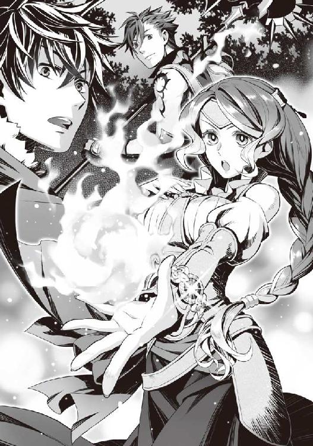

| 盾の勇者の成り上がり 5 (MFブックス) | |
| アネコ ユサギ | |
ＭＦブックス
盾の勇者の成り上がり５
アネコユサギ
プロローグ クラスアップ
現在、俺はメルロマルクという国の、龍刻の砂時計がある教会にいる。
建物の中心に巨大な赤い砂時計が鎮座している場所だ。
「毎回思うが......何か、神聖っぽいというか重苦しい感じのする場所だよな」
「ナオフミ様、私もそう思います」
「赤いさらさらの砂が綺麗だねー」
俺の名前は岩谷尚文。
元々は現代日本でオタクな大学生をしていた日本人だった。
それが何の因果か、気まぐれに行った図書館で見つけた四聖武器書という本を読んでいると......気が付いたら異世界に盾の勇者として召喚されていた。
話によると、この世界は波という世界を破滅へと導く災厄に見舞われている。
この波は一定期間ごとに起こり、大量の魔物が出現して人々に襲い掛かるという災厄だ。
その波を乗り越えるために戦って欲しいと頼まれたわけだ。
最初は夢のような状況にテンションも上がっていたのだが、とある女......今では公私共にビッチという名前になったこの国の第一王女に嵌められ、有らぬ疑いをかけられて強姦魔の汚名を着せられた。
......その所為で迫害され、仲間が得られなかった。
と、俺は思いこんでいた。真相は大きく異なったわけだけどな。
結果、後で説明するが俺以外に召喚された勇者三人と比べ、強くなるのに大きく出遅れる形となってしまった。
しかも援助は受けることもできず戦いを強要されるというとんでもない状況だ。
それでもそれなりに活躍をしながら生き残ることができていた。
他の勇者達が敵わなかった相手に善戦したわけだし......ただそんな、状況が好転しそうな時に俺に更なる冤罪が振りかかった。
俺を召喚したこの国、メルロマルクは人間至上主義の女王制の国だ。
王族の女性が代々継承する国であるらしい。そんな国で事もあろうに、王位継承権一位であるメルティを誘拐したという罪で俺が追われる状況になった。
メルティはビッチの妹だ。性格は気の強い女の子だな。
母親である女王からの信頼が厚いお陰で継承権はビッチよりも上なんだと。
かなり無理やり被せられた罪で俺達は無実を証明するためにメルティの母親である女王の元へ向かった。
その結果、俺の無実は証明された。
事件の黒幕はメルロマルクの国教である三勇教だった。
勇者を象徴する四つの武器のうち、三つを信仰の対象に掲げ、仲間はずれの武器の勇者を敵と認識している。
......その仲間はずれの武器は盾であり、俺だ。
俺が迫害される真の理由は宗教的なもので、強姦したかどうかは全く関係がなかったのだ。
この辺りは長年戦争状態だった亜人の国との争いが原因だとか......。
亜人というのは人によく似ているけれど、体のどこかに人とは異なる動物の耳とか尻尾とかがある人種の総称だ。
それと俺自身に何の関わりがあるのかと問い詰めたくなるが、盾の勇者は亜人の国の信仰対象なのだそうだ。
要するに宗教的に敵であるという理由で憎まれていたわけ。
やってられっか！ と今でも思う。
で、最終的に事件の首謀者にして盾の勇者を差別する筆頭、三勇教の教皇を倒したお陰で事件は収束へと向かった。
その時、俺は教皇を倒すために盾に秘められた呪いの盾、ラースシールドの『ブラッドサクリファイス』というスキルを使った。
自身を傷つけて発動させるこのスキルによって教皇を倒すことができたが、その代償として俺は能力が下がる呪いを受けてしまった。
無実を証明でき、今は他の勇者共と同じ土壌にやっと立ったわけだ。
現在、この国は四聖教を国教にすると女王が決めている。
「まったく......イワタニ様への妨害だけは知恵が回りますね」
「まったくだな」
で、現在そのメルロマルクの女王が、公私共にクズという名前になった代理の王を氷漬けにするという拷問をしている。
女王の留守中に好き勝手した挙句、俺に濡れ衣を着せて差別した罪で改名と代理国王の地位剥奪という罰に処された。
「ぬおおおおおおおおおおお！」
頭以外を氷漬けにされたクズを見る。
苦渋に満ちた顔を、罰した女王ではなく、俺に向けている。
クズの嫌がる顔を見られて爽快な気分......じゃないな。
何が悲しくてこんなモノを見なきゃならんのだ。
知らず知らずメルティ誘拐の陰謀の片棒を担いでいたクズは、俺を召喚した国の本来の女王に処罰された。
三勇教が起こした事件に、クズは関わっていなかったらしい。
もはや国から追放した方がいいのではないかとは思うが、下手に外へ出すと碌なことをしないはずだ。尚、娘のビッチも同罪で王族の権限を剥奪されて、ビッチという名前に改名、更にアバズレという冒険者名で活動せざるを得なくなっている。
しかもビッチは国庫を好き勝手に使って贅沢をしていたらしく、その返済という借金を背負っている。
女王は、表面上はできた人物だ。
世界が破滅へ向かっている現在、メルロマルク国の方針であった亜人差別を拒み、国敵である盾の勇者への協力を要請している。俺への援助を惜しまないつもりらしい。
扇でよく口元を隠す、ものすごく若作りの......見た目二十代後半の美人にしか見えない。
これで二人の娘の母親だと言われても、首を傾げるほどだ。
「ぐぬぬぬ！」
頭だけ残して氷漬けになったクズが悔しそうに俺を睨みつける。
因果応報だろ。勝手に召喚したくせに差別とかふざけたことをした罰だ。
そう思いつつ、俺は女王に次へ進むことを提案する。
「これくらいにして、早くクラスアップとやらをさせてくれないか？」
国の現状と冤罪が晴れるまでの経緯はこれくらいにして、俺自身の問題を振り返る。
この世界には言ってはなんだがゲームのようにＬｖという要素があり、魔物という化け物を倒すことで経験値を得て、Ｌｖの上昇と共に能力に補正が掛かって強くなる。
そして、その分強くなって更に強い魔物と戦えるようになるのだ。
頑張った分だけ目に見える強さが得られる面白い世界だとは思う。
だが......ここに問題がある。
盾の勇者......というか俺が召喚された時に装備していた盾の力では、俺は相手に殴りかかっても傷一つ負わせることができない。
その代わり伝説の盾は強靭な防御力と様々な特殊能力を俺に与えてくれる。
けれど相手を倒せないということは、一人で戦えないということに他ならない。
そのため、迫害により仲間ができなかったというのが一番つらい状況だった。
「ふう......そうですね」
「やっと終わりましたか」
呆れ気味にラフタリアが呟く。
ラフタリアは俺が、仲間ができない状況で戦力を得ようと購入した奴隷の女の子だ。
種族はこの国では忌み嫌われる差別の対象である亜人。
タヌキのような耳と尻尾を生やした......確かラクーン種とか言ったか、そういう名前の亜人の人種である。俺が買った時は幼い子供だったのだけど亜人という人種はＬｖの上昇に応じて、戦いに適した年齢に肉体が急成長するらしい。
なので今では一八歳くらいまで外見が急成長し、可愛いと思わせる少女になっていた。
彼女は世界で最初に起こった波の被害によって生まれ育った村と両親を失った。
今では俺が親代わりとして彼女を育てている。
我が子のような、頼れる相棒の女の子だ。
「まあ、クズへの拷問ならいつまでも見ていたいかもしれないが？」
ニヤッと氷漬けのクズへ挑発まがいに嫌味を言う。
「ナオフミ様！」
「ぐ......盾ー！」
「黙りなさい！」
クズは女王によって黙らされ、俺はラフタリアに注意された。
わかってるって、なんだかんだ言ってラフタリアは真面目だな。
今じゃこんな感じで俺が変なことをしそうになるとストッパーの役目をしてくれる。
「ごしゅじんさまー。まだー？」
「もうすぐだ」
今、俺に声を掛けてきたのはフィーロ。
現在の見た目は金髪碧眼、アホ毛がチャームポイントの羽の生えた天使のような女の子だ。
一応、俺の頼れる仲間だ。
コイツは......なんて説明すべきかな。
「どうしたのー？」
元々はペット目的で購入した魔物のたまごガチャの景品だ。
卵から生まれたフィロリアルという、馬車を引く鳥型の魔物なのだが......どうやら勇者が育てると特別な育ち方をするらしい。
その結果、天使のような姿に変身できるようになった。
人間時の見た目はかわいらしい十歳前後の女の子だが、その正体は鳥の魔物というのが正しい。
魔物の姿の時はフィロリアル・クイーンというらしい。
俺の仲間の中では攻撃の要になる頼れる存在なのだが......元が鳥ゆえにピーチクうるさい。
行商中に野宿などをすると大体、朝一番に起こされる。
で、このフィーロは前回の事件で同行していた王女のメルティと親友の間柄だ。
性格は天真爛漫、時々毒舌だ。余計なことさえ言わなければ可愛げがあるかもしれない。
「何か失礼なこと考えてるー！」
「まあな」
ラフタリア共々勘が鋭くて俺が失礼なことを考えていると敏感に察する。
ま、これが俺の仲間達だ。
でだ、なんで俺達が龍刻の砂時計のある建物に来ているかというと、先ほど話したＬｖの話が関わってくる。
このＬｖという概念、勇者として召喚された俺には上限というものはないのだが、この世界の住人には存在する。
ラフタリアとフィーロはその上限である40に達しているのだ。
その先へ行くにはクラスアップという儀式を行わねばならない。
これは国が管理している龍刻の砂時計を使って行われるそうだ。
この龍刻の砂時計は、次の波がいつ到来するかの目安となる大きな砂時計なんだけど、クラスアップにも使われる。
しかし、俺達はクラスアップを行おうとしてクズによって妨害されていたのだ。
俺は良いとしてもラフタリアやフィーロはクラスアップができていないので打ち止めのような状態だ。
事件解決後、それを女王に伝えると女王はクズを連れてきて事情を聞いた。
するとクズは言い訳を繰り返し、結局氷漬けにされた形で白状した。
俺はそれを嘲笑って見ている。自分で言うのもなんだが性格が悪いな。
だが、ここ数ヶ月の間苦渋を味わわされた俺には笑う権利があるはずだ。他人から見たら確かに酷いと思われるかもしれないが。
「そういや、ここにいたシスターは？」
俺に対して態度が悪く、腹の立つ奴だったが、前回来た時とは異なり、龍刻の砂時計に行くと受付のシスターが兵士に代わっていた。
「教皇の配下として決戦の場に居たので捕縛済みです」
なるほど、捕まったか。ざまあみろとしか思えない。
「それで？ クラスアップはどうすればできるんだ？」
「まずはクラスアップしたい方を教えてください」
少し前まではここでクラスアップなんてできないと思っていたのに、何が起こるかわからない。
あの時は......亜人の国、シルトヴェルトかシルドフリーデンに行こうと思っていた。
だけどメルティ誘拐事件に巻き込まれ、結果的にここでクラスアップできるわけか。
とりあえず、女王の言葉に従ってクラスアップさせたい相手......ラフタリアとフィーロを見る。
「はーい！ フィーロが先にやりたい！」
クラスアップを先にやってみたいとフィーロが手を挙げた。
ラフタリアの方を見ると、それで良いと頷かれる。
「じゃあフィーロを先にクラスアップさせるぞ」
「わーい！」
フィーロがトコトコと前に出た。
「では楽な姿勢になり、龍刻の砂時計に触れて意識を集中してください」
「こう？」
フィーロは魔物の姿に戻り、徐に龍刻の砂時計に触れる。
触れたところから波紋のように砂が輝く。幻想的な光景だな。
「ではクラスアップの儀式を行います」
女王の指示で兵士達が砂時計を囲むように立ち、床にある魔法陣のような溝に液体を流し込む。
「あれ？ なんか聞こえてくる？」
「集中して」
「はーい」
フィーロはゆっくりと目を閉じて、両手を広げる。
砂時計が淡い光を宿し、その光が床の魔法陣を伝った。
中心に立つフィーロを、光が包み始める。
「では、自分の未来を選んでください」
「あ、何か見えてくるー」
目を閉じたフィーロが呟く。
その時、俺の視界にフィーロをデフォルメしたアイコンが浮かび上がり、木の枝のような......ゲーム用語でツリーと呼ばれる分岐が現れた。
「この者は使役される魔物ですよね？ イワタニ様がお選びください」
先ほど述べた通り、フィーロは本来魔物だ。使役される魔物は魔物紋という魔法の紋様を掛けられていて、所有者の言うことを聞かないと痛みが与えられ苦しむようになっている。生殺予奪の権利を握られているのだ。
クラスアップの権利も所有者である俺にあるようだ。
「ああ、そういうこともできるのか」
視界に様々に派生するフィロリアルの可能性が出現する。
だが、俺は。
「これはフィーロ自らが決めることだ。俺が決めて良いものじゃない」
拒否を選ぶ。すると魔物本体に選ばせますか？ という項目が出たので肯定する。
「わ！ なんか一杯見えてきた！ どれにしようかなー......」
フィーロは目を瞑って楽しそうに自分の可能性を選択する。
俺が決めても良かったが、フィーロの一生はフィーロが決めるものだ。
そうだ。ラフタリアにも言っておこう。
「ラフタリア。フィーロにもそうしたが、波が終結して俺が元の世界に戻っても大丈夫なようにラフタリア自身で選べ。良いな？」
「ナオフミ様が選んだ未来なら何でも良かったのですが......」
「ダメだ」
「......わかりました」
不満そうにラフタリアは頷く。
俺が勝手に決めて、その所為で後悔されるのが一番キツイ。
信用しているからこそ、こういうのは自分で選んでもらいたいのだ。
さて、フィーロは何を選ぶかな。
と、思っているとフィーロの頭に生えている人型時にはアホ毛となっている冠羽が光り輝く。
「え？」
パアアアアッと光が強まりフラッシュ。
一瞬、目が眩んだ。何度も瞬きしながら、俺はフィーロの方を見る。
外見に......大きな変化はない。ただ、冠羽が少し豪華になっている。
ミニクラウンのような......そんな感じ。
「無事クラスアップが完了したようですね」
「そうか」
フィーロのステータスを確認してみる。すると見事にＬｖの横にあった★が無くなっていた。
これは上限に到達したという目印だとか。
それが無いということはＬｖの限界が大きく上昇したということだろう。
更に細かくステータスを確認すると、全ての能力が平均的に二倍近く伸びていた。
これがクラスアップか。
「ふむ......これは結構凄いんじゃないか？」
元々能力が総合的に高めだったフィーロは更に強くなったと見て良いだろう。
俺自身のステータスと見比べてみても差が......いや、俺よりも総合的に高い！
もちろん、呪いで低下する前よりもだ。
勝てているのは防御力だけだぞ！
「あのね......なんか選べなかったの......」
人型に戻ったフィーロはこっちへ来るなり今にも泣きそうな声を絞り出して呟いた。
「どうした？」
「毒を吐けるようになりたかったのに、なんか勝手にね、選べるどれでもないのが出てきて決まっちゃったの」
フィーロはどうも過去に戦った強い魔物達が毒を使っていたので、それにロマンを感じていた節があるのだ。
安心しろ、お前は毒は吐けないが毒舌があるだろ。
「お前のアホ毛が光ったように見えたぞ」
「むー......」
「フィーロ、気を落とさずに......強くなったら毒を吐けるかもしれませんよ？」
ガックリと落ち込むフィーロをラフタリアが宥める。
「ホント？ じゃあフィーロがんばる！」
「じゃあ、次はラフタリアだな」
「は、はい」
ラフタリアもフィーロと同じように砂時計に触れる。
その後、同じように兵士が液体を流して魔法陣が淡く輝いた。やはり俺の視界にアイコンが浮かぶ。
さて......拒否を押して──。
その時！ フィーロのアホ毛が二つに裂けて、一つが俺の視界に飛び込んでくる。
「わ!? なんだ!? フィーロ！」
「フィーロじゃない！」
フィーロじゃないだと!? じゃあ、このアホ毛が独立して何かをしているのか!?
ラフタリアは大きく目を開けてこっちを見ている。
「ナオフミ様!?」
俺の視界に溶けたアホ毛によって、ラフタリアのクラスアップ先には本来は存在しないはずの姿が浮かび上がり、勝手にそれに決定された。
「キャ!?」
ラフタリアが悲鳴を上げる。
閃光が辺りを包み、更にもうもうと煙が立ち込める。フィーロとは少し違うな。
煙が晴れると、そこにはラフタリアが咳をしながらこちらを見ていた。
「だ、大丈夫か？」
「は、はい。大丈夫です、が......」
何が起こったんだ？
心配しつつ、ラフタリアのステータスを確認する。
......フィーロと同じく、★が無くなり能力が二倍近く伸びている。
「何になったんだ？」
「それが私にもわかりません。なんか勝手に選ばれたような......凄くいやな予感がしたのですが、問題はないみたいです」
「そうか、それなら良いのだが......勝手にクラスアップ先を決めるなんて何を考えているんだ？」
「誰の事を言っているのです？」
「フィーロの頭に生えているアホ毛は元々フィトリアがくれたものだろ？」
「そういえば......そうでしたね」
メルティ誘拐事件の時、俺達はとても強い伝説のフィロリアルの女王と遭遇した。
その時フィロリアルの女王は、フィーロに戦い方を伝授すると共にアホ毛をくれたのだ。
他に、俺の鎧にも加護を与えてくれた。その代わりに勇者同士は仲良くしろと命令された。
守れなかったら勇者全員を殺しにくるとまで脅して......。
「どういうことですか？」
......ん？ なんか女王の目が輝いて見える。
俺は女王にその時の事を伝えた。
「そうですか、私もフィロリアルの女王に会ってみたかったですね」
「そこじゃねえだろ！」
女王って勇者に詳しいみたいだし、メルティから聞いた話だと伝承の地を巡ったことがあるらしい。
趣味は伝説の探求か？
娘のメルティはフィロリアルに並々ならぬ関心があった。似た者親子だな。
イヤイヤ、今はそんなことを気にしている状況じゃない。
「それで二人共、調子はどうだ？」
「前より体に力が入るような気がします」
「そうか、それは良かったが......」
「フィロリアルの女王の羽ですか......何があるのかわかりませんが......」
残念そうに女王は告げる。
「確かにクラスアップ時には特定の道具を使って、特別な変化を加えることができるそうです。おそらくは......良いことがあることを祈っています」
「ああ......」
「能力の伸びはどれくらいでしょうか？」
「全てのステータスがクラスアップ前の二倍は行っているな」
「二倍!?」
女王が驚いている。もしかして普通よりも伸びが良いとか。
結果的にフィロリアル・クイーンの羽を媒介に使ったからな。伸び率が高いと嬉しいんだが。
「本来は......ステータスの項目の一つが一・五倍行ったら良いほうなのですよ。つまり総合的に強くなったことになりますね」
ステータスには様々なものがある。ＨＰ、ＭＰ、ＳＰ、攻撃力、防御力、敏捷、体力とか。
他にも色々と細かなものがあるが目立つものでこれだけある。
ああ、ＳＰはラフタリア達にはない。勇者だけの項目かもしれない。
女王の言った一つの項目とはこのステータスの一つを指している。攻撃力が一・五倍とかな。
「へーそうだったのか。得ではあるな」
しかし二人は微妙な顔をしている。気持ちはわからないでもない。
クラスアップ──ゲームではありがちなシステムだが、自分で選べるから良いんだよな。
「まあ......がんばれ」
「うう......何か悲しくなってきました」
「フィーロも」
「......なんならやり直しを致しますか？」
女王が提案する。え？ やり直し？
「できるのか？」
「......本来は罪人への罰として行うことですが、できなくはないです」
こういうのって一度きりとかじゃないのか？
オンラインゲームとかの転職システムというモノに似ていると俺は思っていた。
その場合、一度きりだったりするものが多い。
「Ｌｖリセットを行うことによって、クラスアップを白紙にすることは可能です。その場合は１からやり直しになります」
「う......それは厳しいな」
ラフタリアにしろフィーロにしろ、この時点でＬｖ１に戻るのは俺の状況からすると厳しい。
次の波の到来を考えるとなぁ......なんだかんだで馬鹿な争いに巻き込まれて日数を消耗している。
しかし、そんな罰があるのか。
確かに......ゲームっぽい世界ならそんな罰があってもおかしくない。
イヤな罪だろうよ。必死に頑張って上げたモノが一瞬でパアになるんだもんな。
しかし......どうしたものか。
「フィーロやり直したいー。毒吐きたい」
既に吐いてるってのは置いておいて。
「お前に付いてる冠羽が起こすんだから無理だろ。きっと同じ結果になるぞ？」
「うー......」
「ラフタリアはどうする？」
「特にこれと決めていたわけではありませんし、できる限り強くなりたかったので問題ありません」
ま、どうやら普通のクラスアップよりも遥かに強くなれたみたいだしな。
ラフタリアも俺よりステータスが伸びているし。
「そうか......じゃあ城に戻るか」
「はい」
「うー......どくー」
「既に吐いてるだろ」
「えー......」
何とも微妙なクラスアップはこうして終了した。
その後、俺達はクズを龍刻の砂時計に残して城へと戻ったのだった。
一話 勇者の仲間達
馬車で城に戻ると既に城内の広間では宴の準備が行われていた。
「なんだ？」
「此度の事件を解決へと導いたイワタニ様を含めた勇者達全員のための祝賀会ですよ」
「はぁ......」
俺の無実は証明できたわけだし、国内の問題も多少は解決した祝いか。
広間には豪華な食卓が並んでいる。規模で言えば元康と争った時よりも豪華か。
......長かったな。俺自身の無実を証明するのに長い時間が掛かった。
なんて考えに耽っていると、女王が近寄ってきた兵士から報告を受けて頭を抱えている。
「どうしたんだ？」
「ええ......」
俺が首を傾げていると女王は嘆かわしいと呟きつつ説明した。
晩餐を前にビッチが厨房に顔を出し、俺に出す料理を運びたいと申し出たのだという。
反省している。だから罪滅ぼしのために運びたいと頼んだらしい。
そして、俺に出される料理を強引に引ったくり、広間にまで来たそうだ。
何かやらかすだろうと監視させていた女王は、ビッチが問題を起こした時のために、事前にある命令を下していた。
それが、ビッチ自身に振りかかった。
俺に出す食事をそのままビッチに毒味させたのだ。
「で、どうなったんだ？」
「治療院に運ばれました」
罰を与えられてから数時間だというのに......馬鹿じゃないのか？
俺は盾の力で毒耐性があるから大丈夫かもしれないが、わざわざ毒物を食う趣味はない。
反省という文字がない奴だ。
というか立派な暗殺未遂じゃないか。普通に処刑モノだよな。
「これに対する罰は？」
「当然与えます。ビッチが諦めるまで、痛い目にあわせます」
「うむ......反省しない奴には当然な罰だな」
「先に潰せて良かったです。実際に被害が出ていたら、イワタニ様がやっと私を信じてくれたのが御破算になるところでした」
「まあ......わかりきっていた行動だよな。反省しているように見えなかったし」
懲りない奴だ......その執念は賞賛に値するな。何が奴をそこまで掻き立てるのかは知らんが。
ここで怒るのも良いが、先に手を打った女王の熱意を評価しよう。
「ちゃんと監視しておけよ。被害を受けたら迷わず、お前との約束を反故にするからな」
俺達を助けたことで俺は女王の事を一度だけ信じると決めた。
俺の信頼を裏切らないでもらいたい。
「ええ、事前に防ぎます。イワタニ様が如何にメルロマルクに必要かをその身に教え込みます」
女王曰く、クズとビッチには各々数名監視を付けて常時見張っているらしい。
「氷漬けになっているクズも見張られているわけか」
「もちろんです。イワタニ様にはクズとビッチの愚かな行いがなくなるまで報告することになると思われます」
「......わかった」
それから女王は来客が、ある程度集まったのを確認してから大々的に宣言する。
「私、ミレリア＝Ｑ＝メルロマルクは此度の事件を鎮めるために尽くして頂いた方々に多大な感謝を致します。此度の祝宴、皆様、存分にお楽しみください！」
広間に集まった人々が喝采する。前回の宴とは大違いだった。
「わぁ......」
目を輝かせたフィーロが並べられた料理に目移りしている。
今回のパーティーはバイキング形式とレストラン形式に分かれているようだ。
重要な来客には豪華なレストラン形式で食べてもらう。食べ足りなかったらバイキング形式の方に移って食べるというものっぽい。
俺達は案内されたテーブルで運ばれてきた料理に舌鼓を打つ。
前回は会場の端っこで摘むように食べていたのが嘘のようだ。
「こっちの料理を食べ終えたら、あっちの料理を食べに行ってもいいぞ」
「ホント!?」
「そういう決まりだ。好きなだけ食べていい。だけど人型を維持するんだぞ」
「うん！」
出された高価な料理を食べ切り、フィーロは新たな料理を求めてバイキング形式の方へ颯爽とスキップしていった。
質より量か。フィーロらしいな。いや、それでも味を気にするところがフィーロにはあるか。
昔のラフタリアを彷彿とさせるなぁ。
ふと、ラフタリアの方を見る。
「な、なんですか？」
ジッと見ていたらラフタリアが恥ずかしそうな声を出した。
「お前も食べ足りないだろ？ 行ってきていいからな」
「もうそんなに食べませんよ！」
「......体に悪いぞ。辛い戦いの日々だったんだから栄養は補給しておけ」
「はぁ......」
ラフタリアが深い溜息を吐いた。一体どうしたというのか。
「その......ナオフミ様はどんな女の子が好みなんですか？」
「は？」
いきなりだな。だけど別に俺は好きな子とかはいないしなぁ......。
というかそういう話題はビッチを思い出すからやめて欲しいのだが。
「えっと......元の世界に、好きな子が待っていてくれるのですか？」
「何言っているんだ？ そんな奴いるわけないだろ」
俺が元の世界に帰りたいのがそんな理由であるわけがないだろうに。一体何を考えているんだ？
元の世界に帰りたいのは単純にこの世界が嫌いだからだ。
冤罪を被ったり、戦いたくもないのに戦いを強要されたりするし、味方のはずの騎士団が俺に向かって魔法を放ってきたりする。そんなところに永住しろというのは無理な話だ。
「はぁ......」
またもラフタリアは深い溜息を吐いた。
「なんだかよくわからないが、俺は帰りたいから帰るだけだ」
全てが終結した時、俺は迷わず元の世界に帰る。それに理由を求めるというのは......。
そこでふと、最初はこの世界に永住しても良いかもと思っていたのを思い出した。
帰りたいと切に願うようになったのは......ビッチに騙されたからか。
わかっていたけど、改めて認識すると帰りたい気持ちは強くなる。
「盾の勇者様！」
「ん？」
声のする方向を見ると、見知った志願兵たちが俺の方へ来る。
前回の波の時、俺の力になりたいと志願してきた連中だ。
「無事に会えて良かったです」
「お前等も何事もなくて......良かったな」
「......はい！」
凄く嬉しそうに兵士は頷く。
頬まで赤くして......たぶん、この子は四聖教か盾教を信仰していたのだろうな。
「機会があったらよろしくな」
「「はい！」」
なんて話をしていると会場に他の勇者達が入ってくる。
まずは剣の勇者である天木錬が仲間と共にやってきた。
錬はクールを気取る少年だ。黒っぽい服装を好んで着ている。
パッと見の姿はクールな剣士って感じ。年齢は一六歳。勇者の中で一番年下だ。
仲間と軽く会話をした後、別れて一人で席に座る......何か距離感がある関係だな。
次に弓の勇者である川澄樹。
俺の印象だと水戸の御老公みたいな世直しの旅とかしている痛い奴だ。
弓の勇者の権力を行使して正義の味方をしている。正義感は人一倍強い。
見た目は錬より年下に見えるが一七歳だ。髪型は天然パーマで、優しげな目つきが人を惹きつける......かもしれない。
俺の印象だとピアノとか弾いてそうな幸薄そうな少年って感じだ。
だが、正義感が強すぎて人の話を聞かない。見た目と合わない性格をしている......のか？
なんとなく程度しか知らない。
......元康はいないな。治療院に運ばれたビッチの様子を見に行っているのか？
で、残りは、来ていないが槍の勇者である北村元康だ。年齢は二一歳だったか。
ビッチを仲間にしていて、俺の無実が証明されるまで自分勝手にしていた奴だ。
見た目は勇者の中で一番のイケメンだ。些か不満だがそれは認めよう。
フェミニストで女の子が大好き。
人の話を聞かず、俺が賞金首になった時、あまりにも強引な事件にもかかわらず疑問を感じず、俺を犯人と決めつけてどこまでも追いかけてきた。
仲間思いと言えば聞こえはいいが、仲間を全く疑わない馬鹿だとも言える。
その所為でこの国にある本当の悪を土壇場になるまで見抜けなかったんだ。
で、この勇者三人はそれぞれ俺とは違う異世界の日本からやってきていて、おのおのこの世界に似たゲームをやり込んでいたらしい。
俺が読んでいた四聖武器書にも特徴は記載されていた。
剣の勇者はメインで活躍し、槍の勇者は仲間思い、弓の勇者は正義の使者って感じだ。
物語じゃカッコいいのに、あいつ等はなんでああも不快な連中なのだろう。
「元康は来ないのか？」
女王に声を掛けて尋ねる。
「はい。娘の容態を心配して治療院へ行きました。今後のために現在、呼んでいる最中です」
「へー......」
女王は錬と樹に挨拶しに行った。
それからしばらく会食が進み、ダンスや歌も披露される。
ただ......なんていうか豪華ではあるのだが、参加者が前に参加した時の顔ぶれとはずいぶん違うのに気付いた。貴族連中が思いのほか少なく、冒険者や兵士が多い。
後は他国の連中臭いのが多いな。時々俺の方をチラ見している。
やがて女王は錬と樹を俺の所へ連れてきてから、ステージへと登る。
「なんだ？ どうしたんだ？」
「女王が集まって欲しいって言うからさ」
「ええ、なんでしょうね？ 元康さんもいませんし」
「俺を毒殺しようとした女の容態を気にして治療院へ行ったんだと」
「毒殺!?」
「わかるだろ？ 奴だ」
「......ああ、本当だったのか」
「女王が毒を飲ませたのでは？」
「その時間、俺と一緒に居たし、奴が運んだ料理を奴に食わせただけだそうだ」
「なるほど......」
なんて話していると女王が振り向いて堂々と告げる。
「さて、勇者様方。此度の宴はどうでしたでしょうか？」
「悪くない」
「ええ、達成感はあります」
「無実が証明できて一安心ってところだ」
「それは何よりです」
ホント、今までの苦労がやっと報われたと、改めて思う。
女王は何度も頷いたかと思うと扇を畳んで高らかに宣言した。
「この度は私共の国の者達が問題を起こし、勇者様方には多大なご迷惑をお掛けしました。その補填をしたいと私共は思っております」
なんだ？ 補填？
「近々この国の近海にある......カルミラ島が活性化するようです。勇者様方には奮ってご参加くださるようお願い致します」
......何その島？ 活性化って何？
「本当か!?」
錬が興奮したように一歩前に出て大声を出す。
「なんだそれ？」
「まさかボーナスフィールドですか!?」
樹も錬と同様にテンションを上げて一歩前に出る。
「なんだ？ 何があるんだ？」
俺はこの世界に詳しくないんだよ。何が起こるのか教えろっての！
「イワタニ様はご存じないようなので説明しますね。活性化というのは十年に一度、その地域で手に入る経験値が増加する現象です」
女王の話を掻い摘むとこうだ。
カルミラ島という島は保養地として有名であり、同時に場所によって様々な魔物が密集して生息する地であるらしい。
Ｌｖを上げたい冒険者も時々来訪する有名な地であり、特に十年に一度の活性化する時期となるとかなりの人が押し掛ける。
今回の事件で勇者四人のＬｖ上げを妨げてしまったことへの補填がこれだそうだ。
「もちろん、宿の手配、入島の手配は済んでおります。皆様、奮ってご参加ください」
オンラインゲームとかでいうところの経験値増加イベントとかそんなところか？
経験値の倍率がよくなり、敵も手ごろか。ゲーマーなら喜ぶイベントだな。
「それから、勇者様方には島へ行く前に情報交換をなさってはいかがかと私共は提案いたします」
「情報交換......ですか？」
「はい。徐々に厳しくなる波を乗り越えるため、勇者様方にはもっと連携して挑むことが必要不可欠かと思われます」
「必要ないだろ？」
錬が女王の提案を切り捨てるかのように言った。
おい。何が必要ないだよ。俺はお前等のような情報通じゃねえんだよ。わからねえっての。
「ですが私共は波の時に勇者様方の連携がなっていなかったと聞いております。その辺りの話し合いは重要かと思うのですが？」
「......」
錬が黙りこむ。
そうだよなぁ。お前等、波の時に騎士団の連中を編成で連れてこなかったもんな。
どうやら勇者には仲間を編成で募れば編隊した連中を、自分が波の現場に召喚される時に一緒に連れていけるみたいなのだ。
だが、こいつ等は誰もそれをやらなかった。
だから、俺と一緒に波へ挑みたいという志願兵達以外、国の騎士団はあの時の波には参加していないという始末だった。
「ほかにも、勇者同士で合同演習を行ったり、仲間同士の話し合いも重要かと思いますが？」
「......そうですね。これからの波を乗り越えるには必要な手順かもしれません」
樹がそっと同意した。耳触りが良い言葉だもんな。
ここで異議を唱えたって悪者にしかならない。
むしろ異議を唱えたら戦死しそうだ。
俺もここは同意すべきだと思う。
何せフィロリアルの女王であるフィトリアからも勇者同士は協力して波に挑まねばならないと言われている。
以前だったら話し合いをする必要はないと切り捨てただろうな。
どうせ俺の事なんて信じないってな。
だが、錬達は俺と話をして、三勇教の説明をおかしいと分析した。
ならばこちらも少しは信じてみよう。
「では宴の最中に、話し合いの席を設けるとしましょう。ささ、勇者様方は改めて自己紹介をしてから付いてきてください」
俺達は顔を見合わせた。
「だとさ」
「連携は重要ですね。まずはどうしましょうか？」
「それぞれの仲間を紹介すれば良いんじゃないか？」
「そうですね。では僕の仲間から紹介しましょう」
と、樹が俺達を案内して自分達の仲間の元へやってきた。
「この方々が僕の仲間をしてくださっている人達です」
と、樹は俺と錬に自らの仲間を紹介した。
「自己紹介は初めてですね。盾の勇者さん。そして......何度か話はしましたね剣の勇者さん」
「......ああ」
樹の仲間達がそれぞれくつろいだ体勢で俺と錬に自己紹介をした。
自然体だ。祝いの席なのに緊張した感じが全くない。持てなされるのが当たり前というかのように兵士に給仕を頼んでいる。
「盾の勇者の岩谷尚文だ。よろしく頼む」
挨拶をしつつ、樹の仲間を確認する。
えっと......五人か？ 目立つ鎧をつけている奴が偉そうに腕を組んでいる。
俺が凝視した瞬間、鎧は腕を組むのをやめた。なんか嫌な予感がするなぁ。
「ええ、よろしくお願いします。我等、イツキ様親衛隊は世界のために戦う所存です」
「「親衛隊!?」」
すげぇ言葉が出てきた。俺と同じく錬が声を裏返して樹を見た。
おい。錬、お前も初耳なのかよ。やばい......笑いそう。
樹は一体何をしているんだ？ どうにか笑みを噛み殺す。
「「「そう、我等、イツキ様親衛五人──」」」
「すいません！ 頼まれた料理を持ってくるのに時間が掛かってしまいました！」
振り返るとそこには女の子が一人、料理が盛られた皿を大量に持ってきている。
おい......落とすぞ。
「あ──」
あ！ 俺は咄嗟に落ちそうになった皿を掴む。
「す、すいません！」
この子......年齢は......どれくらいだろう。
一四歳前後か？ ちょっと幼い感じだ。
育ちの良さそうな整った顔付きをしている。かなり可愛い方じゃないか？
ちょっと気が弱そう。元康だったらナンパしているだろうな。
小柄だなぁ。樹の仲間っぽいけど、魔法とかで戦うのかな？
「遅いぞリーシア！ ほら、自己紹介に加われ」
「ふ、ふぇえ......は、はい！」
「「「我等、イツキ様親衛隊六人衆！ 今後ともよろしくお願いします！」」」
「さっき五人衆と言おうとしなかったか？」
錬が俺に向かって囁く。俺にもそう聞こえた。とはいえ......ここで指摘するのも面倒だ。
「言ってやるなよ。察してやれ」
正直、不安だ......だけど迷惑が掛からない限り、樹なりの方針と思って黙っていよう。
「どうですか？ 頼もしいでしょう？」
「とりあえず言いたいことは山ほどある気はするが、まあ......良いんじゃないか？」
右からずらっと改めて確認する。どいつも自信に満ちた表情を浮かべている。
頼りになるとは思うが、教皇との戦いじゃ全く戦力になっていなかったんだよな。
樹は自慢げだが、どうも代表の鎧の目つきが気になる。
俺の事を蔑むような目で見ているような......というか、他の連中も同じだな。
リーシアって子は挙動不審で辺りをキョロキョロと自信なさげに見渡している。
「あんまり関わっていなかったけど、変わった仲間達を連れているんだな」
錬が言葉を選びながら、感想を述べた。概ね俺も同じ感想だ。
「そうですか？ 普通だと思いますが？」
どこがだよ。親衛隊ってだけで十分おかしいと思うぞ。
副将軍みたいな世直しの旅をしていると思ったけど、仲間は親衛隊とか言っちゃうのか。
なんだろう、このテンション。付いていけない気がする。
その後、樹は一人一人の名前を教えてくれたが頭に入らなかった。
そんなことより派手な鎧が顎をこっちに向けて見下した感じに俺を見てるのが気になる。
ものすごく不快だ......言っておくか。
「樹」
「なんですか」
「そいつの目つきと態度をどうにかしろ。俺の事をまだ犯罪者だと思ってるだろ？」
「それは尚文さんの心の持ち方ではないのですか？ 僕には特に気になりませんが？」
「む！」
樹......どうも腹の立つ言い回しをしやがるな。
「そりゃあ、お前を見ている時とは目つきが違うんだよ」
「気の所為ではありませんかな？ 盾の勇者さん」
「お前の話をしてんだよ。横から入ってくるな！」
どうも仲間の教育がなっていないように感じる。樹の事だ、俺の悪口を常日頃から言っていて、それを信じてしまっているのかもしれない。
いや......元々メルロマルクが集めた勇者の仲間だからな、なんだかんだで盾の勇者を嫌悪している可能性は捨てきれないか。
「さっきから気になっていたんだが」
錬が軽く手を挙げた。
「なんですか？」
「樹の事は『様』付けなのに、なんで俺や尚文は『さん』付けなんだ？」
「剣の勇者さんや盾の勇者さんはイツキ様よりは活躍の面で格下。ですから私達はさん付けで呼んでいるのです」
なんだと？
幾らなんでもそれはないだろ。何がコイツをそこまで......周囲を見ると樹の仲間は一人を除いて同じ意見らしいな。
尚、その一人はリーシアと呼ばれているパシリにされていた子だ。
本音はわからないが、俺たちと仲間の言い合いにうろたえている。
錬は呆れたかのような溜息を吐いた。
「......何を言うかと思えば」
活躍の面って......あの秘密主義の樹が世間でどんな認識をされているのかわかっているのか？
世直しの旅をしているつもりになっているが、全然噂になってねえよ。
「活躍？ 一番地味な勇者って評判の樹がか？ 弓の勇者がどこどこでどう活躍したとか俺の耳には入ってこないな」
「う......錬さんや元康さんのように称賛されることを目的に行動してはいませんからね。しょうがないですよ」
言葉に詰まった樹はそう返す。
なんだよそれ。むしろ世直しの旅をしているのは称賛欲求の結果じゃないのか？
正体を隠して正義の味方ごっこが趣味のくせに。
「貴様......イツキ様を愚弄するのか!?」
「......やるか？ 馬鹿にされて黙っているほど、俺は優しくないぞ」
錬がそう呟きながら殺気を放ち、剣に手を掛ける。
「ふぇえ......」
「やめてください！ 錬さん！」
樹が錬と鎧の間に立って止める。
「樹、どうやら俺達はもう少し話をする必要がありそうだな」
「......」
錬が不快そうに樹に吐き捨てた。
「とにかく、錬さんや尚文さんは僕と同じく勇者なのですからもう少し敬意を示してください」
「善処します！」
と、鎧達は敬礼していた。だが、本心ではどう思っているのやら。
「じゃあ、次は俺の仲間達を紹介しておくか」
錬がポツリと呟いてスタスタと勝手に歩いていく。
不穏な空気を残しつつ、俺と樹は錬についていった。
「ようこそいらっしゃいました。盾の勇者様、弓の勇者様」
「お、おう......」
錬の仲間達は食事をしていたが、緊張したように揃って立って敬礼してきた。
樹の仲間を見た後だっただけに拍子抜けだ。
えっと......錬の仲間の人数は四人。
「盾の勇者の岩谷尚文だ」
「弓の勇者をしています川澄樹です。何度かお会いしたことがありますね」
なんか初日に見たことのある奴が三人、もう一人は追加かな？
「よろしくお願いします、盾の勇者様、弓の勇者様」
「ああ」
全員礼儀正しいな。
だけどコイツ等......俺の仲間に入るのを嫌がって錬の後ろに隠れたんだよな。
それは忘れない。
油断してはならないし、信用してもいけないな。
「あの時は申し訳ございません」
「へ？」
代表らしい男の......戦士かな？が俺に頭を下げる。
「何分、メルロマルク国王がいる場で盾の勇者様の味方をしたらどんなお咎めを受けるかわからなかったもので」
代表に合わせるように他の奴等も頭を下げた。
「都合の良い話だとは思いますが、どうかお許しください」
「わ、わかった」
なんか......妙に相手の腰が低くて拍子抜けだ。
今までの経験から何か裏があるんじゃないかと疑いたくなる。
「それでレン様、何かあったのですか？」
「さっき勇者同士で連携しろって言われたから、仲間を紹介しているんだ」
「そうだったんですか。ところでレン様、明日からの日程の確認ですが、どこで魔物を倒していればよろしいでしょうか？」
「「はい？」」
俺と樹が同時に疑問の声を上げる。
「近々カルミラ島へ行くらしい。そこで狩ることになる。準備を整えておけ」
当たり前のように錬は仲間達にそう答えた。だが、問題はそこじゃない。
「ちょっと待て、何の話をしているんだ？ 錬じゃなくお前に問いたい」
「はぁ......えっと、私達がレン様とは別のパーティーでどこでＬｖ上げをしていればよろしいでしょうか？という話です」
......ええっと、説明されているのに、理解できないのはなぜだろう。
いや、言ってることは理解できるのだが......なんていうの？ 方針の違い？
樹も俺と同じく思うところはあるのだろう。だが、先ほどのこともあって下手に突けない感じだ。
「何かあるか？」
「うーん......」
まあ、錬がそれで良いのなら、良いんじゃないか？
「錬さんとは別行動が常なんですか？」
樹が尋ねた。すると錬の仲間が頷く。
錬の仲間達の話はこうだ。
錬の方針は仲間達に適正Ｌｖの強さの魔物が出現する場所を紹介し戦うコツを教える。
そして、言われたとおりにＬｖを上げて魔物の素材や鉱石、道具を集めるのが仕事らしい。
時々強力な魔物を錬と一緒に倒しに行くこともある。
「後は、敵の攻撃は絶対に受けないように気をつけろといつも注意していただいております」
なんとも......俺もネットゲーム経験がかなりある方だから言えるが、ギルドとか、システムを使って運営している組織で高Ｌｖプレイヤーが後輩の低Ｌｖプレイヤーに助言するのに似てる。
というか、まんまそうだな。
「そうですか......錬さんは一人で戦っているんですか......」
樹が呆れた目で錬を見ているが、錬は全く気付いていないようだ。
錬の仲間達は善意に解釈しているみたいだが......これって......距離感があるな。
つまり錬は他人とつるむのはカッコ悪いとか思っている。もしくは苦手なんだろう。
ネットゲームをプレイしていたといってもソロプレイをしていた可能性が高いぞ。
大規模イベントとか強力な敵を倒したい時だけ、所属していた組織で仲間を募るとかのプレイスタイルだったのだろう。
もしくは......小さいギルドで見知った相手だけを勧誘して後輩育成をしていただけとかか......優越感には浸れるだろうが、異世界に来ても同じことをするってどうなんだ？
俺もネットゲームの経験があるから察することができる。
ま、異世界で世直しの旅をしている樹とは似た者同士か。
「次は尚文さんの番ですよ」
「......そうだな」
こりゃあラフタリアとフィーロを紹介したらなんて言われることやら。
錬と樹とは話が通じそうだと思っていたが、どうも雲行きが怪しくなってきたな。
「じゃあ、ついてこい」
俺はラフタリアが休んでいるところへ二人を連れていった。
「お帰りなさいナオフミ様、どうかしたんですか？」
「ああ、とりあえず勇者同士の連携を強化して欲しいって話で、それぞれの仲間を紹介して回っているんだ」
「なるほど......では自己紹介をしますね。私の名前はラフタリアと申します」
「剣の勇者をしている天木錬だ」
「弓の勇者の川澄樹です。これからは一緒に戦うことも多くなると思います。よろしくお願いします」
「あまり足を引っ張らないなら頼りにするかもしれないな」
ラフタリアが錬の台詞にポカーンと呆気に取られている。
そりゃあ、そんな言い方じゃ足手まとい前提の上から目線に聞こえるだろ。
「足手まといになった覚えはないのですけど......」
「錬さんは別に悪口を言ったり馬鹿にしたりしているつもりはないですよ。アナタ達の強さは戦った僕達が知ってますから」
樹が補足する。勘違いさせるようなこと言うなよ。
「そうだな......思ったより強くはある」
「そうですね。そこも気になっていますけど......背中に羽の生えた女の子がいませんでしたか？ 確か魔物に変身する子だったと思うのですが」
「ああ、フィーロの事か。たぶんあそこだ」
フィーロは......バイキングの方で飯を貪っていたはずだ。
俺はフィーロの後ろ姿を見つけ呼びかける。
「フィーロ」
「んー？」
俺の呼びかけにフィーロが飯を食うのを中断してやってくる。
「どうしたのごしゅじんさまー？」
「ああ、知った顔だとは思うが、俺と同じく勇者をやっている連中を改めて紹介することになったんでな」
「えー？」
フィーロが困ったような顔をして一歩後ずさる。
「槍の人みたいな人達？」
「違う違う。あんな女と見れば節操なしじゃねえよ。な？」
「ええ、そこは同意します」
「そうだな。同類に見られたら心外だ」
ここでは心が一つだな。そう、さすがにあそこまで女好きじゃない。
「そんなわけでお前も自己紹介しろ」
「うん！ フィーロの名前はフィーロ！」
うわ......凄いバカっぽい！ 一人称がフィーロってところが馬鹿を主張してる。
「ごしゅじんさまの馬車を引くのがお仕事なの！」
とても誇らしげに言うけれど、見た目幼女が馬車を引くのがお仕事と満面の笑みで言うのはどうなんだろうか？
錬と樹が微妙な顔で俺を見ている。
「僕は川澄樹と言います。よろしくお願いしますね」
「天木錬だ。足手まといには......ならないか。期待している」
「うん。よろしくね。弓の人！ 剣の人！」
わざわざフルネームを言ったのに武器の特徴だけで呼ばれて錬と樹はこれまた微妙な顔をした。
......自己紹介の後、沈黙が俺達三人を支配する。
ラフタリアもフィーロも、お前等の仲間みたいなおかしな言動はしないからな。
「ラフタリアさんは奴隷でしたよね」
「ええ」
樹が口を開いて尋ねる。何を言うつもりだ？
「主従関係ですが、尚文さんの事はどう思っているのですか？」
「そういえば......そのような関係でしたね。あまり意識していませんでした」
アッサリとラフタリアは答え、樹は不思議そうな顔をしている。
「何分、ナオフミ様に無茶な命令をされたことは殆どありません。頼られていると思うと頑張りたくもあるので」
「戦いをイヤだと思うことは？ 自由になりたいとか思わないのですか？」
「ありません。自由になったとしても行くあてもありません......私の故郷はもうありませんし、私はナオフミ様と一緒に戦いたいと思っています」
「......そうですか」
「どうしてお前等は不満を言わせようとする質問ばかりしているんだ？」
仲間の紹介は親善であって、短所探しじゃないだろ。
「そもそも元康が尚文に決闘を申し込んだ時にこの件は解決しただろ」
「......そうでしたね。すいませんでした」
表面上はさらりと流しているようだけど、樹は微妙に引っかかる目を俺に向けていた。
知らんな。ラフタリアは確かに奴隷だが、今では頼れる相棒だ。
俺の思い込み......じゃないことを信じたいが。
「後は仲間達で話し合いをして俺達は女王の所へ行くか」
「そうだな。ラフタリア......錬や樹の仲間達と少し話をしておいてくれ、今後の連携のためにな......ちょっと不安だが、できる限り喧嘩にならないよう注意してくれ」
「はい。わかりました」
二話 勇者会議
錬も樹も仲間達に説明した後、俺達は女王の元へ行く。
すると女王は俺達を連れて会場から出て別室へ向かった。城の長い螺旋階段を昇っていく。
案内されたのは塔のようなところの頂上の部屋だった。
部屋に入る。円状のテーブルが中心に備え付けられている内装だ。
円卓の席みたいだな。俺と錬と樹はそれぞれ備え付けの椅子に座った。
「じきに槍の勇者様であるキタムラ様も来ます。どうかしばしのお待ちを」
......錬と樹は暇をもてあましたのか、何かアイコンを見ているように目を泳がせ始めた。
俺もステータスやツリーなどを確認する。
なんだかんだで最近はないがしろにしていたから丁度良いか。
五分経過した頃だろうか。
不機嫌そうな元康がやってきて俺を思いっきり睨む。
「キタムラ様、娘に確認したかと思いますが？ イワタニ様に毒を盛ろうとした罰ですよ」
「そういえばそんな話をしていたな」
錬が元康と女王を冷淡に見ながら答える。
「キタムラ様がお怒りになると思い、配下の者に我が娘ビッチから直接白状するように命じました」
奴隷紋でビッチは現在、真実しか言うことができない。
特に女王や元康の問いに対して嘘はご法度だ。
おそらく、元康は治療院でビッチに経緯を白状させたのだろう。信じては......いないようだな。
「アバズレは悪くない！ 尚文が悪いんだ！」
「我が娘は白状したと思いますが？ キタムラ様も奴隷の所持権利を持っていらっしゃるので内容はおわかりかと？」
「ぐ......」
「今は愚かな娘の事で争う時ではないのをご理解ください。娘を大事に思うのでしたら......世界を救うことが一番の近道ですよ」
苛立った様子で元康は言葉をぐっと飲み込んで席に座る。ここで話し合いをするのか......先行き不安だな。
部屋の雰囲気もあって円卓の騎士みたいな気分になる。
元康と俺、どっちが裏切りの騎士ポジションなんだろうか？
「ではこれより、四聖勇者による情報交換を始めます。司会と進行は私、ミレリア＝Ｑ＝メルロマルクが務めます。どうぞよろしくお願いします」
「ああ」
「よろしくお願いしますね」
「情報交換か......」
「話すことなんてないだろ」
女王が進行するのだが......元康が不機嫌そうに吐き捨てる。
秘密癖もここに極まれりだな。不機嫌なのはわかるが、お前の女が悪いだけだろ。
「では司会進行である私から先に、各国の反応や配下の者達の声を伝えようと思います」
ん？ 女王から何か言いたいことがあるのかな？
「正直に述べましょう。各国の伝承や波の記述、その他を総合するとイワタニ様以外の勇者様方に関して、強さに難があるのではないでしょうか？との意見が出ています」
「「「何!?」」」
三人の勇者がそれぞれ不快そうな声を上げる。
「どういう意味ですか？」
樹の言葉に錬と元康が頷く。
「よりによってなんで尚文が一番強いようなことを言うんだ！」
「ではお聞きいたします。三勇教の教皇に対して、一番効果的な攻撃をなさったのは誰ですか？ その前の波でもイワタニ様以外の御三方は敗れたと耳に入っていますが？」
「う......」
そこなんだよな。
こいつ等、元いた世界で似たゲームを経験しているから強くなれるとか言っていた割にはそこまで強く感じない。
最初は相当出遅れた感じがしたが、それほど強さに差を感じないというか。
元康もクラスアップ前のフィーロを相手に相当苦戦していた。
実際のＬｖはどれくらいなのかよく知らないが、情報通で、この世界でもうずいぶんと戦っているんだ。行商でＬｖアップが滞り、クラスアップできなかった俺達に苦戦するのはどうなのだ？
しかも勇者なんだから間違っても普通の人間よりも強い......はずだろ？
金だってこれまでクズから援助を受けていたし、困ってはいなかったはずだ。
「この世界の者達は勇者様方が連携をすることを提案しているのです。趣旨をご理解いただけたでしょうか？」
「......わかりました」
「そうだな」
「......わかったよ」
三人とも不満ではあるが、意図は理解したらしい。
「......尚文さん。まずはアナタから話したらどうですか？」
「どうして俺が先なんだよ。女王はお前等にも聞いたんだろ」
「ですが、言ってはなんですがアナタの仲間はＬｖにしては不自然に強すぎます。アナタの持っているあの禍々しい盾にしてもです」
「そうだな、まずはその話を聞きたい。ラフタリアって子はもとより、フィーロという魔物も不自然なくらい強い」
「ああ。ラフタリアちゃんもフィーロちゃんも何か凄く頼りになる強さだった」
......コイツ等、情報通のくせに俺から聞き出すことを優先するとかどういう考えだよ。
ラフタリア達の成長とカースシリーズは、奴等の知識にはないということか。
これを簡単に話したらダメだな。
「お前等は情報の対価を支払えるのか？」
「何？」
「だってそうだろ？ お前等は盾が弱職だからと切り捨てて俺に何も教えなかった。となれば俺が強さの秘密を教えても、自分達のは言わないかもしれない。必要なことは......わかるよな？」
これだけの材料と認識があれば幾らでも相手を交渉の場に引きずり出せる。
秘密癖で教えてくれなかった情報を洗いざらい吐かせるとするか。
「別に教えていないわけでは......」
「ヘルプを見ろ」
「まあ......確かに詳しく話してはいなかったよな」
気まずそうに各々が答える。
「どっちにしても何も教えなかっただろ？ 今ヘルプを見ろと言った自称クール。効率の良い狩場もヘルプに載っているのかな？」
お前等は俺から情報を引き出すために顔色を窺わねばならない。
相手から何かを聞き出すのに必要なことを忘れてないか？
お互い様なのは確かだが、交渉するには場の空気を支配する必要がある。
今、この場で俺から情報を聞くには自分も話さなければならないという空気ができつつある。
あと一押しすれば、行けるか？
「お前等の秘密癖と同じで俺も隠しているんだ。腹を割って話す時が来たんだよ」
「チッ！」
忌々しそうに錬が舌打ちをする。
「あと、お前等さ......波で一回負けていることを自覚しろよ。下手をしたら死んでたんだぞ」
「何を言っているんですか。あれはイベント戦闘ですよ。絶対に負けるんです」
「は？」
「いや、俺達勇者とその仲間は負けたら治療院に運ばれるだけで済むんだよ。死にはしない。そういう加護があるんだ」
「その証拠に教皇の不意打ちを受けた時も僕達を治療院に運んでくれました」
何を言っているんだ？ コイツ等、頭大丈夫か？
「なんの事を言っているのでしょう？ イワタニ様の言葉も時々わからないことがありますが、これはどういうことですか？」
女王が困惑した声を出している。俺も同意見だ。
コイツ等、今『自分達は不死身だ。何があっても死なない』と公言したようなものだぞ。
「一応、俺がお前等の倒せなかった教皇を倒したんだが......」
「「「弱職の尚文が倒せるわけがない。あの不思議な盾のおかげだ」」」
......何を言っているんだコイツ等。
負けても治療院で復活？ ゲーム感覚なのか？ イベント戦闘とか本気で言っている？
だから負けたのに......切羽詰まっていないんだ。弱職と罵られたのにまるで怒りが湧いてこない。
こ、これは......。
「そんなのはどうでもいいから話を続けようぜ」
どうでもよくはないだろ......コイツ等、まだゲーム感覚なのかよ。
やばい。何か非常にヤバイ。ここは早急に意識改革をするべきだ。
「お前等、この世界はゲームじゃないんだぞ？ 死んだら終わりだぞ！」
「ですから、僕達には加護があるんですよ」
「ああ」
「そうだぜ」
ダメだ......話が通じない......。
俺は今、この世界に来てから起こった問題の中でも一、二を争うほどの危機感を抱いていた。とはいえ、注意しても無駄なら、適当に話を合わせるしかない。
コイツ等が死んでも大丈夫なように自分を鍛えないと......ってダメだ。
フィトリアが言っていた、四聖勇者が欠けるとその分、波が厳しくなるって。
「......そんな状況で俺を殺そうとしたよなお前等？ その場合はどうなるんだ？」
「どうって......死ぬんじゃないんですか？」
サラッと樹が言う。
殺人に抵抗の欠片もないのかよ。悪人を裁ければどうでもいいのか。
「俺はおかしいと思ってた。殺せないだろとかな」
「元の世界に追放だろ？ やっぱ」
「元康、お前を追放してやろうか！」
そんな実証不可能なことができるはずないだろ！
「とにかく、ゲーム感覚はいい加減やめろ！ お前等が生き残れたこと自体が奇跡なんだよ！」
俺の言葉などどこ吹く風と、三人共聞き流してやがる......これはどこかで痛い目を見ないと理解しないな。理解した時には手遅れだった、だと困るんだが。
「はぁ......復習を兼ねて一から、ヘルプにも載っているものから説明してもらおう。じゃなきゃ俺も教えないぞ」
「......しょうがないな。面倒だが尚文がそこまで言うならやってやろう」
「ええ、勇者同士で足を引っ張り合うのもなんです」
「ま、結果は変わらないか。どうせやることは変わらねえし」
とりあえず、俺も強くなる方法を聞かないと始まらない。
コイツ等の所為で乱されたが、俺のペースに戻すとしよう。
「ああ、まさか帳尻を合わせるために嘘に同調するなんてことを、世界を救う正義の勇者がするはずないよな、樹」
「う、嘘なんて吐きませんよ！」
「どうだかな。嘘吐きはカッコ悪いよな、錬」
「あ、ああ」
「嘘吐きは女に嫌われるもんな、元康」
「そ、そうだな」
こんなものか？ 嘘を封じさせて話を引き出す前提を構築するのは。
俺の中では錬はカッコ悪いことを嫌う。
元康は女に良く見せようとする。
樹は正義。まあ自分勝手と書いて正義だろうけど、嘘＝悪の図式の存在するこの場では面と向かって嘘を吐きにくい状況だ。
ここを指摘すれば、偽りの情報を話しはしないだろう。
「じゃあ樹、お前からだぞ、初歩の初歩からでいいから話せ」
「な、なんで尚文さんが進行しているのですか？」
不快そうに眉を寄せた樹だったが、俺達に顔を向けて話し出した。
「勇者の武器は武器に入れた素材によって解放され、連なるツリーによって強化されていきます。僕のしていたディメンションウェーブというゲームでも近いシステムでしたが、その幅や変化は大きいですね」
「ん？ 完全に同じじゃないのか？」
「ええ、殆ど同じですが、知らない武器も多くあります」
そうなると武器の情報を完全に知っているわけではないのか。
確かに解放される能力を知っていれば、奴隷や魔物系の盾の効果を知らないはずがないんだよな。
「後は、一度変化させても前の武器が残っているというところが相違点ですかね」
錬も元康も頷く。一応、違う部分もあるのか......どうにも引っかかるな。
「次は俺か」
錬が手を上げて話す。
「樹の話の続きだ。解放された武器によって装備ボーナスを獲得できる」
これも確かな情報だ。俺もずっとやってきている作業だ。
「ま、この装備ボーナスの制度が俺のやっていたブレイブスターオンラインと少し違うが」
「違うのか？」
「ああ、スキルの習得はスキルポイントと熟練度だった」
まあ、確かにここは違う点なのも頷けなくもないか。俺がやっていたゲームでもスキルポイントがあって、それを振り分けてオリジナリティのある自分のキャラクターを作成できたし。
なんていうか、この盾はツリーの解放さえできれば全てのスキルを習得できるのではないかと思う時はある。
しかし......ここまで相違点があるのに、コイツ等は同じゲームだと思っているのか。
「そうですよね。間違っていません」
「ああ」
「でも、全てのスキルが習得できるということでこそ、俺達は勇者なのだろう」
......ああ、なるほど。普通の冒険者は限られたスキルしか習得できないとか、脳内で状況を変換しているのか。自分達は伝説の武器の力で普通の人とは違う力を得たと。
「次は俺だな、武器は同じ系統の武器を持つことでコピーできる。ウェポンコピーシステムがあるよな」
「......は？」
なんだそれ？ 知らないぞ！
「ええ、これは大きな相違点でしたが、タダで強い武器が手に入って助かりました」
「ああ、俺達は勇者だ。こういうこともある」
「みんなわかってると思うけど傭兵の国ゼルトブルの首都にある武器屋の品揃えが良い」
元康の言葉に、さも当然のように頷いている二人。
「なんだそれは!?」
いきなりの爆弾発言に俺は大声で返す。
ウェポンコピー？
ヘルプにそんなものないぞ？ 四ヶ月近く異世界に居るのだからヘルプは全部目を通した。
コイツ等の説明から察するに店売りの武器を持つとその武器が解放されるといったところか。
「尚文さん。そんなことも知らなかったんですか？ よく生きてられましたね」
うわ、むかつく。その目凄くむかつく！ 道理で変な盾ばかりだと思ったんだ。
アイアンシールドとか、ラウンドシールドとかバックラーとか普通の盾がないなぁとは思っていたんだよな。
「お前等、自分で見つけたのか？」
「というよりも、店売りの武器を使おうとするのは当たり前だろ？ 最初は弱い武器だったし、強くしていくと言われても、最初はな......」
そういえば、俺も盾はこの際諦めて剣を使ってみようと思ってたんだ。
その時、
『伝説武器の規則事項、専用武器以外の所持に反しました』
って出て戦闘に使えないのを理解したんだった。
「規則事項で弾かれはしたけど、ウェポンコピーができて装備できたんだよな」
「ああ」
「ですね」
頭が痛くなってきた。
そりゃあ俺は盾さ、攻撃が大事だから店売りの盾に興味を持たない。
成長する盾という防具を持っているんだから、片手剣とか、武器を持つだろうよ。
だから気付かなかったってか？
「......話を続けてくれ」
こりゃあ俺の知らない情報が腐るほど出てきそうだ。
「魔物は武器の素材になると同時に、武器の項目内で調べるとドロップアイテムが手に入る」
ドロップ!?
あー......そういえば普通のネットゲームとかだと魔物がアイテムを落とすよな。
魔物自体の素材とは関係ないアイテムとか。
俺の馬鹿！ それくらい推理して答えを導け！
「なんか店じゃ凄く高いアイテムがあるよな。在庫もあるようだし、この辺りは異世界って感じだよな」
「そうだな」
「ですね。魔物のドロップ頼りのものもありますよね」
なんか凄い情報がさっきから出るわ出るわ。しかも共通認識っぽい。
最初の頃も感じたが、不快な気分だ。
「後は道具の作成だよな」
「技能系ですね。これは元からありますよね」
「......一応、詳しく」
コイツ等の当たり前が俺にとって驚愕である可能性がある。心を強く持って聞こう。
「技能のスキルとレシピを習得したら武器に材料を吸わせて、システムで作るんですよ。しばらくすると武器から出てきます」
武器のシステムで作れるのかよ！ なんてこった！ 俺は今まで手作業で作ってたぞ！
一応直接作っても効果は発揮されるのだろうが、レシピがあれば武器が作ってくれるらしい。
ということは、元康が不自然に魔力水を持っている理由はシステムで作っていたからか。
材料は魔物のドロップで簡単に手に入るとかか？
「難点はドロップとか作ったアイテム以外取り出せないところだよな」
「そうだな。出し入れが簡単にできないのが問題だ」
一応、短所もあるみたいだが、俺はそれどころじゃない。
こんなに色々な強化手段があるなんて......。
「狩場に関しては一概には言えませんよね」
「そうだな......これは一覧を作ればいいが、このＬｖ帯だと、適正な魔物を狩ることさえ守ればどこも同じになってくる」
「被らないようにしないとな」
「そうですね」
「じゃあ他に何かあるか？」
頭に刻み込みながら話を聞く。
「では、尚文さんは理解していないようなので特別に強くなる秘訣を教えてあげましょう」
樹が胸を張って話し出す。
「この世界はですね、武器のレア度が全てなんですよ。付与とかはついでです。元が強くないと意味がないんです」
「ユニーク武器とか、レジェンド装備とかそんな感じ？」
「はい。認識は間違ってません」
「堂々と嘘を言うな！」
「最初は本当の事を言って途中で嘘を混ぜるなんて最低だぜ」
錬と元康がズバッと言葉の刃で切り伏せた。秘密癖ここに極まれりだな。
同じ知識を共有する勇者が二人もいる中で嘘を吐くとは......どんだけ。
「な、何を言っているのですか！ これが真実ではないですか！」
「いいや嘘だ」
「そうだぞ。お前は嘘を吐くんだな」
「い、いや！ 嘘なんて言ってませんよ!!」
ん？ 樹の態度が今までと明らかに違う。本当に怒っているみたいだ。
何か引っかかる。
「一応最後まで聞いておこうじゃないか」
俺が流して樹に続きを言わせる。
「え、ええ。他には武器によってまちまちですが、鉱石を使って強化をするんですよ」
精錬か......まあ、大抵のゲームにあるシステムだよな。
「最大数まで強化するのが鉄板です」
「失敗のリスクがあるだろ。そんな危険な嘘を教えるなよ」
元康が注意する。
「失敗なんてありませんよ！」
失敗しないのか？ どっちなんだ？
「何言っているんだ？ 強化に鉱石は使わないだろ」
「さっきから否定ばかり！ アナタはどうなんですか錬さん！」
「俺か？ そうだな。嘘吐きに騙されそうになっている尚文に真実を教えてやろう」
なぜ名指し......知らないのは事実だが。
「この世界は、Ｌｖが全てだ。何だかんだでＬｖさえ高ければどうにかなる」
「嘘は良くないぞ」
「ええ！ すました顔で嘘を言うのはやめてください！」
どっちなんだよ!?
「尚文、どうやらコイツ等は話を合わせて騙すようだから俺だけが教えてやろう。武器を強くするには熟練度を変換するんだ」
「熟練度？」
「ああ、同じ武器を使っているとその武器は強くなっていくんだ。で、その武器が役に立たなくなった頃に熟練度をエネルギーに変換させる。そして新しい武器に付与すると秘められた力が解放される」
「何を調子の良い嘘を言っているんですか」
「気にするなよ。後は武器のレアリティを増加させれば完璧だ。失敗すると本来はなくなるけどな。どうやら伝説の武器は大丈夫らしい」
話を聞くだけで強くできそうな気がしてくるが、ヘルプにないぞ。
錬も樹も本当の事を言えよ。
「なんて奴だ。クールな顔で外道だな。尚文と変わらねえ」
元康がはき捨てるように言った。
「なんだと!?」
「ええ、信じてはいけませんよ。嘘なんですから」
「見分けがつかん。どうやるんだ？ あと、俺は外道じゃねえよ！」
「まずツリーを開いて、使っている武器をチェックし熟練度を見るんだ」
言われるままツリーを開いて、よく使うキメラヴァイパーシールドを見る。
普通に確認すると簡単なステータスが表示されているんだが。
これをチェックするのか？ 嘘クサ。
ポンと指でなぞる......何も起こらない。
「何も起きないのだが......」
やはり嘘か。信じてはいなかったが、どうもコイツ等は嘘を吐きたいみたいだな。
これはウェポンコピーも怪しいぞ。
「そんなわけない！ 知っていて俺に嘘吐きの烙印を押すつもりだな！」
「俺もそんなのはないぜ」
「僕もですよ。ヘルプにありません！」
「なっ......もういい！ 話した俺が馬鹿だった」
それぞれの主張に錬はものすごく不快そうな顔で腕を組んで座り込む。
いつもクールを気取っている錬にしては随分と感情的だな。いや、錬も樹も、他の二人が嘘だと言っているのだから嘘なんだろうが......ヘルプにも載っていないし。
「まだ僕の話は途中でしたね。武器の強化には他にもアイテムからエネルギーを取り出して武器にパーセントを向上させるエンチャントを確率で行うんです」
「攻撃力10パーセントみたいな？」
「ええ、ここは振れ幅が大きいのですけどね。失敗すると０になってしまいます」
「嘘だな。まったく、別のゲームの知識を尚文に教え込むなよ」
「だから嘘じゃありませんよ！ 後は魔物やアイテムの力を武器に与えることでステータスがアップします。これは全ての武器に共通する。別枠のジョブＬｖのようなものです」
へー......何か俺の世界にも似たようなゲームがあったな。装備を育成して能力のサポートをさせるやつ。地味だけど馬鹿にできない。しかも必殺技みたいなのもセットできた覚えがある。
「はいはい。いい加減なことを言う錬と樹は置いておいて、次は俺だ」
「あんまり期待していないが......」
もはや全部嘘に聞こえる。
「ぶっちゃけこの世界は武器の強化精錬とステータスの高さこそ全てなんだ。Ｌｖよりも性能を最大限引き出せる特化したステータスがあれば問題ない。最悪、初期の武器だってちゃんと精錬すれば強い！ 俺の装備ボーナスは全て攻撃力に特化させている」
「大嘘だ！」
「ええ、尚文さん。騙されないでください！」
元康はどこ吹く風というように俺に向かって説明する。
「武器によって変わるがまずは精錬用の鉱石を調達して精錬することが重要だ。但し、失敗すると本来のエメラルドオンラインじゃ武器の消失......ロストだ。だけど伝説の武器は精錬の値が０になるだけで済む」
「そんなのありませんよ！」
「ああ！」
もはや野次の大会になってきている。女王や側近も困惑しているな。
正直、俺も同じく困惑するしかない。
皆で嘘を吐けば怖くないとでも言いたいんだろうか？
「後は目玉のスピリットとステータスのエンチャントだ。武器に吸わせた魔物の魂の欠片とアイテムによって効果は変わる。様々な恩恵が武器に施されるんだ。例えば対人用にするんだったら人間に与えるダメージアップを限界まで貼り付ける」
「樹のに似たのがなかったか？」
「貼れる個数が決まっている。パーセントも固定だ」
「いい加減にしてください！」
「そうだ。別のゲームの話はうんざりだ！」
樹と錬の大声で元康は不快そうに振り返る。
「まったく......どうしてそんな嘘ばかり言うのですか！」
「お前もだ！」
「お前らだって！」
「嘘かどうかは知らんが......」
どうも途中までは共通の認識だったはずなのに、意見が割れている。
錬も樹も元康も、今まで見たことがないくらい気が立っているな。
「ありうるのはそれぞれの武器の強化方法が異なる可能性か」
「......一応、そうしておきましょうか」
「ふん。それなら筋も通るから保留にしておくか」
「それだと俺はどれも当てはまらないことになるんだがな......」
勝手に話を纏められてしまった。
まあ、ここまで本気で怒っているのだから、嘘は言っていないか。
嘘だったとして、評判が悪くなるのはコイツ等だし。
「じゃあ......最後は俺か」
「ええ、こっちも手札は出したのですからちゃんと話してくださいよ」
「......嘘だと思っても俺は責任を持たないからな」
まったく、なんだか混乱してくる。
「まずは何を聞きたい？」
......正直な話、ゲーム感覚のコイツ等でも最低限の底上げをしてもらわないと命に関わる。
だから隠さず話した方が良いだろう。
「ラフタリアちゃんとフィーロちゃんの強さの秘密だ」
「ああ、それは奴隷使いの盾と魔物使いの盾というシリーズにある装備ボーナス、奴隷と魔物の成長補正、ステータス補正という効果が強く関わっている。フィーロは他に、フィロリアルの盾シリーズというので出た装備ボーナスの補正があって伸びている」
クラスアップのアホ毛に関しても話すべきか？ 状況次第だな。
「そんな便利な力を俺の知るゲームの盾職は持っていない」
「些か信じられませんね。そんな便利な......言ってはなんですがチート性能の盾をどこで手に入れたのですか？」
チート......まあ、どう言われても応えないけどさ。
「奴隷使いの盾は奴隷の紋様を刻む時に使うインク。魔物使いの盾はフィーロが生まれた時の卵の殻から出た」
「ま、出所が特定できてるのなら試すのが手だよな」
「お前等にも出るとは限らないからな」
「嘘かもしれませんよ」
「何とでも言え。それこそ、伝説の盾独自の強化方法かもな」
「それにしたってフィーロちゃんは不自然に強くなりすぎだ。前々から強かった気がするが、その次元を超えていきなり強くなった感じがしたぞ。何があったんだよ」
「ああ、それは元康、お前から逃げている最中に、三勇教に所属している貴族が封印されていた魔物を解き放ってな」
「そういう話を聞いたな。尚文がやったと聞いたが......」
女王が間に割って入る。
「いいえ、調査の結果、その地を任せていた悪政を敷く貴族がイワタニ様に敗れた現実を認められずに解き放ったとの話です」
そういや......あの時、隣町にいた亜人優遇をしていた貴族、俺の中では優男と呼んでいた奴はどうなったんだろうか？
「女王、隣町の貴族はどうなった？」
「事件解決によって、現在は領地へ帰還しようとしている最中です。僅か数日の事でしたが、体力が落ちているので療養させようと思っております」
「そうか......」
確かラフタリアと同郷の奴を連れていたはず。無事であることを祈るしかないな。
「その解き放った魔物が何なんですか？」
「その魔物を人のいない場所に誘導してから戦っているとフィロリアルの女王、フィトリアという奴がやってきて魔物を倒した後、不思議な力で俺達を安全な場所に転移させたんだ」
「転移ですか？」
「道理で......突然、足取りが掴めなくなったと思った。が、怪しいな」
「ですが転移スキルならあるじゃないですか。尚文さんが知らないのは逃げ方を見た感じでわかりましたけど、どこかで調達したのかと思いました」
樹の言葉に錬が頷き、元康も渋々といった様子で了承する。
「え？ あるのか？」
「ええ、ありますよ。僕のは転送弓というスキル名ですが。登録した場所にパーティーメンバーと一緒に飛べます」
「俺のは転送剣だな。効果は同じ」
「ポータルスピアだ。そんなことも知らないのか？」
「初耳だよ！」
なんだよそれ、勇者ならそんな便利なことができるのかよ！
「武器の解放条件はＬｖ50とやや高めですけど」
じゃあ今の俺にはできないじゃないか。俺のＬｖって43だし。
ちょっと待て、つまりコイツ等最低でもＬｖ50以上ってことじゃねーか。
「素材は？」
「龍刻の砂時計の砂」
「そう......」
三人とも頷いているということは、って──。
「んな重要そうなもの、よくくれたな！」
「頼んだらくれたぞ」
あー......俺の時は三勇教のシスターだったし、俺には絶対くれなかったな。
「で？ 転移先で何があったんだ？」
「そこでフィーロに対して戦闘の稽古をつけてもらった後、フィーロは大幅に能力が上昇する力を授けられたんだよ。あと、勇者同士は仲良くしろとか説教された。守れなかったら殺しに来るらしいぞ」
うわー......三人とも絶対信じてない目をしてやがる。
「嘘だと思うならフィーロと戦うか？ さっきクラスアップして能力は更に上がったからもっと強いぞ？」
今のフィーロは総合的には俺の倍くらいステータスが高いぞ？
俺を相手に苦戦していた元康じゃ、勝てるか怪しいな。
「いえ......そこまでは......」
「じゃあ次です。教皇との戦いの時......不自然に尚文さんの戦闘力が高かったですよね。あの禍々しい盾とスキル。ゲームでは見たことがありませんけど」
樹が何か、妙に引っかかる目でこちらを値踏みする。
「どこであの力を手に入れたのですか？ ......違いますね。言い方を変えましょう。どこで神様に会えたのですか？」
「はぁ？」
「どこで神様に出会い、チートの盾を授かったのですか？ 僕の知るネット小説ではそういった力を手に入れて他の人を出し抜くキャラクターが居るのですよ。教えてください」
おま！ 俺も知ってはいるがソレはないだろう。
......今までこの世界に来て色々と不愉快な目にあったけど、ここまで腹の立つ台詞も珍しい。
「チートじゃねえよ！」
「いえいえ、盾職が戦力になるなんて十分チートですよね」
錬も元康も頷く。
「どこで手に入れたのですか？ 僕達がその力を手に入れたら遥かに強くなれますので教えてください」
さらりと当たり前のようにほざくコイツ等に怒りが込み上げてくる。
「素直に俺の努力と思わないのか？」
「まさか」
下衆な連中だな。弱職と最初から信じきっている。
俺の勘では、盾の力はコイツ等の言うように弱いわけじゃない。
地道にステータス増加の装備ボーナスを増やし続け、大きな代償を支払うカースシリーズに手を出したお陰で、コイツ等よりも戦える状況になっていると分析している。
なのにコイツ等は俺がどこかでチート能力を手に入れて、自分達と並ぶ程度の強さを得たと思っているのだ。
「あの盾は憤怒の盾という。伝説の盾の中にあるカースシリーズというものだ。どのようにして出たかは......推測だが、俺が怒りに支配されそうになったからだと答えるしかない。出たのは元康と初めて戦った後だ。それまでの鬱憤と不正をされた怒りでな」
あの時、俺は行き場のない怒りに飲み込まれそうだった。
ラフタリアが止めてくれなかったらどうなっていたかわからない。
「ヘルプに載ってるぞ？ それ相応の代償を支払う。お前等に制御できるかな？ ちなみに教皇を倒すときに放ったスキルで俺は現在ステータスが低下中だ」
錬がヘルプを弄るように目と指で操作している。
そしてさも当然のように言った。
「......ないぞ、そんな項目」
いやいやいや。俺にはあるぞ......憤怒の盾が解放された時からだけど。
「もしかしたら解放されないと出ないのかもしれないな」
「ネットゲームにそんな高威力の呪いの装備がポンポンあるものか？」
「ないな。成長補正をする盾も怪しいものだ」
「嘘を吐くならもっと上手い嘘を言うべきですよ。錬さんや元康さんみたいに」
樹の返答に我慢の限界を迎えた錬が指差して怒鳴る。
「お前が言うのか！ この大嘘吐きの偽善者！」
「なんですか！ それを言ったらアナタはクールを気取ったカッコ付けではありませんか！」
「そうだそうだ」
「「お前は女好きの馬鹿じゃないか！ また女で身を滅ぼす気か！」」
「なんだと！」
「お前等！ いつまでゲーム感覚で勇者ごっこをしているつもりだ。死んだらおしまいなんだよ」
ここから先はあんまり思い出したくもない。始まったのは罵詈雑言の嵐だった。
女王も止めようと声を上げていたが売り言葉に買い言葉、既に止められる段階になかった。
言い争いは、ドカンと音を立てて切迫した様子の兵士が部屋に入ってくるまで続いた。
「どうしました？」
突然の登場に俺達はポカーンと、一瞬だけ頭が冷静になっていた。
「勇者様の仲間達が言い争いを始めました！」
「何!?」
アイツ等......いったい何をやっているんだ。
俺達は急いで階下へ向かった。
「今すぐ訂正してください！」
「イヤよ。あんな不細工、アイツは世界の害悪よ。私の目に狂いはないわ」
「それは貴方ではないのですか!?」
「ふん、あのような傲慢な奴の配下とは程度が知れる！」
会場に辿り着くとラフタリアがビッチと鎧相手に言い争いをしていた。
錬の仲間とリーシアと呼ばれた子とフィーロはその様子をおろおろと見ていた。
ラフタリアの怒りも相当なものだ。一体何をされたんだ。
というかビッチ、元気だなお前。毒物飲んで治療院から帰ってきたらこれかよ。
元康の仲間はビッチを入れて三人だ。
一人はビッチと一緒に騒いでいて、もう一人は少し距離を保ちながら罵声を浴びせている。
「ふん。汚れた亜人と魔物の娘との連携なんてしていたら命がいくつあっても足りないわ」
「じゃあ今すぐ死になさい。騒ぎを起こした罰です」
ポチッと女王が奴隷紋を作動させる。
「ぎゃあああああああああああああああ！」
ビッチの胸に奴隷紋が浮かび上がり、転げまわる。
その様子に樹の仲間の鎧が驚き、女王を見て青ざめる。
「まったく......どうして騒ぎを起こすのですか......」
呆れたとばかりに女王は痛みで転がるビッチを見下ろしていた。
さすがに殺すまではしないみたいだ。
「ラフタリア、何があったんだ？」
「連携を取るために話し合いをしていたら、ビッチとあの方々が一緒になって私達と話をしても実りなんてないと文句を言ってきたんです。挙句、私の故郷やフィーロの悪口を......しかもメルティちゃんのことを、親の顔色を見て取り入るのが上手いなどと自分の悪行を棚に上げていたんですよ！」
はぁ......俺は樹と元康を睨みつける。
「ダメですよ。この方々は世界を救うための勇者仲間なんですから！」
風向きの悪さを察した樹が鎧に向かって注意する。
「ですがイツキ様、この者達は各地で問題を起こしているではありませんか」
お前もこの場で問題ばかりを起こしているがな。
「それは誤解だと証明されました。ですから仲良くしてください」
「......わかりました」
「マイ──アバズレ！ 娘になんて仕打ちをするんだ！」
元康が転がるビッチを抱き上げて女王を睨む。
「問題を起こしたから処罰しました。ただそれだけですよ。話を聞く限り、我が娘の方に問題があるようですし」
女王は扇で口元を隠して答える。元康は不快感を露わに、思い切り睨んだ。
「キタムラ様？ よくお考えください。治療院から帰ってきたその足で、こんな騒ぎを起こしたんですよ？」
「う......」
「先ほどの言葉をお聞きになりましたか？ どちらが悪いかは明白かと思いますが？」
さすがに風向きが悪いと思ったのか元康もそれ以上言い出せず、ビッチをお姫様抱っこして会場を去る。
樹も鎧達を宥めるのに精一杯の状況だ。
一応、樹に敬意を示しちゃいるが暴走しているな、あいつ等。
「今宵は一旦、宴を取りやめましょう。後日、余裕がある時にでも再度連携に関して話を進めるとしましょう。勇者様方が同席している時に」
「そうだな」
「概ね同意だ」
俺と錬が頷く。
女王の言葉に樹も頷いて、会場から出ていった。
まったく......こりゃあ、話し合いをする前よりもこじれた感じがするぞ......。
勇者同士は仲良くしなきゃいけない。じゃないとフィトリアが俺達を殺しに来るというのに......前途多難だ。
三話 強化方法
「う～ん」
俺は静まり返った会場で唸っていた。ラフタリア達は既に部屋に行かせている。
冷静になって考えると、勇者達の話には正直眉をひそめるしかない。
奴等から引き出せる情報は全て引き出せたと思う。
しかしどれが本当で、どれが嘘なのか俺には判断基準がない。
共通しているのは、魔物は吸うとドロップ品が手に入るということ。
次にウェポンコピー。
これは奴等にとってもゲームとの相違点だったみたいだ。
武器を持つと武器が複製され、条件が解放されて装備可能になる。
他に調合とかの作成技能は武器が代行してくれる。
ここまでは奴等の意見も一致していた。
後はそれぞれの主張した強化方法を纏めてみよう。
武器ごとに異なる設定だと俺の盾の特色がわからない。モデルとなったゲームもないし、ましてや俺が読んでいたのは先のページがわからない未完の本だ。
俺は......奴等の主張をメモに纏めて唸る。
★錬
強さは基本的にＬｖ。
熟練度 同じ武器を使っていることによって威力が上がる。
エネルギー付与 使い終わった武器の熟練度をリセットすることで手に入るエネルギーを注入し、秘められた力を解放できる。その他、武器に吸わせたアイテムをエネルギーに変換できる。
レアリティ増加 エネルギーを注入することによってその武器のレアリティを引き上げることができる。総合的な能力が向上。
★元康
武器によって全てが決まる。スピリットエンチャントが全てで、武器の本来の強さはあまり関係ない。振り回せるだけのステータスが必要。
精錬 一つの装備を鉱石を使って強化できる。失敗する可能性あり。
スピリットエンチャント 倒した魔物の魂の欠片や武器に吸わせたアイテムを付与することで特別な力を与えられる。失敗無し？
ステータスエンチャント ステータス増加の付与ができる。
★樹
武器のレア度が全て、付与はオマケ。この場合はレア武器と言い直した方が良さそうだ。
強化 特定の鉱石を武器に装着させることで威力を高める。失敗無し。
アイテムエンチャント 武具に吸わせたアイテムからエネルギーを抽出、攻撃等のパーセントを上げる付与を確率で行う。失敗あり。
ジョブＬｖ 吸わせた特定の魔物やアイテムの力を与えることでステータスがドーピングできる。
こんなところか。
見事にバラバラだな。
エネルギーとか強化、精錬、レア度とレアリティも被っている。
俺の認識で変換すると、樹のはユニーク武器とかボスドロップの珍しい武器。
錬のは武器自体の希少価値だな。鉄の剣の中で珍しいってやつ。
エンチャント系なんて三つもあるぞ。
そもそも三人は同じゲームの世界だと思っているが、それぞれ別のゲームなんだよな。
ＶＲＭＭＯ、普通のＭＭＯ、コンシューマー。
ＶＲはよく知らないが、ＭＭＯとコンシューマーが同じシステムとかありえない。あったらＭＭＯのファンゲームだろ。そのゲームのシステムを真似たゲームだ。
俺の世界でもそれぞれが主張するゲームになんとなく似たシステムが使われているものがある。
そう考えてみれば......別のゲームだから、お互いに相手が嘘を言っていると思ったのかもしれない。
奴等はカースシリーズなんてないと言っていた。
俺も最初はツリーを探しても見つからず、フィーロが死んだと思った時の怒りでツリーが裏返って現れた。全員の意見が違うという状況は一緒だ。
しかし......どうなのだろうか？
俺は盾に目を向ける。
伝説の武器ってどうも所持者の心が反映されるところがあるように思えてならない。
心......なんだよな。
否定......そうだ。心のどこかで否定してしまっている。
だから......奴等が息をするようにできることができないのではないか？
フィトリアも勇者と仲良くしろと言っていた。何か意味があるはず。
ウェポンコピー......これは三人共同意していたから嘘ではない。
ドロップもそう。
だけど俺は理解できていなかった。ヘルプにもない。
武器のアイコンを開いて、調べる......やはり見つからない。
そう言えば、冤罪を被る前に読んでいたヘルプにはもう少し項目が多かったような気がする。気の所為ではない。確かに見た記憶がある。
よし！ 試してみよう。
ドロップはある！ コピーはある！
三人が同時にあると認識しているんだ。ないはずがない。
想像しろ、今まで倒した魔物のドロップ一覧が出る画面を。
俺は盾のシステムの項目を押す。すると軽い音を立てて項目が開いた。
ズラーッと今まで解体せずに吸わせていた魔物やアイテムの項目が現れた。
「なんだよこれ！」
信じることも力になるって......騙されないように用心することで自分の可能性を狭めていたのか。
......何か、アイテムボックスを開くみたいに魔物をクリックするとドロップが確認できる。
あ、魔力水の材料になる薬草が出た。他にも魂癒水の材料とか色々と出てくるな。
他に......あ、ゴミが結構ある。魔物の臓物とかもちゃんと入ってる。
奴等の主張を信じてみるしかない。
あれだけ怒っていたんだ。嘘を言うはずがない。と思って盾のアイコンを押してみる......しかし、何も表示されない。
これは、どこかで否定してしまっているんだ。
あの嘘吐きが本当の事を言うはずがないと。
信じる力とやらが足りないのか？ 子供向けアニメかよ......だけど、信じるんだ。
「イワタニ様？」
女王が話しかけてくる。だけど、俺は自分が生きるために信じると決め、盾とにらめっこをする。
これは伝説の盾だ、騙されたって良いじゃないか。
信じることも力になる。絶対に損はしない。商売の感覚を思い出せ。
騙されるかもしれないと警戒しては儲け話を逃す。
信じろ！ 樹の強化はある。アイテムエンチャントはある。
じゃなきゃ、俺達は普通より少し強いだけの冒険者止まりだ。
盾のアイコンを信じて押した。ザザ......と一瞬だけ、アイコンがざらついた。
次の瞬間、軽い音を立てて強化項目が出現する。
「よし！」
盾の中にある鉱石を使って該当する盾を探す。
ビーニードルシールド ０／20
能力解放済み......装備ボーナス、攻撃力１
専用効果 針の盾（小） ハチの毒（麻痺）
試しにビーニードルシールドを強化してみた。軽い音と共に分子の数字が１になった。
なるほど、簡単に強化できて、分母が20と出ている。俺の世界でいうところのモンスターをハンティングするゲームの強化方法に近いようだ。
ついでに今まで吸ったアイテムからエネルギーを吸ってみよう。
......色々な効果があるっぽいなぁ。
お？ ウサピル系から受けるダメージ軽減というのを発見。やってみよう。
確率は......最初は絶対成功するみたいだ。
ビーニードルシールド １／20
能力解放済み......装備ボーナス、攻撃力１
専用効果 針の盾（小） ハチの毒（麻痺）
アイテムエンチャントＬｖ１ ウサピル系から受けるダメージ軽減 ２％
まだ少しあるからもう一度挑戦。
あ、失敗！ ０になった。だが続ける。
Ｌｖ２になった。
と、どんどん付与していって７で止める。８の成功率がものすごく低い。
ビーニードルシールド １／20
能力解放済み......装備ボーナス、攻撃力１
専用効果 針の盾（小） ハチの毒（麻痺）
アイテムエンチャントＬｖ７ ウサピル系から受けるダメージ軽減 16％
......なんかこれだけでウサピル系の魔物と戦えそうな気持ちになるから凄いな。
ともあれ、もう一つのゲージが存在する。
樹の言葉ではジョブＬｖだったか。そっちにも挑戦だ。
複数ある項目内で俺に取って重要な防御のジョブＬｖを確認する。
防御ジョブＬｖ１
防御ゲージ ０／５
吸った数が多い解体時の魔物の臓物を選んで連打してみる。
ゲージの上昇は緩やかで１になるのにも複数のアイテムが必要みたいだ。
防御ゲージ ５／５
ゲージアップ！『防御力＋１』
防御ジョブＬｖ２
そして防御ゲージが０／６と表示された。
更にアイテムを加えようとしたが、クールタイムが表示されている。
どうやら定期的に上げる必要があるみたいだな。
凄く地味だ。でも集めると馬鹿にならなそう。スキルも覚えられそうで怖いな。
ともかく、これは他の連中も真実を話していたのかもしれない。
次は錬だな。樹の時と同じように強く念じながら項目を開いて、愛用しているキメラヴァイパーシールドを弾く。
キメラヴァイパーシールド ０／30 Ｃ
能力解放済み......装備ボーナス、スキル「チェンジシールド」 解毒調合向上 毒耐性（中）
専用効果 蛇の毒牙（中） フック
熟練度１００
なんかステータスが既に凄く上がっているのだが......全てのステータスが約一・五倍くらいか？
防御力だけなら相当だ。熟練度の上限は１００みたいだ。
項目を指で弾く、すると──
熟練度をリセットしますか？
というシステムメッセージが出た。
迷いながら「はい」を押す。能力が俺の知る盾へと戻る。
熟練度エネルギー２０００獲得。
......そのままキメラヴァイパーに付与を選択。あ、足りない......必要量が４０００。
とりあえず使わない盾の熟練度エネルギーを集めて変換し、確保。
何か注入する音が聞こえる。
キメラヴァイパーシールド（覚醒） ０／30 Ｃ
能力解放済み......装備ボーナス、スキル「チェンジシールド」 解毒調合向上 毒耐性（中）
専用効果 蛇の毒牙（大） ロングフック
熟練度 ０
基礎能力がかなり上がった。
なんだよこれ！
後はレアリティ増加だったか？ Ｃはコモンの略だな。
やはりエネルギーが足りない。色々と変換して確保しよう。
成功！
キメラヴァイパーシールド（覚醒） ０／30 ＵＣ
能力解放済み......装備ボーナス、スキル「チェンジシールド」 解毒調合向上 毒耐性（中）
専用効果 蛇の毒牙（大） ロングフック
熟練度 ０
ＵＣ......アンコモンか、能力は一・二倍程度増加している。
その後何回か挑戦しＲ、レアまで上げる。それだけでかなりの能力が上がっていた。
上昇量も異常だ。これに熟練度の増加分をプラスって......おいおい。
更に元康のを参考にして......信じて開く。もはや、全てを信じて貪欲に迫ってみよう。
くそっ......元康のは強化用の鉱石がない。
女王に頼んで調達しよう。ここまで来たらできるに違いない。だけど材料の用意には時間が掛かるだろうし、今はできることからするか。
スピリットエンチャントとやらもやりたかったが材料がない。なのでステータスエンチャントに挑戦しよう。材料でやるのか......ああ、結果はランダムなのね。
結果、魔力が付いた。
キメラヴァイパーシールド（覚醒） ０／30 Ｒ
能力解放済み......装備ボーナス、スキル「チェンジシールド」 解毒調合向上 毒耐性（中）
専用効果 蛇の毒牙（大） ロングフック
熟練度 ０
ステータスエンチャント 魔力20＋
でっか！ 魔力の付与率でっか！
あ、リセットできる。でもちょっと材料の数が少ないのでやめておこう。
盾が以前よりも目に見えて強くなった。少々ステータスが難解でごちゃごちゃしているが、俺にとってプラスなのは事実だ。
ついでにヘルプに目を通す。
「............」
案の定、全て追加されている。
これは......よし、この勢いなら俺の知っている懐かしきネットゲームのシステムも使えるかも。
「あれ？」
幾ら操作しても、念じてみてもうんともすんとも言わない。
既に相当強化されているのだから文句は言わないが、納得がいかない。
「女王......」
「なんでしょうか？」
「他の勇者に通達しておけ。お前等の言ったことは全部本当だった。誰一人嘘を言っていない。相手を本当に信じないとできないと伝えろ」
まさかこんなことになるなんて。そういえば以前女王が言っていた。
教皇の持っていた模造品は本物と比べて四分の一の力しか出ないと。
それも納得できる結果になっている。いや、下手をすると上回っている。
出し抜いたと喜んでも良いが、この状態が本来の姿だとすると最悪の場合......。
翌日、朝食を終えた俺達は女王のいる謁見の間へとやってきた。
錬、元康、樹が来るのかと思ったが来る気配がない。
「勇者共は？」
「朝早く出発したとの話です」
「なんとも素早いことで。船で行くんだったか？」
「ええ、港に船を準備しております。イワタニ様もお急ぎください」
「わかったよ。旅費とかその辺りはどうなんだ？」
「全てこちらが持ちます。他に何かあるようでしたら対応いたしますが？」
「じゃあ......」
俺は盾の強化に必要な鉱石や素材の類を紙に書き記し女王に渡す。
「後でこれを届けてくれ」
「わかりました。他の勇者様方もイワタニ様の強さを知れば考えを改めるかもしれませんね」
そうだと良いんだがな。
この強化方法をするだけでステータスがどれだけ上がるか、軽く見積もっただけで相当なものだ。
フィーロが化け物じみた能力上昇をしたけれど、それも可愛いと笑える次元になりかねない。
「じゃあ出発するか」
「はい」
「しゅっぱーつ！ メルちゃん行ってくるねー！」
フィーロがメルティに精一杯手を振って俺達は城から出た。
ちなみに前日、フィーロはメルティと一緒に眠った。親友なだけに仲良いよな、この二人。
四話 ウェポンコピー
城から出た俺達は出発の前に武器屋に寄る。
武器屋の親父は俺が冤罪を被った時から色々と助けてくれた言わば恩人のような人だ。
ラフタリアの魔力剣やフィーロが人型時に使うグローブは親父がくれたものだ。
「よ。親父、久しぶりだな」
「おう。アンちゃんじゃないか。出発した翌日には賞金を懸けられたから驚いたぜ」
「まあな、俺もあの時は大変だった」
「どうやら無実を証明できたみたいだな」
「ああ、親父のお陰でもある。色々と役立つ道具をくれて感謝する」
「本当にありがとうございます」
「ありがとー」
ラフタリアとフィーロがそれぞれ武器を親父に返却しようとして断られる。
「やめてくれよ、ケツが痒くならあ。それは試作品だから気にしなくていいぜ」
「俺の盾に付けていたのは一度便利な結界みたいなものを形成した後、壊れた」
「気にしなくていいぜ。調べようと思って作ったもんだし、やっぱ伝説の盾はそう簡単に解析できるもんじゃねえか」
「親父のお陰で生き残れたようなもんだ。感謝しきれない」
「だから気にすんなって。で、今日は何の用なんだ？ アンちゃん」
「ああ、親父、盾を見せてくれないか？」
「アンちゃんが必要とするような盾はないと思うが......？ ああ、嬢ちゃん達用か？」
「違う......まあ親父になら話してもいいか」
俺は親父にウェポンコピーのことを話した。すると予想通り渋い顔をされた。
「店主である俺に向かって堂々と盗みを働きますって言っているようなものだぞ、それ」
「黙ってするよりはいいだろ？ その分国から仕事を斡旋するから試させてくれ」
「まあ......他の勇者は黙ってやっていったってわけか......しょうがねえな。他ならぬアンちゃんの頼みだ。好きに触っていけ」
壁に立てかけられている盾を持ち上げて取っ手を掴む。ビリッという振動と共に視界にアイコンが浮かんだ。
ウェポンコピーが発動しました。
アイアンシールドの条件が解放されました。
レッドアイアンシールドの条件が解放されました。
ピンクアイアンシールドの条件が解放されました。
ホワイトアイアンシールドの条件が解放されました。
ブラウンアイアンシールドの条件が解放されました。
ブルーアイアンシールドの条件が解放されました。
スカイアイアンシールドの条件が解放されました。
etc......
店売りの盾ってカラーバリエーションも含めて解放されるのかよ！
そういえば最初のスモールシールドもカラーバリエーションで解放されていた。装備ボーナスがステータス系だったから特に思い出しもしなかったけど。
だが......この理屈だと些か疑問に思ったことがあるのだが......。
バルーンシールドってあるのかな？ あの魔物の盾が出ない。
あの魔物はオレンジとレッドがいたからな。もしかしたらノーマルがいるのかもしれない。
とりあえずこの店にある盾は同じように持ち上げて解放させた。
ラウンドシールドにバックラーにナイトシールド、銅の盾、青銅の盾、鋼鉄の盾、銀の盾......皮の盾ってのもあった。なめした皮じゃ出なかった盾もあるんだな。
どうも店売りの盾はカラー系が基本的に入るっぽい。
他に魔法銀の盾、ヘビーシールド、鉄甲の盾、魔力の盾と色々とコピーさせてもらった。
アイアンシールドと鉄甲の盾は違うのか......魔力の盾は、取っ手にあるスイッチで魔力を盾に変換する変わり物の盾らしい。構造はラフタリアの魔力剣と同じだな。
「後はそうだな、ちょっと待っていてくれよ、アンちゃん」
そう言って武器屋の親父は店の奥へと行く。
どんどんと階段を上るような音が聞こえ、ガチャガチャと騒がしい物音がする。
しばらく待っていると親父が戻ってきた。
「待たせたな。この国じゃあ珍しい盾だぜ」
無骨な......だけど変な光沢のある盾を親父は持ってきた。
使われている金属は鉄だろうか？ ただ......何か変な雰囲気がある。
目利きを発動させて鑑定する。
隕鉄の盾 品質 普通
「隕鉄？」
「ああ、空から降ってきた珍しい鉱石で作られた盾だ。ゼルトブルの目玉の展示商品。隕鉄シリーズの試作品だ」
「へー......展示商品？ なぜ親父が持っている」
「昔ちょっとな」
「ふぅん」
どちらにしても非売品ってことか。
ああ、元康達はゼルトブルの店が品揃えが良いとか言っていたな。触れてコピーしたのか。
「ほら、持ってみろ」
「あ、ああ」
俺は親父に手渡された隕鉄の盾を持つ。
ウェポンコピーが発動しました！
隕鉄の盾 ０／20 Ｃ
能力未解放......装備ボーナス、スキル『流星盾』
熟練度 ０
とうとう出た！ 勇者共が連発する流星シリーズの盾版！
ちなみにカラーバリエーションもあるが、そっちは普通にステータス系だ。
これで俺も加わって流星四馬鹿か？ まあ、性能次第だけど......俺は盾を隕鉄の盾に変える。
「おお」
親父が驚きの声を出す。
「ちょっと変わったスキルが出たから試させてくれ」
「な──おい！」
「流星盾！」
と、叫ぶ。すると俺の周りに青白い光の薄い壁が発生した。
範囲は俺を中心に二メートル。消費ＳＰは......全体の５パーセントくらいか。クールタイムも短い。一五秒か。
見た感じだと防御壁を展開するスキルのようだ。
先ほど話に出た、親父が作った魔力で防御壁を発生させる道具と似ている。
もしも効果が近いものならば相当優秀なスキルだろう。
「どんなスキルなんですか？」
「多分、防御壁を作り出すスキルだと思うが......」
ラフタリアが俺の展開させた壁に触れ......ようとして、あっさりすり抜けた。
「違うのか？」
「へー......」
フィーロも同じようにすり抜けた後、出たり入ったりして遊んでいる。
勇者達が好んで使う流星シリーズはきっと性能が高い。俺だけゴミスキルということはないと思う。
「まったく、店で変な真似するなよな──ふべ」
親父がブツクサ言いながら壁を抜けようとしてぶつかる。
「ああ、パーティーメンバーだけしか通り抜けできないのか」
耐久力にもよるけど範囲防御結界みたいなスキルのようだ。使いどころを間違えなければ役に立つな。
で......効果時間は五分ほど。クールタイムと合わせて考えるとかなり優秀なスキルだ。
「ったく、もう少し考えてくれよアンちゃん」
「すまんな、親父のとっておきだろうから見せてやりたかったんだ」
「そう言われたらこれ以上文句が言えねぇじゃねえか」
「とりあえずはこんなところか、これから俺達はカルミラ島へ行ってくる」
「ああ、活性化現象が起こっているもんな。行くなら今だろ」
「そういうことだ。だから島から戻ったら色々と依頼をすると思う」
「あいよ！ というか俺のところで良いのか？」
「そこは親父の腕を見込んで俺が頼むんだよ。国よりも俺は親父の腕を信じてる」
「アンちゃん......」
親父の奴、目頭を押さえて感動しているようだ。
今まで使っていた装備の殆どは親父から買ったやつだからな。安心感もある。
「じゃあアンちゃんの期待に応えられるように頑張らないとな」
「ああ、楽しみにしていてくれ」
こうして俺は武器屋の親父の店で盾をコピーさせてもらってから出発した。
五話 墓参り
「もうすぐ港がある町に到着だな」
今回の催しでは港のある町で集合してから船に乗ることになっている。
他の勇者達は、国が用意した馬車に乗って移動しているようだ。
ポータルスキルを登録とかしてなかったのか。
フィーロも久々のゆっくりとした馬車の旅だったのでご機嫌だ。
「あ、ナオフミ様......ちょっと寄り道をしてもよろしいでしょうか？」
「ん？」
珍しくラフタリアが俺に行きたい場所を言ってきた。それほど遠くもない場所だ。
「ああ良いぞ」
「じゃあフィーロ、この道を内陸側へ曲がってください」
「はーい」
こうして俺達が向かった場所は......廃村だった。
もう誰も汲むことのない井戸、屋根がない家屋。燃え尽きた家......ボロボロの建物の名残が村であったことを教えてくれる。
遥か昔に打ち捨てられた......というほど朽ちてはいない。けれど、数日というほどでもない。
どれくらい前からここが廃村になっているのかを考える。
おそらく、ここがラフタリアの故郷である村なのだろう。
「......」
廃村を通り過ぎるまで、ラフタリアは無言で村の様子を見ていた。
見れば無数の墓が村の端にある。
最初の波で内政を任せていた者が亡くなったと聞いた。ここがその領地か。
俺がこの世界に来て、もう三ヶ月以上は過ぎている。
勇者が召喚されるまでの経緯を見て、多くて四ヶ月。
四ヶ月前には、ここには亜人の村があったと思うと、改めて波の激しさが感じられる。
「ラフタリアお姉ちゃん。どこまで行くの？」
「あの海の見える崖まで行ってください」
「うん、わかったー」
ゴトゴトと揺れる馬車の中で、俺はラフタリアが育った村を眺めていた。
やがて海の見える切り立った崖まで来て、ラフタリアは馬車を降りる。
崖の先には、小石を積み重ねて作った......墓がある。
ラフタリアは近くで咲いていた花を摘み、墓の前に置く。
そしてその隣を掘り始めた。俺も黙ってその隣に屈みこみ、掘るのを手伝う。
何をするかはわかっている。
前回の事件の時、ラフタリアを拷問した貴族の屋敷でラフタリアの同郷の亡骸を俺達は見つけた。
その埋葬を行うのだ。
持ってきた骨を埋めてから両手を合わせて、冥福を祈る。
ラフタリアから、盾の勇者に会いたがっていた子だと聞いた。
あんな冷たい場所にいるよりは、まだ、ここが良いと思う。
生きている者の身勝手な妄想なのかもしれない。
だけど俺は、この骨の主がここで安らかに眠れることを祈った。
......。
考えてみればラフタリアは、約四ヶ月前に家族を失ってしまっているのだ。
ラフタリアは精神的にとても強い子だと思う。
家族を失って、それでも生きて......俺に出会うまでも大変な目にあったと言っていた。
俺が元の世界に帰る時、ラフタリアに何ができるだろう？
フィーロにはメルティがいるけど、ラフタリアには何もない。
時々ラフタリアは俺が元の世界に帰りたがる理由を聞いてくるが、全て終わった後が気になっているのかもしれない。そのまま置いていかれるのを恐れている......のだろう。
「私は......」
ラフタリアがポツリと呟く。俺は静かにその声に聞き入っていた。
「私はみんなの分まで生きて、波で悲しむ人々を助けたいと改めて思います」
「......そうだな。これからは国も協力してくれる。もっと救える人が増えるだろう」
今まで盾の勇者だからと俺に協力を拒んで犠牲者を出していたのだ。
だが、これからは波に対して真摯に挑むことができるようになる。それだけ犠牲者も減る。
「煩わせてしまってすいません」
「何を言っているんだ。重要なことだろ......じゃあ、そろそろ行くか」
「はい！ ......行ってくるね。お父さん、お母さん、リファナちゃん」
ラフタリアは墓に手を振って馬車に乗り込んだ。
......今回の波が終わったら、もう少しラフタリアの事も考えよう。
ラフタリアが幸せになれる状況を俺は作る義務がある。
失われた思い出の場所を取り戻すことは......できないのだろうか？
ラフタリアを拷問していた貴族を倒した時、ラフタリアは「あの日見た旗を私は取り戻してみせます......」と言っていた。
死んだ人間を生き返らせることなんて俺にはできないが、生き残った者はいるだろう。
確かキールという奴が、あの貴族の地下牢で虐待されていた。
村の残りの人達とラフタリアを再会させて居場所を作ってやれないだろうか？
うん。機会があったら探してみよう......ラフタリアのためにも。
じゃないと俺は俺が許せなくなりそうだ。
勇者達は港のある町で集合し、船に乗ることになっている。当然、船の出発時刻は予め決められており、先行していた連中は結果的に俺達と一緒に出発となって不快そうにしている。
ここまで来て、他者を出し抜こうとするなんて......馬鹿じゃないのか？
出発にはまだ時間が掛かるようだ。船に乗るため、防波堤で列に並んでいる。
で、俺の前の奴が暇そうにキョロキョロとしていた。
「ラルク、少しは落ち着きなさいよ」
「わかっているぜ。だけど船旅となるとワクワクするもんだろ」
はぁ......何か子供みたいなことを言っている奴がいる。
俺が溜息を吐くと前の奴が振り返った。
「ん？ なんだ坊主」
「坊主って......」
これでも二十歳だ。坊主とか呼ばれる歳じゃない。
相手の男を凝視する。髪型は逆毛というのだろうか、短めの髪を逆立たせている。
ヘアバンドか何かで留めているのか？ それとも本人の髪質か？
こんな髪型の奴、普通はいないよな......って異世界なんだからいるかもしれないか。
顔は整っていて、人目を惹きそうではある。
目つきはキリッとしていて......なんていうか目を合わせるだけで頼りになるのがわかるな。
戦うことに特化された筋肉というのだろうか？ 両肩に浮かぶ筋肉から相当戦い慣れをしているのが見てわかる。
年齢は幾つだろうか？ パッと見だと二十代後半くらいだろうか？
若干渋みが入り掛かった冒険者という風貌だ。なぜか腰に鎌を付けている。
「俺はこれでも二十歳なんだが？」
「ああ、悪い悪い。そういう意味で言ったんじゃねえよ。俺より年下に見える奴にはつい反射的にな」
ついでに気になった前の女......たぶん同行者を見る。
まず白い綺麗な肌が第一印象の女性だ。
髪は青緑という変わった色合いだ。光の加減でキラキラと光って見える。
この辺りはラフタリアも似たようなものか。
髪型は一度後ろに三つ編みで纏めて、普段は肩に回しているようだ。目は優しそう、だけど芯はあるように感じる。ラフタリアと似た雰囲気とでも言うのだろうか？
そして......両腕に宝石の嵌った腕輪をして、額にはティアラを着けている。
俺が出会った女性の中で上位に入るほど、綺麗な顔立ちだ。
宝石が彼女の美を高め、彼女の美も宝石の輝きを高めているような不思議な一体感がある。
ああ、何か気になったのはラフタリアと少し雰囲気が似ているからだ。
真面目そうというかそんな感じ。
「ほら、ラルクが落ち着かないから後ろの人に迷惑を掛けたじゃない」
「悪い悪い」
「......別に良いけどさ、そろそろ搭乗時間みたいだぞ？」
俺が指差すと、ドスドスと船に乗客が乗り込んでいく。
錬と樹と元康が先頭で偉そうにしている。そんなにも待ち遠しかったか、嘆かわしい。
「おお！」
列が動き始めたので前方にいた男も歩き出す。
「ごしゅじんさまー！」
......なぜフィーロは先に甲板にいるんだろうな。俺の方へ手を振っている。
確か、馬車を搬入する所で待っていたはずなんだが......さては船に飛び乗ったな。
女王に口利きしてもらって特別に馬車を乗せてもらったんだ。
カルミラ島じゃ使わないってことなのに。
俺は手を振り返し、ラフタリアと一緒に船に乗った。
で、まずは客室へ行くことになった。勇者達はそれぞれ専用の客室を用意されていたはずなんだが、どうも俺達だけ一般客室になってしまったようだ。
「このたびは真に申し訳ありません！」
船員と客室乗務員が平謝りで俺に謝罪している。
俺を怒らせたら解雇、もしくは首が物理的に飛ぶとかあるのだろうか？
「先に乗った勇者様方に専用の部屋と、臨時で空けた船長室まで占拠されてしまい、どうにかしようとしたのですが、何分、船室は満室状態でして──」
先に乗った勇者......あいつ等......船室の占拠とかふざけるなよ。
とはいえ、アイツ等は仲間が多いからなぁ。男女別で乗せたりしてそうだし。
こっちも無理言ってフィーロの馬車を積んでもらっている。これ以上文句は言えない。
とはいえ、後で女王に報告だな。
「一般の方に違約金を支払って下船してもらうことで船室を空けますので少々お待ちを」
「なあ？ この時期、普通の冒険者がカルミラ島へ行く金ってどんなもんなんだ？」
俺は船員に搭乗券の相場を聞いた。
「え？ 一般の冒険者では多少値が張ります。何分、国が発行するモノなので、国が直接販売したものは安いですが、それも今は完売していまして......」
話によるとこの時期になると冒険者や国の兵士、将軍がＬｖ上げに来たがるのもあって入島制限をするらしい。密入もあるが、小舟で行くには厳しい地形にあるので難しいそうだ。
アイドルのコンサートチケットみたいなものか......。
俺の場合は国の負担なわけだし......カルミラ島ってメルロマルク国なのか？
微々たる額の違約金で降ろされる冒険者が可哀想だろ。
「別に用意できるなら相部屋でも良いから気にしなくていい」
勇者共の部屋に空きがあるか聞く手もあるが、ラフタリアやフィーロとの相性の問題もある。
この前、勇者の仲間同士で話し合いをしようとして喧嘩になったのは記憶に新しい。
錬の仲間はまだ大丈夫そうだったけど......と思って聞いたが奴等は遠慮気味に集まっていて満室だった。
そうなると空きがありそうなのは樹と元康の所だが、ここは問題がある組み合わせだ。
樹の仲間はラフタリアに喧嘩を売ったし、元康の仲間にはビッチがいる。
しょうがない、諦めるか。こうして俺達は一般客室に入ることになった。
「幸先不安ですね」
「そうだな」
話を終えてから俺達は相部屋になる船室へ行って部屋の扉を開ける。
するとそこには──
「お？ さっきの坊主じゃないか」
......俺は咄嗟に扉を閉める。さっきの大人子供だ。
「ラフタリア、悪いが船員に部屋を替えることができないか相談してきてくれ」
「ど、どうしたんですか？」
「おいおい。どうしたんだよ坊主」
先ほどの男が部屋の扉を開けて出てきた。
「だから俺は坊主じゃない。年齢だってそこまで離れてないだろ」
「まあ、そうなんだがな。どうしたんだ？」
「ああ、どうやらお前等と相部屋になるようでな」
「そうかそうか。同じ部屋の仲間同士、仲良くしようぜ！ ほらほら、なに狭い廊下につっ立ってんだ。早く来いって」
元気な笑みを浮かべて男は俺達を部屋に招き入れる。
どうもこのテンションは苦手だ。なんていうか武器屋の親父みたいな感覚でペースが狂う。
「まずは自己紹介からだな。俺の名前はラルクベルク、ラルクって呼んでくれ」
「よろしく......俺の名前は──」
「冒険者をしている。で、コイツの名前はテリスだ」
うーん。強引なこの口調......面倒臭い相手と相部屋になったなぁ。
「よろしくお願いします。テリス＝アレキサンドライトです」
「私の名前はラフタリアです」
「フィーロの名前はフィーロ！」
「よろしくな！」
「えっと、テリスさんは異国の方でしょうか？ お言葉がよくわからなかったのですが？」
「ん？ ああ......そうだな、テリス」
ラルクがそうテリスに声を掛ける。
するとテリスはラルクの腰に下げた鎌に触れたかと思うと魔法の玉を浮かべる。
「これで聞こえますか？」
「あ、はい。言葉がわかるようになりました」
「うふふ、すっかり忘れていました。魔法で言葉が通じるようにしますので、よろしくお願いしますね」
へー......そんな魔法もあるのか。
ってよく考えたら伝説の武器の力で翻訳してもらっている俺が特別なのか。
ところで俺は自己紹介できずにいるんだが......。
船室内は両脇に三段の寝台が設置された簡素な設計だ。合計六人が一つの部屋で寝泊まりをする造りになっているようだ。
俺とラフタリアとフィーロ、そしてこの二人で五人......か。
と思ったら船員が配慮してくれて、五人で船室を使えることになった。
「お？ 出発するみたいだぜ」
ガラガラッと音がしてイカリが引き上げられる。
そしてゴトゴトと音が響いて、船室の窓の景色が動き始めた。
不安な船旅が始まった。と思うのは俺の気の所為か。
「そんで坊主、お前の名前はなんていうんだ？」
......ここで名乗らなかったらこの船旅の最中、ラルクは俺のことを坊主って呼び続けるな。
錬や樹、元康にでも聞かれたらなんて言われるかわかったもんじゃない。
「尚文だ」
「ナオフミ？」
俺が頷くとラルクは豪快に笑い始めた。
「はっはっは、何言ってんだ。それは盾の勇者の名前だぞ。偽名を名乗るなら別の名前にしておけ」
「俺が盾の勇者だが？」
「いやいや、盾の勇者が坊主みたいな奴なわけないだろ」
「はい？」
「いいか、盾の勇者ってのはな、倒れた相手の懐から物をかすめ取る外道だ」
......まあ、身に覚えはある。
グラスにやられたビッチの懐から魔力水とか魂癒水とか盗んだ覚えならあるぞ。
だとしても、初対面の相手が悪人ではないと断言するのはどうなんだ。
人間、善人のような顔で平然と悪行を積むことができる。
ビッチのように！
「そんな外道はもっと人相が悪いに決まっているだろ？」
「人相が悪いとはよく言われるがな」
「何言ってんだ。坊主は悪いというかひねてるだけだろ」
問答をしているとラフタリアが額に手を当てて唸り始めた。
まあ、客観的に俺を見たら、確かに外道な奴かもしれないな。
「返す言葉もありません......」
「だから、坊主が件の盾の勇者なわけ、ないだろ？」
......否定されてしまった。
とはいえ、坊主と呼ばれ続けるのは嫌だ。
「じゃあこういうのはどうだ？」
俺は盾を見せて、目の前で盾の形状をポコポコと変える。
「これで盾の勇者だと証明できると思うが？」
「何を言ってんだ？ 俺が少し前に捕まえた偽の盾の勇者も似たようなことをしてたぞ」
「はい？」
「少し前に盾の勇者を騙る偽者が沢山出現してな。冒険者が捕まえる仕事があったんだよ。坊主。確かに手配された姿に似ちゃあいるが、今はもう手配されていない。嘘はやめておけ、船から放り出されるぞ」
盾の勇者を騙る偽者......三勇教の教徒が盾の勇者を騙って犯罪行為をしていたんだな。
俺はその間にフィーロを使って神鳥の聖人をしていたから三勇教の目論見は大外れとなったのか。
......まあ、教皇の武器ほど戦闘能力が高いのは特別だろうけど、形状変化するだけの偽物なら作れるのかもしれない。
くそ......盾の形状変化で本物と証明するのも失敗したとなると他に手がないぞ。
そもそも人相でわかると思うのだが、コイツは全くわかってない。
......確かに日本人顔って珍しいけど、いないわけじゃないんだよな。どういうことだろ？
ああ、異世界人を定期的に勇者として召還しているから、その子孫とかか。
日本人顔で盾の勇者を騙る偽者が多いとなると、どうしたら本物だと証明できるんだろうな？
女王の証文とかでもあれば良いのか？ 俺の場合はフィーロが証明になっているんだけどさ。
他にラフタリアとかな、美人のラクーン種ってことで知っている人は多い。
でも、なんとなくだけどフィーロの魔物の姿を見せても信じないような予感がする。指名手配時に使われた映像水晶を見て、俺を盾の勇者と思えない間抜けには。
商売で培った勘がそう教えている。だから俺は諦めた。
「はいはい。もうどうでもいい、何とでも呼べ」
「投げやりだな坊主」
「なんと言おうと結果は変わらないみたいだからな。諦めた」
「ナオフミ様、もう少し言葉を選んだほうが......」
「面倒」
「まあいいや、じゃあよろしくな。盾の坊主」
どうせ船旅の間だけの関係だろうし、訂正する必要もないか。
こうして俺達は見知らぬ冒険者と相部屋となってカルミラ島への船旅を続けるのだった。
六話 カルミラ島
勇者から船員へ挨拶をして欲しいと言われたので、集まった矢先。
勇者三人が船酔いでダウンした。
「船酔いとか......」
酔ったことがないからよくわからないが、どうも乗り物に弱い奴が多いな。
お前等がいい部屋を占拠した所為で俺がどれだけの被害にあっているかわかっているのか？
「尚文はよく酔わないな......」
「ああ、俺は酔ったことないな」
正直、労りなどの馴れ合いをするつもりはない。客室を占拠した罰だ。
「きゃっほー」
魔物の姿のフィーロは船から飛び出し、海を水鳥のように泳いでいる。
「あ......」
フィーロの後ろに大きな魚影が近づいてくる。
「フィーロ、危ないぞ」
「ん～？」
フィーロが振り返ると同時に、サメのような魔物が大口を開けて襲い掛かった。
「てい！」
フィーロはゲシッとサメのような魔物の顎を蹴り飛ばし、空中に跳ね上げる。
そのまま船に向けて蹴って、甲板に乗っけた。船員と冒険者が悲鳴を上げる。
ビチビチと甲板で暴れるサメの魔物にフィーロはトドメを刺した。
「この程度でフィーロをごはんにできると思ったら大間違いだよー」
と、ツメでサメの魔物を引き裂いて頬張っている。
「甲板を汚すなよ」
「......ケロッと凄いことをしてますね」
真っ青な樹が俺に向かって呟く。まあ、凄いといえば凄いよな。でもフィーロだし。
ちなみにこのサメは二匹目だ。一匹目は解体すると同時に盾に吸わせた。
そこで面白い技能の盾を見つけた。
ブルーシャークシールドの条件が解放されました。
シャークバイトシールドの条件が解放されました。
ブルーシャークシールド
能力未解放......装備ボーナス、水泳技能１
シャークバイトシールド
能力未解放......装備ボーナス、船上戦闘技能１
専用効果 サメの牙
水泳技能っていってもなー......人並みには泳げるし。
まあいいや、船上戦闘技能１って、船での動きに関係があるのかな？
戦うような事態があれば必要となるか。暇があったら解放しておくとしよう。
同型の魔物だったから今回は盾に吸わせずフィーロ食わせている。
「お前等、乗り物に弱すぎないか？」
「尚文......お前が変なんだよ」
「おう、盾の坊主。どうしたんだ？」
「ん？」
ラルクが俺の方へやってきて尋ねた。後ろにはラフタリアもいる。
「どうって、知り合いと雑談をしていただけだが？」
「ああ、あそこで船酔いになっている連中か？ だらしねえな。まだ船に乗って半日だぞ」
「明日の朝には到着なのにな」
ラルクとテリスは船酔いをしていないようだ。
俺は船の縁に腰掛けて海を見た。波が高くなりつつある。
「シケになるかもしれない」と、船員やラフタリアが呟いていた。
「ところで坊主達は島に着いたらどうするんだ？」
「活性化しているカルミラ島ですることなんて一つしかないだろ」
目的はＬｖ上げに決まっている。
もちろん、未知の素材や島の魔物のドロップというのも確かめるつもりだけどな。
「そりゃあそうか」
後は......カルミラ島にある温泉か。重度の呪いを癒す効能があるそうだ。
だから療養も兼ねて、温泉に入ろうと思っている。
「ならこの際、一緒にＬｖ上げと洒落こまないか？」
「ん？ どういう風の吹きまわしだ？」
「船で一緒になったのも縁だ。テリスと二人でＬｖ上げってのも面白くもなんともねえからよ。坊主達とＬｖ上げってのも良いかと思ってな」
ふむ......正直に言えば、どうでもいい。
ラルクは俺が盾の勇者本人ではなく、盾の勇者のフリをした冒険者だと思っているようだ。
だから俺達にたかろうとしているわけではないのはわかる。
どうしたものかな。そう思いながらラフタリアに目を向ける。
「どうする？」
「よろしいのではないですか？ 一緒に行動することで何か阻害されるのでしょうか？」
ネットゲームっぽいこの世界だとパーティー人数の上限って何人なのだろう？
波で騎士団とかを同行させる編隊機能はあくまで波で使うもので、パーティーとは若干趣が異なる。
俺の知るゲームだと二〇人とか大人数で組めることもあるから一概に言えない。
そう思ったところで、樹のパーティーを思い出す。
結構な大所帯だよな。六人と樹を入れて七人か。
これでパーティーとして成り立っているのなら、俺、ラフタリア、フィーロ、ラルクにテリスで五人。問題はないだろう。
「俺達の足を引っ張るようなら置いていくぞ」
「はは、それはこっちの台詞だ」
ラルクは大人らしい対応で俺の嫌味に笑って返す。
こういう奴は嫌いじゃないが、どうも調子が乱される。
「島の勝手がわからないから、ある程度わかってから一緒にやろうぜ」
「ああ、よろしく頼む」
とまあ、見知らぬ冒険者と一緒にＬｖ上げの狩りをする約束をしてしまった。
クズとビッチに嵌められていた頃とは大きく違う展開になりつつある。
さて、他の勇者達の仲間はどうなっていることやら......とは思ったが、船室でぐったりしていたらしい。
夜には船が上下左右に旋回するくらいの大嵐と遭遇したが、特に問題なく翌日の朝には到着した。
狭い船室のお陰でそこまで困ることはなかったが、フィーロは大興奮で、さすがのラフタリアも目を回していた。
船員以外の冒険者といえば......まあ、お察しだ。
カルミラ島は想像よりも大きい火山島だった。
地図が正確である保証はないが......俺の世界基準でハワイくらい？
ちなみにカルミラ島というのは愛称で、カルミラ諸島というのが正式名称だそうだ。
その名の通り、近くに様々な島がある。
諸島内の波は穏やかで、干潮時には歩いて渡れる島も多い......らしい。
......フィーロに乗っていけば別の島へ行けるか？
「じゃあな。坊主、明後日辺りに狩りに行こうなー？」
「ああ、はいはい」
どこで再会するとかの約束をしたわけでもなく、俺達はラルク達と別れた。
「さて、カルミラ島に到着したはいいが......」
俺は島の港で陸地のありがたみに感謝している勇者共を見つつ呆れていた。
昨晩はまったく眠れずに、船室でごろごろと転がっていたらしい勇者とその一行は、到着したばかりだというのに既にグロッキーになっている。
ビッチも青い顔で、リバース寸前だ。ざまぁ。
「お前等、乗り物に弱すぎないか？」
「尚文......お前が変なんだよ」
「沈むかと思った！」
確かに沈むかもとは思ったが、いちいち驚いていたら身がもたない。
ぐるぐる回って転がされるの面倒だったな。
そういや、あそこまで大きな嵐は珍しいとか。これも災厄の波が原因なのだろうか？
俺の世界基準だったら船が沈んでいるクラスの嵐だ。
ここが異世界なんだと実感させられる船旅だったな。
「船が沈んで無人島生活が始まるとかではなかったのが幸いか」
「とんでもないことを言っているぞ」
「冗談じゃありませんよ」
「とにかく、今日は早めに宿へ行こうぜ？ 時間がもったいない」
そういや女王が紹介してくれた宿へ行く前に、島の管理をしている貴族に挨拶をしなくちゃいけなかったんだっけ。辺境とはいえ、人が頻繁に訪れる土地だから程々に地位のある人物だろう。
「ようこそいらっしゃいました、四聖の勇者様とその一行の皆様」
港で他の勇者達が回復するのを待っていると、観光案内員みたいな旗を持った怪しい奴が俺達の方へ近づいてきて言った。
メルロマルクの軍服を着ていて、見た目は渋い初老のおっさんなのだけど......旗が似合わない。
「私、このカルミラ諸島の地を任されておりますハーベンブルグ伯爵と申します」
「は、はぁ......」
勇者の中で元気なのは俺だけなので、率先して相手をする。
「以後お見知りおきを」
「ああ......よろしく」
各々の勇者がハーベンブルグ伯爵と名乗った案内員に挨拶をする。
「では、勇者様方にはこのカルミラ諸島の始まりから知っていただきましょう」
えー......本当に案内員なのかよ。そういうのは面倒だから嫌なんだが。
「別に俺達は観光で来たわけじゃないんだが......」
活性化していて経験値が美味しいらしいから来たというのに、島の伝承から教わるって......観光旅行じゃないっての。
「まあまあ、古くは伝承の四聖勇者がここで身体を鍛えたというのが始まりでして──」
島の市場を案内しつつ伯爵は説明していく。
その途中で変なオブジェを見つけた。
サンタ帽子を着けたペンギンと、ウサギと、リスと、イヌがトーテムポールみたいに四匹折り重なっている像が飾られている。
ペンギンが釣竿、ウサギがクワ、リスがノコギリ、イヌがロープを持って構えている。
なんだあれ？
「お？ 盾の勇者様はお目が高い。あれはこの島を開拓した伝説の先住民であるペックル、ウサウニー、リスーカ、イヌルトです」
どれも日本語っぽい。過去の四聖の勇者センスねぇな。
「ちなみに名前の由来は勇者様の世界基準で一番近い動物の名前を聞いて、自ら名付けたそうです」
どっちにしろ酷いセンスだ。もう少しどうにかならなかったんだろうか。
「じゃあこの島に、あんなのがいるのか？」
「いえ、開拓を終え、新たな地へ旅立ったそうです。その後、姿を見たものはいません」
要するに絶滅したんだろ。実在も怪しまれるな。そもそも開拓する魔物って......。
「へー......なんか美味しそうだね」
フィーロが涎を垂らしながら言った。
......よく考えてみれば、馬車を引くことを至上の喜びにしている魔物がいるんだしなぁ。
開拓する魔物がいても不思議じゃないか。
と思っていると、そのオブジェの隣に石碑があるのに気付いた。
「あれはなんだ？」
「四聖勇者が残した碑文だそうです」
「ほう」
四聖の勇者ってことは俺達と同じく日本人である可能性が高い。
日本語で何か書かれていたりしないかな？
何々......って。
「おい。偽物だこれ！」
他の勇者達も碑文に近寄り、読めないのを確認する。
「おかしいですねぇ......新たな勇者が現れた時に備えて記したと伝承があるのですが......」
「......ふざけているのか？ この世界の魔法文字だぞ」
魔法文字......これはかなり悩まされるんだよな。
人に教えてもらって覚えられるような文字じゃないんだ。
なんていうか、人によって答えの変わる文字。それが魔法文字だ。
例えば、ラフタリアが得意の幻を使う魔法を覚えるための魔法書を適性のない俺が読んだ場合、解読できない。訳すとおかしな言葉になる。だけどラフタリアはしっかり読み解いて、魔法として発現させられる。
共通語の魔法文字もあるのだけど、その先の実践的なものとなると適性がないと読めないのだ。まさしく魔力で読み取る。だけど文字自体はこの世界の文字で理解がないと読めない。
「お前、読めるのか？」
「水晶玉頼りのお前等じゃ読めないだろうが、俺はクズの所為で不遇だったからな。読めなきゃ、魔法を覚えられなかったんだよ」
魔法は水晶玉で覚えるか魔法書を読んで覚える。前者はすぐに習得できるが威力の増減が難しい。後者は習得に時間は掛かるが色々と調整ができるのだ。
「なんて書いてあるんだ？」
「えっと......」
魔力をかざしながら碑文を読み解いていく。結構簡単な言葉で書かれている。
『力の根源たる......盾の勇者が命ずる。伝承を今一度読み解き、彼の者の全てを支えよ』
「ツヴァイト・オーラ......」
対象が指名できる。そうだな......とりあえずフィーロに掛けてみるか。
フィーロに向けて手をかざすと、ぼんやりとフィーロの周りに透明な魔法の膜が出現した。
「わ！ なんか力がみなぎる！」
ピョンピョンとフィーロが跳ね回る。人型なのに、高く跳ねているな。
ステータスを見ると全ステータスが向上していた。
「オーラ......伝説の勇者が使用する、全能力値上昇魔法です」
樹の仲間......リーシアだったかがボソッと呟く。そんな伝承があるのか。
「すげぇ！ 俺達も覚えようぜ！」
古の魔法を習得とかゲーム感覚のコイツ等がこぞって碑文を読もうとする。
しかし。
「あれ......読めない」
「そりゃあお前等、魔法言語理解してないだろ？」
水晶玉で楽々習得しているコイツ等が簡単に覚えられたらそれはそれで悔しい。
「尚文さん」
樹が俺に顔を向ける。
「なんだ？」
「魔法言語理解に効果のある盾はどこで手に入るのですか？」
「自力で覚えたんだよ！ 何でも武器に頼るな！」
「出し惜しみですね！」
「そうだそうだ！ 教えろ！」
まったく、コイツ等は......異世界言語理解とかも聞いてきそうだ。
人の努力を武器の力で解決したとか思っているんだろうな。
「俺はオーラって魔法を覚えたが、お前等が同じ魔法を使えるとは限らないぞ」
「それもそうですね。僕達の場合はもっと良い魔法かもしれません」
俺を格下だと思っているのがバレバレ。ほんと上からの物言いがウザイな。
教皇相手に碌に戦えなかったくせに......いや、ムキになったら負けだ。
「次に行くか。他に何があるんだ？」
「では宿に行くまでの間にカルミラ諸島での注意事項についてと移動手段を──」
伯爵の話を掻い摘んで説明する。
カルミラ島の魔物の生息地は今、活性化していて魔物の生活サイクルが加速しているそうだ。
鼠算式に魔物が増殖を繰り返しているため、冒険者や勇者に討伐してもらわなければ非常に困るという状況だ。俺達はその状況に便乗してＬｖを上げるのが今回の目的だ。
だから、できれば魔物を見たら全てを倒していただけるとありがたい。
他の冒険者に道を譲るような真似はしなくてもいいが、他の冒険者が戦っているところに乱入すると要らぬ騒ぎが起こるので控えて欲しいとのこと。
......ネットゲームのマナーみたいな講習だったな。
移動手段は島内の場合は小型の船が常にあり、舟渡しに運んでもらえるらしい。最悪泳いでも渡れるそうだ。
女王の用意した宿は島でも最上級クラスの......俺の世界でいうところのホテルに匹敵する建物だ。
......元々は城か何かなのだろうか？
とにかく豪華な造りに清潔な雰囲気。壁は大理石のような石材で作られていて、光沢がある。
ペックルやリスーカの石像が噴水の役目を果たしていて、どうにも異世界にいるという感覚を薄めさせる。
俺は南国に来たのか？ 俺の世界のハワイとかじゃないのか？
そんな錯覚を覚えるかのような豪華な絨毯が敷かれている廊下を歩いて、部屋に案内された。
荷物はこの宿......ホテルが責任を持って預かるとかで、フィーロの馬車も預かってもらった。
部屋に荷物を置いたところで俺達はさっそく魔物退治に出掛けることにした。
小舟に乗って適当な島へ移動する。
「久しぶりに強くなるのが目的の魔物退治ですね」
「そういえばそうだな」
フィーロが育った後は行商に精を出していて、道で遭う魔物を倒すことを意識していた程度だし、頼まれでもしない限り魔物退治は殆どしなかった。
それで次はクラスアップできずに外国に行こうとして指名手配されたんだ。
何だかんだで、教皇と戦った後は移動の連続、馬車でカルミラ島へ来る時もフィーロが魔物を撥ねていただけだから戦っていたわけじゃない。
そう思うと久しぶりとも言えなくもないか。
というか......逃亡生活の間は魔物退治というか遭遇した魔物を食料にしていただけだったし。
「これからカルミラ諸島を出るまでは一緒にＬｖ上げだ。頑張るぞ」
「はい！」
「はーい！」
船渡しの船から下りて、魔物の生息する地域に足を踏み入れた。
バイオレットブロブ、マゼンタフロッグ、イエロービートル、カクタスワームという魔物が生息するエリアみたいだ。
あまり強くはないだろう。
と、分析していると茂みから飛び出したマゼンタフロッグが襲い掛かってくる。
「よっと」
盾を飛び掛かるマゼンタフロッグの腹にぶつける。
ビタッという音がしてマゼンタフロッグは俺の盾にへばりついた。
「はあああ！」
ラフタリアがマゼンタフロッグに向けて剣を一閃する。
うん。素早い動きだな。
ＥＸＰ95獲得。
ふむ......確かに強さの割に経験値は良さそうだ。
一撃で倒せる雑魚だ。なんかラフタリアが剣を見ながら首を傾げている。
「ものすごく弱いのに、経験値がとても入りますね」
「これが活性化の影響なんだろ」
「なるほど......じゃあ遠慮なく行きます」
「誰かが戦っているのを奪わないようにな」
「わかっていますよ！ てい！」
「たあああ！」
ラフタリアに切られた魔物は両断され、フィーロに蹴られた魔物はミンチみたいになって吹っ飛んだ。盾に吸わせるのを考えて加減して欲しい。
強化された俺にとっては結構な数の魔物を相手にしても大丈夫だったりする。というか......まったくダメージを受けないからか、魔物共が俺を無視し始めた。
魔物だって馬鹿じゃない。バルーンみたいな単純な魔物ならばずっと攻撃してくるが、多少知恵のある魔物となると俺に手も足も出ないと理解するとラフタリア達を狙う。
一応は先頭に立って、魔物を捕まえたりして隙を作ろうとするのだけど数が多くなるとそうはいかない。幸い、ラフタリアやフィーロは素早く魔物の攻撃を避けてくれるから、俺が守り切れなかったということはない。
だが、これは大きな問題だ。盾役が攻撃を受けないと、俺のいる意味がなくなる。
「ナオフミ様......少々相手が弱すぎるように感じます。もう少し進んではどうでしょうか？」
「ふむ......」
どうしたものか。この問題を解消する方法がないわけじゃない。
一つはある程度弱い盾で魔物の相手をするということ。
魔物も手ごたえの違いがわかるのか、弱い盾で相手をするとたとえ俺が無傷であってもラフタリア達を狙う頻度が減る。更に未解放の盾を解放できる。
波までの時間も限られていることだし、可能な限り時間を有効活用した方が良いだろう。
当面はこの案で行けば問題はなさそうだ。
まあ、今いる島の中腹部くらいまではラフタリアとフィーロの二人とも魔物をほぼ一撃で仕留められるのだけどな。
なんて進んでいると突然、俺に入る経験値が０になった。
「なんだ？」
「どうかしました？」
「俺に入る経験値が０になった。ラフタリア、お前等は？」
「私達は普通に入っています」
俺もラフタリア達の経験値は確認している。あくまで俺だけ経験値が入らない状態に陥ったのだ。
何があったのかと思ったところで気付いた。
「貴様！ 我等の倒す魔物を横取りするとは何事だ！ お前に生きている資格は──」
「ひぃ!?」
樹と鎧とその他が我が者顔で、他の冒険者が戦っていた魔物にトドメを刺していた。
おいおい。他の冒険者が戦っている魔物を横取りするなと注意されたばかりだろうが！
俺が呆れて樹一行を見ていると、樹も経験値が入らないことに気付いたのか俺達を見る。
「ああ、尚文さんがいらしたのですか。道理で経験値が入らないと思いました」
「勇者同士の武器の反発だったか？」
「ええ、良ければ尚文さん達は別の島へ行ってくれませんか？」
コイツ......自分達が移動するとかを毛頭考えていない物言いだ。
どうも最近、樹の態度が癇に障る。
「そうだそうだ！ 盾の勇者は別の島へ行くのだ！」
「うっせえ！ お前は黙ってろ！」
この鎧、すげーウザい。なんつーか態度が気に食わない。
そもそもコイツはどうしてここまで俺に対して敵愾心全開なんだよ。
「それよりも樹、お前......さっきのはなんだ？」
「なんだとは？」
「この島の伯爵に言われただろ。他の冒険者が戦っている魔物を奪うような真似はするなって」
「何を言っているんですか、先に攻撃したのは僕ですよ？」
そう言いながら樹は遠くに居る......ちょうど冒険者が切りかかろうとした魔物に矢を放った。
「あの......」
「なんですか？ ファーストアタックは僕達が取りましたよ？」
俺達と冒険者が同時に抱いた疑問に樹はさも当然のように答えた。
ルールは破っていないが、問題がある。
ネットゲームでいうところのタゲ取り、もしくは釣りという行為だ。
ゲームによってダメだったり良かったりするから一概に言えないが......相手に迷惑が掛かったり不快に思わせたりするようなことを、みんなで魔物を倒すというルールのある場でするのはどうなんだ？
そういえば樹は確かコンシューマーゲームの世界に来たという認識だったな。
「樹、その行為はネットゲームとかだと色々と問題を起こす行為なのをわかっているか？」
「はい......？ 先制は僕達が取ったんですよ？」
「遠くから攻撃できる。だから魔物の討伐権利は僕達にあります......ってか？」
樹は迷いなく頷いた。頭が痛くなってくるが、理由はわかる。
コンシューマーゲームだとこの辺りは全く気にする必要がない。
何せ、相手は人間じゃないし、こんな風に魔物を取りあうこともない。
だが、俺は敢えて言おう。
「後で錬や元康に聞いてこい。この島の伯爵だっていい。迷惑行為、道徳違反だ」
「何を言っているんですか？」
「よし、じゃあ──」
俺が視線でフィーロに命ずる。
樹が草むらから出現する魔物に狙いを定めた瞬間。
「ファスト・ウィンドー」
フィーロが先に風の魔法を当てる。次の瞬間、樹の矢が刺さって魔物は絶命した。
「横取りだ。お前は人が戦おうとした魔物を奪ったな！ なんてな」
俺がこれ見よがしに樹を指差して言い放つ。
すると鎧が不快そうな顔で前に出てきて口を開く。
「貴様！ 盾の勇者の分際でイツキ様に歯向かおうというのか！」
樹は一瞬、不快そうな顔になったがすぐに状況を理解した。
「落ちついてください。なるほど、よくわかりました」
優しげに微笑んでいるが目が笑ってないぞ。不快感を笑顔の仮面に隠しながら頷いてんじゃねえ。
俺達が去った後、言ったことを守るかどうか怪しいな。早めに別の島へ行こう。
「では僕に経験値が入るようになるまで昼食にしましょうか」
樹は、仲間に休憩の指示を出している。
そこまでは別に他人のパーティーだから興味もないんだが......。
「リーシア！ ランチの時間だ！」
「は、はい！」
鎧や他の仲間達がリーシアって子に昼飯の用意を指示している。
偉そうに、何がランチだ。盾が翻訳してくれているのだろうが、表現が気に入らない。
「......それくらい自分で出せよ」
ポツリと呟いた俺に鎧が食ってかかる。
「何を言っているのですかな？ リーシアは親衛隊の中で一番の新米。雑務が仕事でありますよ」
「はぁ......!?」
言葉が出ない。何？ 新米？
え？ 勇者が仲間を雇っているといえば会社のようにも思えるが、何か違わないか？
リーシアって子が仲間達に昼飯を配る、のだが......渡す順番があるようで食べ物を注意深く調べ、何度も確認して順番に仲間達の名前を呟いていた。
リーシアが配る順に食事が貧相になっていく。
樹には手作りの弁当だろうか？ ランチボックスがそのまま渡される。
次は派手な鎧。骨付き肉と、大きな肉の挟まったサンドイッチ。その次は戦士。サンドイッチと焼き魚。そのまた次は......と、続き。
リーシアは残った袋から果物を取り出して食べ始める。
何コレ？ 一緒のものを食べるんじゃないのか？
「これは......!? まさか序列とかあるのか？」
「何見ているんですか、尚文さん。邪魔ですから早く移動してください」
「そうじゃねえだろ！ 樹、お前......頭大丈夫か？」
俺が言うのもなんだが、これじゃあリーシアって子は奴隷と変わらないぞ。
いや、俺はラフタリア達と一緒に飯を食う。樹たちはもっと酷い。奴隷以下じゃないのか？
「ごしゅじんさまおなかすいたー」
「フィーロ、お前は黙ってろ！」
フィーロは樹達がご飯を食べていることに釣られたのか、ご飯コールを始めた。
そんな俺達を眺めて、鎧が勝ち誇った笑みを浮かべ、口を開いた。
「いかにイツキ様に信頼されているか、そして貢献しているかが我等の地位を決めるのです。いいでしょう。盾の勇者さんにはじっくりとイツキ様の素晴らしいところを話すとしましょうか」
「いや、聞きたくない！」
「そう言わず、まずは我等がイツキ様に出会い、正義に目覚めたのは──」
それから鎧とその仲間達は樹の行った偉業を褒め称え続けた。
どんな内容だったかは、思い出したくもない。
目立たないように自らを隠して悪さをする奴等を退治して回る話が殆ど。その出来事でコイツ等は樹こそが世界を救う勇者だと信じ込むようになってしまったみたいだ。
宗教か何かかこれは......もはや樹教だ。
尚、樹本人は誇らしげに俺達を見つめている。
他人の口から自慢をさせるとか......ついていけない。
これは俺の分析なのだが樹がいつも悪人を退治している＝自分達を正義の味方と錯覚している。
確か......そういった精神状態に名前があったはずだ。
昔見た映画で、外国の正義の警官が悪を倒していく様に刺激されたような、そんな名前がついた精神病。警察官が患うことの多い病。
名前は思い出せないが、元は映画のタイトルが由来だったか......。
悪党に生きている資格はないとか言い出して、小さな罪であろうとも死によって償わせようとする行き過ぎた正義感の末に起こる事件。抵抗したからとかいって殺すんだよな。
実際の映画の警官はそんな真似はしないのだが、イメージだけが先行した結果だったはず。
それに似ていると感じた。
樹、もしかしてお前は正義の味方ごっこに酔いすぎていないか？
俺が読んだ四聖武器書という本に書いてあった、弓の勇者は正義感が強いって。
だが正義の意味を履き違えている。正しいっていうのは何をしても良い権利じゃないぞ。
しかし......樹に何を言っても効果は薄いだろう。
なにより、嫌な思いまでして説得するほど、俺は樹に期待していない。
「では僕達はもう少し奥へ行きます。尚文さん、さようなら」
「ああ、あばよ。できる限り周りに迷惑は掛けるなよ」
早くも食事を終えた樹達は移動を始める。
俺は会話を諦めてその場を去った。
「......城で話をした時から思いましたが、とんでもない方々ですね」
「そうだな......」
樹とはあまり会いたくないと思ってしまった。
移動が面倒だから、島にいる影とかに勇者がどの島に行ったか予め聞いた方が良さそうだ。
そう結論付けると俺達は早々に本島に戻ったのだった。
「お？ 盾の坊主じゃないか。その様子だと相手が強くて戻ってきたってところか？」
本島の港に戻ってくるとラルクとテリスに再会した。
「魔物自体は雑魚だったが、とある理由で帰ってきた」
具体的には勇者同士の武器の反発なんだが、それを説明するのも面倒だしな。
「どうしたんだ？」
「......飯時だからな、それと勇者が来ているから別の島で狩りをしなきゃいけない」
樹の仲間達の自慢話に付き合わされた所為でもう二時くらいになっている。
今から狩り場に行ったとして......すぐに戻ってくることになりそうだな。
とりあえず、勇者共がどこへ行ったのか聞かなきゃ二度手間になる。
「ほー、かなり本格的に勇者のフリをしているんだな。勇者同士は反発するってやつだろ？」
「まあ、そんなところだ」
「ラルクさん達もこれから狩りですか？」
「ああ、どれくらいのもんか試しに行ってくるぜ。坊主達はどうだった？」
「魔物の強さの割には経験値の入りが良いぞ」
「そうかそうか」
なんて話をしているとテリスが俺に声を掛けてきた。
「ナオフミさんで良いのかしら？ ラフタリアちゃんから聞いたんだけど」
「ん？ なんだ？」
「ナオフミさんって細工が得意なんですって？」
細工が得意って......突然だな。
ラルクとは会って以来よく話すが、テリスとはあまり話さないので少し困惑している。
「得意というか、細工のできる奴に教わって、ある程度心得ているだけだが？」
「じゃあ素材とお金を渡すからアクセサリーを作ってくれないかしら？」
「まあ......暇な時間なら作ってもいいが......」
「お願いするわね」
「はいはい」
ま、仕事なら応えるさ。金も手に入るしな。
「で？ どんなアクセサリーが欲しいんだ？」
「腕輪がいいかしらね。ナオフミさんがこれだって思える一番良いのをお願いするわ」
そういう主体性のない注文が一番困るんだよな。
まあ渡された素材とやらで作れるものを作ればいいだろう。
「素材がなきゃ作れるものも作れないぞ」
「じゃあ、ラルク」
「おうよ」
と、ラルク達は腰に吊るしていた袋から何やらボロボロと鉱石の原石を俺に広げて見せる。
......宝石の原石が多いな。
「で？ どんなのが欲しいんだ？」
「この中で良いのを選んで作ってくれればいいわよ」
「......わかった」
俺はラルクから原石を貰う。依頼だと思えばいいか。
「じゃあ、金は後で請求するからな」
「おう！ 盾の坊主、頼んだぞ」
「はいはい」
武器屋の親父の気分を味わってしまった。俺からの依頼をこういう感じで引き受けているんだろうな。
引き受けたからには良い品物を作ろうとは思う。
「じゃあ俺達は行ってくるぜ」
「ラルクさん、テリスさん。いってらっしゃい」
「いってらっしゃーい」
ラフタリアとフィーロが、小舟に乗って出発したラルクとテリスに向かって手を振っていた。
普通の冒険者の方が樹達よりも話が通じるというのもなんか悲しいな。
それから俺達は城から出張してきている影と伯爵に勇者共の行った島を尋ねた。
とりあえず他の勇者共、錬と元康がブッキングして移動を余儀なくされたらしい。
だから行く島を分けることになった。
面倒だな......勇者同士の武器ってこういう弊害があるんだ。これまで同じ場所で戦うなんて波くらいだったから失念していた。
この時間のロスがとても痛く感じる。この際、少し無茶をするか。
「ラフタリア」
「なんですか？」
「夜間戦闘でもして時間節約するか？」
俺の問いにラフタリアは口に手を当てて熟考する。
「そうですね。少々危険かと思いますが、少しでも強くなるには良いかもしれません」
「夜に戦うのー？」
「そうだ」
呪いを解くために温泉に入るのも手だが、今は船旅で若干体がなまっている。
少しでも遅れを取り戻すのに夜間戦闘を経験するのも手だろ。
波の到来だって昼間だけとは限らない。
それにフィーロは野生動物みたいなものだし、夜間戦闘は逃亡生活中に何度か経験している。
ということで俺達は勇者共がいない島へと行って、夜になっても戦うことを決めた。
「ふう......」
「こんなところですかね？」
「そうだな」
島に着いた俺達は日が落ちても魔物と戦い続けた。
カルミラ島に出現する魔物は色々と落とすことが判明した。主に傷薬とか魔力水、魂癒水の材料が多いけれどな。
日がすっかり落ちたところで魔物の出現頻度が増えた。
魔物が多いとその分、手に入る経験値も増える。だからなかなかに稼げている。
で、さすがに疲れてきたので焚き火を起こして休憩する。
フィーロが時々チラッと辺りを見渡している。あまり休めそうにないな。
カルミラ諸島には急勾配の山のような島、森のような島、密林のような島と様々な島がある。
「魔物との遭遇率が高いですね」
「そうだな」
俺が今いるのは山のある島だ。
山の方を見上げると山の輪郭がくっきりと赤く、シルエットのような感じで浮かんで見えた。
これが活性化の影響なのだろうか。
ああ、夜間戦闘を行ったお陰で俺達のＬｖは程々に上昇した。
島に到着した当時に俺が43、ラフタリアとフィーロが40だったが、今では俺が48、ラフタリアとフィーロはそれぞれ50と51にまで上昇した。
ラフタリア曰く、魔物が弱すぎて張り合いがないそうだ。
それと、魔物の名前自体は同じだけどサイズや経験値に違いがある。
俺と同じくらい大きなマゼンタフロッグとかにも遭遇した。それでもフィーロは余裕で仕留めたけどさ。
あまり強くない。その癖、経験値は美味しいし出現頻度も高く効率がとても良くて助かる。
僅か一日なのに凄い速度でＬｖが上がる。
ラフタリアやフィーロのステータスの上昇も良いしな。そんな中、俺は盾の強化に追われている最中だ。持っている素材でできる強化はたかが知れている。
本命として使っているのはキメラヴァイパーシールドだけど、他に化ける可能性のある盾がないわけじゃない。できる限り危険なラースシールドには頼らずに行けるよう、元は弱くても強化すると強くなる盾などを探している。
「あー......」
「ナオフミ様、無理をさせてしまった手前、言いづらいことですが......呪いでお疲れのご様子。もう少し休みますか？」
体が重く感じる。長いこと戦うのは厳しいかもしれない。
まあ、呪いをモノともしないくらい盾の強化で強くなったから戦えていたが無理が祟ったな。
「ここの魔物共は俺に傷一つ与えられないみたいだから、大丈夫かと思ったんだがなー」
思いっきりリラックスした体勢で足を伸ばしているとザッザと足音が近づいてくるのが聞こえた。
誰だ？
と思ったら血相を変えたラルク達だった。
「いつまで経ってもお前等が来ないって騒ぎになっているから捜しに来たぞ！」
「は？」
「舟渡しが血相を変えていたんだよ。坊主共がいつまで経っても帰ってこないってな」
「冒険者が島で死ぬことだってあるだろ？ 一々気にするって珍しいな」
コイツの中では俺は盾の勇者を騙る背伸びした冒険者扱いなんだ。そんな新参冒険者が身の程に合わないことをして死ぬ、なんて冒険者業じゃ当たり前......じゃないのか？
他の冒険者なんて、まともに話したことがないからわからんな。
「そうは言うが、心配になってきたんだよ」
ふむ......心配して危険な夜の島に追いかけてきたと。
なんかラルク達に若干好感を持ち始めてしまった俺がいる。
どうやらこの二人は心配性みたいだ。冒険者というより騎士とか聖職者みたいだな。
......この国は騎士も聖職者もクソみたいな連中だったけどさ。
「時間がもったいなくてな。気にせず戦ってた」
「とにかく一度宿に戻れ。まったく、心配を掛けるなよ」
「はいはい」
呪いの治療もあるし、夜間戦闘はこれっきりにしておくか。
「じゃあ帰るか」
「そうですね......心配をお掛けしました」
「もう帰るの？」
フィーロが首を傾げている。
「ああ」
「そうなんだ。じゃあ、かえろー」
こうして俺達はキャンプを中断して本島に戻った。
あまり気にしちゃいなかったが縁ってのは案外あるもんなんだな。
七話 酒場
「迷惑を掛けたな」
「気にするなって坊主」
俺達は帰りの船に乗って本島に戻ってきた。
完全に日は落ちて、賑わっていた島の商店は軒並み閉まっている。残っているのは酒場くらいか。
「坊主達が無事なのを祝って酒場でパーッといこうぜ」
「帰ったならさっさと風呂に入って寝たいんだが......」
「なんだよ付き合い悪いな。少しくらい良いじゃねえか」
......俺達を心配して追いかけてくるくらいの連中だ。少しくらいは付き合っても良いか。
「わかったよ。少しだけだぞ」
「おう！」
酒場内は活気に溢れていて、冒険者たちが各々騒いでいる。
どこどこの狩場で何Ｌｖ上げたとかを話し合っているようだ。
ちなみに勇者の酒場代は女王持ちなのを確認している。後で経費として落とすつもりだ。
とりあえず、パーティー席に座る。
酒場の親父に適当な酒を注文した。
「フィーロはどうする？」
「んー？」
酒の匂いが嫌なのか微妙な顔をしている人型のフィーロが騒がしい酒場を一瞥する。
「なんか楽しそうだけど......変な匂い」
「まあなぁ」
どうやらフィーロには早すぎたみたいだ。
まだ子供だからな。そもそもフィロリアルに酒なんか与えて変なことが起こったら困る。
「さあ！ どっちが勝つか！」
と、酒場内で力自慢の腕相撲を始める者が現れた。
屈強な男二人が相手の腕をへし折るような気迫で腕相撲をしている。
その後ろでどちらが勝つか賭けが始まっていた。あ、元康が女の子を口説きながら酒を飲ませているところを発見。相変わらずだな。どうせこの後、送り狼になるんだろう。
その背後では踊り子が色っぽい踊りをして、背後の詩人らしき奴が竪琴を片手に歌いだしている。こういうところは本当に異世界って感じだよな。
「あ！ なんかあっちが楽しそう！」
フィーロは鳥の魔物、フィロリアルだからさえずりとかの関係でああいったモノに興味を持つのか。
「おう、行ってこい。迷惑を掛けないようにな」
「うん！」
フィーロはトコトコと踊りと歌の方へと走っていく。
と、同時に俺達に酒が配られた。軽く飲む。
うーん。やっぱり異世界でも酒の味はそこまで変わらないな。
「これがお酒......」
ラフタリアが興味津々に酒を見つめていた。
「......そういや、ラフタリアは飲んじゃダメか」
「え？ なんでですか」
そりゃあお前、ラフタリアは実年齢が子供だからだ。
とは思うが、肉体的には既に大人か？ 道徳的にどうなのだろうか？
「......わかった。飲まれない範囲で飲むんだぞ」
「はい！」
なんか、子供が初めての体験をするようにラフタリアは恐る恐る酒の器に口を付ける。
「......なんかちょっと苦いですね」
「まあ、そうだな」
「ははは、ラフタリア嬢ちゃんには少し早かったのかもしれないな」
豪快にラルクはジョッキの酒を飲み始めた。
テリスはチビチビと飲んでいる。なんとも差を感じられる飲み方だ。
俺としては水やジュースと大して変わらない感覚なんだがな。酔ったことないし。
「ナオフミ様はお酒を飲むことをどう思っています？」
「俺は別になんとも......酒を飲む趣味はないな。付き合いで飲む程度だ」
「そうなんですか」
「俺の世界じゃ飲まない奴もそれなりにいるけど、この世界じゃ珍しいかもな」
錬や樹は未成年だけど、異世界だからと飲んでいるかもしれない。
あ......酒場の外で宴会に参加している樹を発見。お前は未成年だろうが。
ま、ここは異世界だ。罰する法律はないか。こりゃあ錬も飲んでいる可能性が高いな。
「どれくらい飲めるかを測定してみるのもいいかもしれないな」
「はぁ......」
ラフタリアは器に口を付けてゴクゴクと酒を飲み干す。
「こんな感じですか？」
「お？ 良い飲みっぷりだな！」
「そうだな」
元の世界に居た頃の宴会を思い出す。
女の子が酒を飲んじゃいけないとかの感覚を俺は別に持ち合わせていない。
大昔から酒は日々の疲れを癒す手段として使われてきたのだから少しは効果が期待できるはず。
我慢強い子だからなぁ。本音はどうなのか気になるし。
「ほら、気にせず飲め」
「はい」
ラフタリアに酒を勧めていると、詩人が歌っていた方でざわめきが聞こえてくる。
見ると、フィーロが詩人の演奏に合わせて歌っている。なかなか上手いな。
最初はビックリしていた詩人とその周りだったが、フィーロの歌声が思いのほか良くてテンションが上がっている。
ん？ 元康の奴、フィーロが歌っているのに気付いたみたいだ。
「フィーロちゃんブラボー！」
一緒にいた女はどうしたんだよ。
「ヤー！」
騒がしいな。
それから三〇分。
「この島では、どれくらいＬｖ上げができるでしょうか？ もっと、奥に、もっと強い場所へ──」
「ぐ......坊主と嬢ちゃんつええな」
計一五本分の酒を飲んだラフタリアは、俺に向かって自分の考えを話している。
結構、酒に強いみたいだ。
「らが、俺にゃまにゃあしゃもとにおよば、ないぜ！」
ラルクは酩酊を超えて泥酔状態だ。既に呂律が回ってないぞ。
「ほらほら、ラルク、そろそろ宿に戻りますよ」
テリスがそんなラルクの肩を支える。
よくできるな、と思ったら魔法を使っているようだ。
「じゃあ今夜はこれくらいにして私達は宿に戻りますね」
「ああ、また明日、機会があったら会おう」
「しかし......二人とも強いですね。特にナオフミさんは、全く酔っている様子がないですよ」
「まあ、昔から酒には強いからな」
「そんな次元じゃないように見えますけどね」
と、言ってテリスは微笑んで、ラルクを支えて出ていった。
「じゃあナオフミ様。もう少し飲みましょう」
「ラフタリアも酒に強いみたいだな」
酒場の親父もラフタリアの酒豪ぶりに驚きを隠せないっぽい。亜人は特別酒に耐性があるのかもしれない。信楽焼の狸が徳利を持っているのを連想する。
なんて考えていると腕相撲で負けた奴がこっちに転がってきた。
「ちょっと！ こっちは話をしているのですから邪魔しないでください！」
ラフタリアが不機嫌そうに言い放つ。
普段ならこんなこと言わないな。酒が入っている所為か？
考えてみれば、行商、波、逃走生活と気が休まる時間なんて殆どなかった。
ストレス解消にガス抜きも必要かもしれない。
「ハッ！ 文句があるなら腕相撲で勝ってから言うんだな」
「そうですか......いいでしょう。相手になります」
ラフタリアは腕相撲に参加を表明した。
......大丈夫だよな。変に怪我したら困るが。
俺は心配しながらその様子をカウンター席に座って見つめる。
徐に近くに飾ってあるブドウみたいな果物に手を伸ばして食べる。
「!?」
なんだこれ、凄く美味いな。ブドウを凝縮したみたいで、だけど後味はすっきり。
なのに、いつまでも口に残っているような不思議な味わい......ついつい次に手が伸びてしまう。
「勝負ありー！」
「こいつ！ つえーぞ！」
「勝ちましたー！ 次の人はいないんですかー！」
半眼で勝利のポーズを取るラフタリア。あれ、完全に酔っているんじゃないか？
早めに終わらせるべきか？
「あの......」
酒場の親父が心配そうに俺に話しかけてくる。
「ん？」
「大丈夫なんですか？」
「店の心配か？ そうだな、早めに終わらせるよう努力する」
「いえ、そうではなく......」
「は？」
なんか、酒場の親父の顔色が悪い。みるみる青ざめていく。
ラフタリアが屈強な男共に腕相撲で勝っているからな。それで驚いているんだろ。
「酒だ！ 酒を追加しろ！」
と、大きなタルを持ってきた男が酒場の隅に飾ってあるブドウの実を一粒、タルに入れてかき混ぜる。隠し味って奴かな。まあ、こんだけ美味い実だからなぁ。
そんな感じで酒場の賑わいは続いていく。
ラフタリアは腕相撲で対戦相手を瞬殺し、賭けは白熱していた。
「この子に腕相撲で勝てるのは誰だ！」
フィーロの方は歌うのがそんなに楽しいのか、という感じで詩人と熱唱中だ。
良い気分転換になってよかったな。
ヒョイッとブドウっぽい果物を口に放り込む。
「あ、あんた何やってんだ！」
凄い大声で一人の男が俺を指差した。その声に酒場は一瞬で静まり返る。
「なんだ？ どうした？」
実を食べ終わって、男に尋ねる。
酒が入りすぎて絡んできているのか？
「ルコルの実を直接食うって死ぬ気か!?」
「はぁ？ なに言ってるんだ？」
もう一房、近くにおいてあったので、摘んで口に放り込む。
直後、ざわめきが大きくなった。なんか変なことでもあったのだろうか？
「ナ、ナオフミ様。どうしたのですか？」
騒ぎに酔いも醒めたのかラフタリアが普段の態度で尋ねてくる。
「さあ？ そこの奴が騒ぎ出して、よくわからん」
やっぱり癖になる味だコレ。好物になりそう。もう一個頂こう。
パクッと口の中に放り込む。
「ああ!? また食った!?」
なんか、酒場中の注目が俺に集まる。なぜ俺が飯を食うことに文句を言われなければならない。
一体、何を驚いているんだ？
「どうしたんだよ？」
元康の野郎が舐めた目で俺に近づく。
「いやな、こいつがこの果物を食う俺に文句をつけてさ」
「へぇ......その実、凄く高いんじゃないか？」
「そうなのか？ それは悪かった。後で支払うから我慢してくれ」
言えば金は女王が払ってくれるだろう。ここは女王持ちだから安心して食える。
「まあ......それなりに高くはあるのですが......問題はそこじゃなく......」
歯切れ悪く酒場の親父が答える。
「なんなんだ？」
「あの......その、ルコルの実というのは大きな水樽に一粒混ぜてやっと飲める酒の元なのですよ。そんなモノをそのまま食したら......」
「はぁ？ 何を言っているんだ？ 冗談も大概にしろよ」
「いえ......本当の事で......」
「尚文が酔ってないんだ。そんな嘘は通じないぜ」
元康がルコルの実を一粒、摘んで口に放り込む。
「お......なんか濃厚な味わい、これは美味──」
言い切る前に元康の奴、前のめりに倒れこんだ。
バタン、と受身を取らない大きな音が響く。
ははっ！ 白目剥いてるぞ、コイツ。というか、この実そんなにやばいのか？
「た、大変だ！ ルコルの実にあたって倒れたぞ！」
「急いで吐かせるんだ！」
「おう！」
何だか酒場内は騒然となり、元康は担がれて運ばれていった。
まったく......楽しい雰囲気が台無しじゃないか。
それにしても高濃度のアルコールが含まれている、ねぇ。
「ラフタリアも食うか？」
「いえ......」
「じゃあフィーロが食べるか？」
歌うのをやめたフィーロが俺の方に来たので実を口元に近づける。
するとフィーロは口を押さえて俺から距離を取った。
「や！」
「食いしん坊のお前が珍しいな」
「その実、なんか嫌！」
うーむ......どうも反応が悪いなぁ。まさかフィーロにまで断られるとは思わなかった。
「ウワバミじゃあああああ！」
「化け物がいる！」
「酒の神様ですらも尻尾を巻いて逃げ出すぞー！」
なんか大混乱になった。
この実がねー......何かの冗談だろ。それとも異世界人との体質の差か？ 元康はこっちの世界の人間と体質が近いとかかもしれない。そもそも俺と元康も似ているだけで別の世界の人間だしな。
「なんか騒がせてしまって悪かったな。宿に戻るか」
「は、はい」
騒然とする酒場で話を纏めて、俺達は立ち去った。
八話 カルマー
翌日、陽がある程度昇ってから俺達は狩りに出かけた。
明日にはラルク達と一緒に狩りへ行くことになっている。
別に備える必要はないが、手早くＬｖを上げておきたい。
それに面白いくらいＬｖが上がるからなぁ。
そうそう、親父の店でウェポンコピーした盾の中に面白いスキルを見つけた。
ヘイトリアクションというスキルだ。
「ヘイトリアクション！」
何も起こらないので首を傾げる。するとフィーロが何回か瞬きして。
「ごしゅじんさまから何かニガニガした変な感じなのが出て、周りに飛んでいくよ」
と、言われた。最初は何のことかと思ったのだけど、すぐに理解した。
その場にいた魔物が俺目掛けて群がってきたからだ。
もちろん、冒険者が戦っているのも含めて。
効果範囲は一五メートルくらい。
昨日の狩りで敵わないと知るや俺達を無視していた魔物達が俺を狙ってくるようになった。
人の多いところで使うと迷惑が掛かるスキルだが、島の奥地......一般冒険者でも足を運ばない区域にまで行くと使いやすくなる。
さすがに島の中心部にまで冒険者はあまり立ち入らない。
普通はＬｖ40が上限らしいからなぁ。選ばれた冒険者じゃないと危険か。
稀に遭遇することがないわけじゃないけど......それでもこんな奥地にまで足を運ぶものはいない様子だ。
なんていうか、欲の皮が張りすぎて骨と化しているのを見つけた......こういうところは弱肉強食なんだなと思わせられる。一体何人の冒険者がこの島で亡くなっているのだろうか。
ラルク達が心配して捜してくれたのは普通の冒険者にとっては相当なことなんだと思う。
ま、そんな感じで山の中腹を越えて奥地に入った頃......。
カルマードッグファミリアという、大きな黒い犬のような魔物と遭遇した。
過去にラフタリアと一緒に倒した双頭黒犬のような魔物だな。犬種はドーベルマンっぽい。
頭は一つだけど、黒い体毛がなんとも嫌な感じで、案の定ラフタリアが微妙な顔をしている。
「大丈夫か？」
「はい、問題はありません」
剣を強く握りしめたラフタリアが構える。
じり......じりっとフィーロがカルマードッグファミリアを相手に距離を詰めている。
とにかく戦うしか俺達にできることはない。
俺が先頭に立ってカルマードッグファミリアに向かって突き進む。
「ガア！」
カルマードッグファミリアが大きく口を開いて俺の肩に噛みつく。
だが、強化された俺にカルマードッグファミリアは傷一つ付けることができない。
俺はカルマードッグファミリアの頭を抱え込んで押さえつける。
「はぁ！」
「てりゃあああ！」
その隙を逃さず、ラフタリアとフィーロは各自攻撃した。
「う......さすがに硬いですね」
とは言いつつ、ラフタリアの剣はズブリとカルマードッグファミリアの脇腹に突き刺さり、フィーロの蹴りでカルマードッグファミリアの後ろ足が跳ね飛ぶ。
「──!?」
声にならない叫びをカルマードッグファミリアが上げる。
それでも敵意を消失させることなく、息絶えるその時まで俺に喰らいついてきた。
凄い執念だ。まるで自らの命などどうでも良いかのような猛攻。
相当強い魔物だが、それだけの覚悟がないと奥地では生きていけないのかもしれない。
「かなりしぶとかったな」
「そうですね」
「歯ごたえ抜群」
フィーロがカルマードッグファミリアの死骸をついばみ始める。
「やめろ」
「はーい」
まったく......そう思いながらカルマードッグファミリアを盾に吸わせる。
カルマードッグファミリアシールドの条件が解放されました。
カルマードッグファミリアシールド
能力未解放......装備ボーナス 嗅覚向上（小） イヌルトのステータス補正（小）
他にも色々と項目が出てはいるが、シンプルに解放状況と装備ボーナスに目を向けておこう。
嗅覚向上......鼻が良くなるってやつか。
こういう感覚系の技能って、上げたらフィーロみたいに野生児になれそうだよな。
イヌルトって島の開拓を手伝ったっていう魔物か？ いねえぞ！
ドロップは......運が悪かったのか良い物は特にない。
次に出会ったら解体してから吸わせるとしよう。
経験値に関してはかなり多めに入った。確かＥＸＰ８００くらいだったな。
島の外周辺りで90前後だから相当多い。
「ガア！」
お？ また出現した。こんな感じで俺達は進んでいった。
「ここが一番奥か？」
「どうなのでしょう？」
そのまま足早に進んでいくと経験値も敵の強さに合わせて上がっていった。
それでも戦えた俺達のＬｖも比例するように急上昇していく。
現在、俺が57、ラフタリアが59、フィーロが61になった。
今までが嘘みたいな上昇速度だ。ラフタリア達のステータスもぐんぐん上がってきている。
「う......」
ラフタリアが剣を何度か凝視して呻く。
「どうした？」
「いえ......なんか剣が心もとなく感じてきまして」
ラフタリアは剣をブンブンと何度か振って確かめる。心なしか刀身が曲がってきているように見える。そんなに古い剣じゃないはずなんだが......。
「身の丈に合わなくなったんだろうな」
このまま使っていると曲がるなり折れるなりしそうだ。
そう思いつつフィーロの方を見ると金属製のツメ先が割れている。
「どうしたのごしゅじんさま？」
「いや......」
ラフタリア達の戦闘力に武器の耐久力が追いつけなくなってきている。
次の波に備える場合、ラフタリア達の武器を優先しないと危ないかもしれない。
一応、魔物のドロップの中に鉄の剣とかあるから緊急事態には対応できるけど、それでも焼け石に水か。
正真正銘、オーダーメイドに頼る時だ。良い武器を作ってもらおう。
「魔力剣で行きますか？」
ラフタリアが金属製の剣をしまって魔力剣を持ち直す。
実体のない相手に使う武器で、実体のある相手には魔力を削ぐ効果しかない。致命傷を与えるのではなく失神させる効果しかないんだよな。
壊れる可能性は低い......魔力剣の刀身をラフタリアが出現させる。
今までよりも遥かに出力が大きいのかバチバチと音を立てている。
「あ......」
ラフタリアは急いで刀身を消した。
「どうした？」
「ダメですね。あまり力を入れると柄が熱を持ってしまうようです」
「下手に使うと壊れそうだな」
「はい」
そんな話をしながら一番奥に来ると、何やら神殿のような......ストーンヘンジみたいなオブジェのある遺跡に出た。
ストーンヘンジの真ん中に丸い球体......レンズ状の魔法のようなオブジェクトがある。
「なんだこれ？」
「さあ......」
なんか波の時の亀裂みたいな感じだな。何か違うのはわかるんだけど。
「フィーロ、ちょっと攻撃してみてくれないか？」
「うん！」
フィーロが跳躍して黒い球体を蹴り飛ばす。
一瞬、思い切り歪んだように見えたが、アッサリと元の形に戻ってしまった。
なんだろうか？ 俺の知るゲームとかの知識だと、何か......条件次第で起こるんだが......。
そう思ったところで全身真っ黒で羽の生えた大きな犬が現れた。全長は五メートルはあるだろうか？
とにかく大きい。犬種は......ゴールデンレトリバーっぽい？ なんとも不格好な魔物だ。しかし、凶悪な魔物であることは変わらないだろう。
名前を確認するとカルマードッグと表示されている。
......この島のボスか？
カルマードッグファミリアがコイツの使い魔というポジションなのは容易く想像できるな。
「ラフタリア、フィーロ！ 行くぞ！ ツヴァイト・オーラ！」
ラフタリアとフィーロに補助魔法を掛けて、カルマードッグに挑む。
巨大なカルマードッグの牙が俺を噛み切らんと襲い掛かってくる。
「ふん！」
カルマードッグの閉まろうとする口を腕で掴んで押さえつける。
ガンと硬い音がし、俺はカルマードッグの動きを止める。
ギリギリと、肌にカルマードッグの牙が食い込んで痛みが走った。
カルマードッグファミリアよりも強いのがわかる。俺の防御を突破するとは相当強いじゃないか。
まだ完全に強化しきれていないからな。それでも相当に硬くなったつもりだったが、まだ足りないようだ。
「でえい！」
「とう！」
ラフタリアの剣とフィーロのツメがカルマードッグに食い込む。だが、カルマードッグはモノともせず、俺が押さえきれないツメをラフタリアとフィーロに向けて薙ぐ。
「当たるものですか！」
「よっと！」
俺が押さえつけているお陰で二人とも容易く避ける。
「わおおおおおおおおおおおおおおおおおおおん！」
カルマードッグが遠吠えをする。すると球体からカルマードッグファミリアが二体出現した！
く......こりゃあ厄介だぞ。
「ラフタリア！ フィーロ！ まだやれるか？」
「問題ありません！」
「うん！」
「よし！ 合成スキルを放つ！ フィーロ、俺に合わせろ！」
「わかったー」
合成スキルとは、元康達が使っていた魔法とスキルを合わせた攻撃の事だ。
普通のスキルとはまた別の効果を期待できる。
「わかるなフィーロ？ 俺はエアストシールドを唱える。お前は......風の攻撃魔法を合わせて唱えるんだぞ」
「うん！」
フィーロが意識を集中した。
『力の根源たるフィーロが命ずる。ことわりを今一度読み解き、かの者を激しき真空の竜巻で吹き飛ばせ』
「ツヴァイト・トルネイド！」
俺の視界に発動可能なスキル名が浮かび上がった。
「トルネイドシールド！」
風で覆われた大きな盾が突撃してくるカルマードッグファミリアの目の前に出現する。
ガツンとぶつかった直後、盾を中心にフィーロが唱えるツヴァイト・トルネイドよりも大きな竜巻が出現した。
二匹のカルマードッグファミリアは空中に巻き上げられていく。
おお......凄いな。上手く発動させればこんなこともできるのか。
ラフタリアは......幻覚系の魔法が得意だから攻撃には不向きなんだ。
だからこういう真似はできない。代わりに欺くことは可能だ。使い方次第だな。
「ラフタリア！」
「はい！」
『力の根源たる私が命ずる。理を今一度読み解き、彼の者を惑わせよ』
「ファスト・ミラージュ！」
「ミラージュシールド！」
セカンドシールドを唱えようとして次の合成スキルを放つ。
竜巻が消えて落下するカルマードッグファミリアを受け止めるように盾を出現させてぶつける。
盾はボフッとカルマードッグファミリアを包み込んだ。
「キャン！」
二匹のカルマードッグファミリアは無様に背中から着地し、そのままよろよろと起き上がる。
そして──
「ガア！」
二匹とも俺達とは別方向に吠えたかと思うとお互いに争い始めた。
おそらく、両者それぞれがお互いを俺達と勘違いして同士討ちを始めたのだ。
どうやらミラージュシールドは相手を惑わす効果があるらしい。
「よし！ 今のうちにコイツを仕留めるぞ！」
「はい！」
俺達はカルマードッグに視線を戻して武器を握りしめて戦った。
「ふう」
カルマードッグを倒した。仲間を呼ぶから厄介だったな。
幸いにして同士討ちをさせることができたし、ラフタリアとフィーロが強くなったお陰で、苦戦はしなかった。
後はカルマードッグが呼んだファミリア共を仕留め、安全を確認してからカルマードッグを盾に吸ってドロップを確認する。
昔、ゲーマーだった頃の勘がカルマードッグはボスなので良いドロップをすると囁いていた。
ボスドロップはゲーマーのロマンだ。強いユニーク武器が出ることが期待できるんだ。ユニーク武器っていうのはそのボス固有の特徴を持ったレアで強力な武器のことだ。
なので確認する。
オレイカル鉱石？ 多分、強化に使ったりするものだろう。見たことがあるような気がする。
ん？
「カルマー......ドッグクロウ......？」
これって名前からすると武器だよな？ 俺は盾のメニューから出すように指示する。
盾からゴトリと黒い......二つのツメが出るのを確認した。
「な、なんですか？」
「前に説明しただろ？ 伝説の武器の能力だ」
「それはわかっていますが、なんか黒いツメが出てきたので驚いただけです」
まあ、そうだよな。
俺はツメを確認した。大きさは手甲くらいだ。フィーロの足に嵌めるのは難しい。
目利きが作動し、詳細が表示された。
カルマードッグクロウ
品質 最高品質
付与効果 敏捷上昇 魔力低下 攻撃力上昇 防御力低下
基礎ステータスはなかなかのものだな。
ただ、ブラッドクリーンコーティングとかが掛かっていない。なので研ぐ必要があるだろうなぁ。
他に低下という付与効果が気になる。
「つめー？」
フィーロが首を傾げながら聞いてくる。
「みたいだな。だが......」
フィーロの足には嵌りそうにない。
「フィーロ使ってみたい」
「その場合は人型になる必要があるな」
魔物を相手にフィーロは人型にならない。フィトリアに相手のサイズに合わせた方が戦いやすいと言われたためだ。
「うーん。じゃあ人の姿で戦ってみるー」
そう言ってフィーロはボフンと人型になってツメを両手に嵌める。
「まあ、フィーロがそれで良いなら良いんじゃないか？ 試し切りの魔物も出現するだろ」
という感じで、島の奥地で魔物を探していると割とすぐに遭遇した。
「とるねーどくろー！」
遭遇と同時にフィーロは構えて、回転しながらカルマードッグファミリアに向かって飛んでいった。
「ガ──!?」
ぶつかると同時にカルマードッグファミリアは跳ね飛ばされ、切り裂かれた。
「うわー、凄く切れ味良いよごしゅじんさまー」
但し、落下してきたカルマードッグファミリアは黒い呪いのような傷跡で埋め尽くされていた。
くんくんと匂いを嗅いだフィーロは嫌そうにしている。
「これで切り裂くと食べられなさそう......」
「そうだな」
闇属性の武器っぽい。もしくは呪われていそうだ。
「フィーロ、そのツメ、手から外せるか？ というかなんともないのか？」
「んー？ 何が？」
アッサリとフィーロはツメを外して見せる。呪われてはいなさそうだな。
マイナス効果もフィーロには関係がなさそうだ。
まあ、武器屋の親父に会う前の繋ぎには使えそうだな。
「じゃあフィーロの攻撃を軸に行きましょうか？」
「そうだな」
と、話して二時間くらい経過した頃だろうか。あの遺跡にある球体がまた歪んでカルマードッグが出現した。
どうやらカルマードッグが出てくるには特定の周期があるようだ。次は三〇分で出てきた。
フィーロに強力な武器が手に入ったお陰で先ほどよりも素早く仕留めることができた。
経験値も程々で、有意義な狩りができたと思う。
ちなみにカルマードッグは様々なサイズのクロウをドロップするので、フィロリアル形態に合うクロウを調達することができた。
これで姿を変えた時、カルマードッグクロウをサイズに合わせて持ち替えることができるな。
日も傾いてきたので早々に本島に戻ってきた。
現在のＬｖは俺が63、ラフタリアが65、フィーロが67とかなり伸びてきていた。
どんだけ上がっていくんだろうか？
まあ高いに越したことはないんだけどさ。
「お？ 調子はどうだ？」
なんて考えているとラルク達と港で遭遇した。
「上々だな。お前等の方はどうだ？」
「似たようなもんだ。なかなか歯ごたえのある狩りができている」
「それは何よりだな」
「そうそう、どうやらこの島にはなんと四聖の勇者が来ているらしいぞ。色々と噂になっている」
「......」
お前の目の前にいるのが四聖の勇者の一人だと言いたくなった。
だが、俺を偽者の盾の勇者だと思っているラルクには何を言っても無駄だ。
「へー」
俺は聞き流して相槌を打つ。
「どのような噂なんですか？」
ラフタリアが話を合わせてくれた。面倒だからラフタリアに任せよう。
「ああ、なんでも剣の勇者は一人で戦っていて、槍の勇者は市場で道行く女の子相手にナンパをしていたそうだ」
......アイツ等、相変わらずだな。
「弓の勇者は？」
ラフタリアが尋ねるとラルクとテリスが困ったように視線を逸らしながら答える。
「どうも狩り場の占領をしているとか騒ぎになったらしいぜ」
やはり俺達の話なんて聞いてなかったか。完全に予想通りだな。
それにしても勇者の噂が微妙すぎる......これを聞いた冒険者達はどんな気分なんだろうか。
話をしていると、噂の本人達が歩いてくるのが見えた。
「さー宿に戻るかー」
「ふん......」
「さ、早く休んで明日に備えますよー」
勇者が揃って宿の方へ団体で歩いていく。
「そんな奴等どこにいるんだろうな」
「ですねぇ......そこまで目立つ方々なら一目見たいと思っているのに......」
今、目の前を通り過ぎていったぞ......ダメだこりゃ、ものすごい鈍感なペアだ。
だが、普段に相手をするのには爽やかで、相手の良いところを見て悪いところはあまり目に入らないのは好感が持てる。
......鈍すぎて不安になるけど。
「えっと、盾の勇者様はどのような感じの噂があるんですか？」
「んー......盾の勇者はウワバミだとか騒ぎになってるな」
「蛇なのかしらね」
「酒豪って意味だろテリス。何ボケてんだ」
「ウフフ、どうなのでしょうね？」
「はぁ......」
ウワバミ......ね。あの実を食っただけで俺は大酒飲みかよ。
「むしろ盾の勇者は島じゃなくて別のところで有名だろ」
「どんなお話が？」
「ああ、ここへ来る船の中でも話したろ？ 盾の勇者はとんでもない極悪人で詐欺、恐喝、誘拐、そして権力者に取り入り、気に入らない者を処刑までするような悪魔らしい」
......客観的に見た俺はそう見えるのか。
ま、間違っちゃいない。
半分は三勇教がばらまいた風説みたいな気もするがな。最後はビッチとクズへ下した罰だ。
ラフタリアは困ったように頭に手を当てている。
「否定できないのが悲しいところです」
「ラフタリア、言うようになったじゃないか。俺の偉業も捨てたものじゃないぞ」
「何、誇っているんですか！」
「はは」
「笑い事じゃないですよ。ご自身の噂ですよ」
俺の風聞なんて最初から悪かったし、今更って感じだ。
それも徐々に駆逐されてきているのだからじきに静かになるだろう。
まだ事件が解決して一週間も経ってないんだ。こんなもんだろ。
「な？ 盾の坊主とは別人だろ？ あんまり盾の勇者の振りをするんじゃねえぞ」
「ああ、はいはい」
性善説の見本のような連中だ。
「で？ 坊主達はこれからどうするんだ？」
「夜間戦闘はするつもりはない。宿に戻って休むさ。テリスに頼まれたアクセサリー作りもあるからな」
「そう？」
「じゃあ坊主、明日の朝、この港で集合な？」
「それでは明日会いましょう」
「ああ、またな」
ラフタリアとフィーロが手を振り、ラルク達と別れる。
「さて、これから休憩だ。二人とも自由に島を満喫してこい」
「ナオフミ様は？」
「俺は宿でゆっくり休んでいるさ。呪いもあるからな」
「そう......ですか。じゃあ私もお供します」
「フィーロは泳いでくるー」
「おう、行ってこい。ラフタリアはそれで良いのか？ せっかくのバカンスみたいなものなんだぞ？」
「今日は戦い詰めで少し疲れましたよ」
そうだよな。ここ二日、戦い通しだ。休息は重要だよな。
フィーロは海岸へ駆けていき、俺達は宿で休むことにした。
ちなみにフィーロは海でかなり長いこと遊んでいた。海の中は綺麗だったとか大喜びで報告してきたな。
「今日はラルク達と一緒に狩りへ行く日か」
勇者共と遭遇しないように行く島を考えないといけない。
傾向と対策というわけじゃないが、勇者共は順当に各々の島を巡回しているっぽい。この辺りは影とかメルロマルクの連中が行く島を変えるように勧めているお陰らしい。
ま、特定の魔物だけを狩らせるよりは効率が良いもんな。
港に行くとラルク達が待っていた。
「よ！ 盾の坊主、今日の調子はどうだ？」
「どうだと言われても始まったばかりだろ。ああ、昨日は多少時間があったから依頼の品を作っておいたぞ」
俺は作ったアクセサリーを取り出してテリスに投げ渡す。
ラルク達が持っていた宝石の原石にスターファイアという珍しい宝石があったので、好奇心が疼いた。
この宝石の原石を研磨し、魔力付与を行った後、嵌める土台の鉱石は何にするかと悩んだ。
結果、昨日手に入れたオレイカル鉱石を盾から取り出して島の製鉄所に行って土台を作らせた。
だから気まぐれで作ったにしては相当な代物になってしまった。
それがこれだ。
オレイカルスターファイアブレスレット（魔法威力向上（強））
品質 高品質
「これ......」
テリスが受け取ったブレスレットを見て息を飲んでいる。
「凄い......宝石が喜びに満ちている。ここまでの仕事をしてくれるなんて......」
テリスがポロポロと涙を流し始める。
何？ そんなにも嬉しいことなのか？
というか、感受性が豊かすぎるんじゃないか？
「お、おい」
「素晴らしいわ......こんなにも......こんなにも素晴らしい仕事をしてくれるなんて」
「テ、テリス。どうしたんだよ？」
「ラルクにはわからないの？ ここに、一つの宝石の喜びが満ち溢れているのが......まるで新たな世界が開かれるくらいの一品なのよ」
「大げさだな......」
「素晴らしい名工よ、ナオフミさん。その才能を埋もれさせるのはいけないことよ。絶対に仕事を続けてくださいね」
いや、俺の仕事は盾の勇者なんだが......間違っても細工職人じゃない。
「で？ そのアクセサリーの値段なんだがな──」
テリスがラルクの懐に素早く手を伸ばして金袋を投げつけてくる。
「あ、テリス！ お前......！」
「これでも足りないわね。ラルク、全財産を寄越しなさい」
「コラ！ テリス！ やめろ」
テリスがラルクの服を脱がせ始めた。周りの連中がざわざわと騒ぎ始める。
「騒ぐな！ 分割でも良い」
「わかったわ」
テリスがラルクを脱がせるのをやめて頷いた。
まったく、男の身ぐるみを剥ごうとする女は嫌いだ。
だが、そこまで喜ばれたら作った方は嬉しい気もする。武器屋の親父の気持ちがわかった。
「今日は頑張らせてもらうわね」
「テリスの目の色が変わるって相当なもんだぜ。盾の坊主、お前は相当の細工師だったんだな」
「そこまでの腕前はないと思うがな......」
むしろ素材が良かっただけだろ。
「さて、じゃあ行くか？」
「ああ、そうだな。ああ、そうそう。さっき盾の勇者を見つけたぜ？」
「何？」
俺が尋ねるとラルクが何度も頷きながら答える。
「一目見てコイツだ！ 間違いないって思ったぜ。アイツは絶対に何かやらかす。そんな顔をしていた」
「どいつだよ」
俺を騙るとかどんな奴なんだよ。事と次第によっては痛い目にあわせてやろう。
「ほら、アイツだ」
と、ラルクは出発の準備をしている樹一行の......鎧を指差した。
「ほら、坊主もわかるだろ？ アレが盾の勇者だ。あの自己満足に満ち溢れ、他者を蹴落とすことに躊躇しそうにない顔つき。あれは自分こそが正しいと思いこんでいる顔だ」
......ちげえよ！ 一緒に居るのも勇者違いだ！
「アイツはいずれ問題を起こす。よく覚えておくんだ」
「......そこは否定しない」
話をすれば一発でわかるよな。何かやらかしそうという意味で。
というか、きっと島に来てからずっと問題を起こしているんだろ。
城から来た影とか兵士共がなんか疲れているように見えたぞ。
「あの方と間違われるって......」
ラフタリアも微妙な表情をしている。
心外だと言いたくもなるが、ラルク相手じゃ言うだけ無駄だな。
「話はこれぐらいにして、行かないか？」
「そうだな」
俺はラルク達にパーティー要請を送り、勧誘する。
「行く島は決めてあるが、他にどこか候補はあるか？」
できれば賛同して欲しい。じゃないと、勇者同士の反発が起こる。
「問題ないぜ。盾の坊主が行きたいところで良いだろ。俺達も大体の場所で戦える」
「そうよ。ナオフミさんにもらった腕輪が戦いたいと騒いでいるわ」
ああ、そう......腕輪が戦いたい、ね。
俺はテリスの無駄に高い感受性に若干の苦手意識を持ちつつ、舟渡しに行く島を指示した。
「そういやラルク達は何Ｌｖなんだ？」
これでＬｖが40台とかだと単純にお荷物になりかねない。
まあ、それでも問題ないようにラフタリア達のＬｖを多めに上げておいたわけだしな。
普通に考えれば一介の冒険者だ。40より上だとは考え難い。
「ああ、俺が56でテリスは52だな」
お？ 一応クラスアップしているのか。なら問題ない。
しかも地味に高い。良い意味で裏切られた気分だ。こういう裏切りなら大歓迎なんだがな。
「坊主達はどんなもんだ？」
「俺が63でラフタリアが65、フィーロが67だ」
「おお、たけーな」
「島に来て二日でかなり上がったな」
フィーロなんて27も上がっている。
バカみたいな上昇速度だ。もちろん、盾の力で敵を押さえ込めているお陰でもあるんだけどさ。
攻撃し放題で、防御は完璧。強い魔物も簡単に倒せるとなれば上がりも早いだろう。
「とりあえず作戦だな。坊主はどんな戦い方をするんだ？」
「盾がすることは一つだろ？ 前に出て魔物の動きを止める。その間に仲間がトドメを刺す」
「ヒュー、どこまでも盾の勇者として徹底してるな。だが、そういうのは単純で好きだぜ」
「そういうお前はどうなんだ？」
腰に下げた大きな鎌が武器なんだろうが、その鎌で戦うのか？
変わった武器だな。鎌なんてゲームじゃ死神の鎌を連想させる武器とかはあるが、普通は農民が仕事に使うものだ。
「俺か？ 俺はこの武器で行くぜ？ テリスは魔法担当だ」
「ええ、腕輪の力で魔法がどれだけ強くなっているか楽しみよ」
ふむ......ラルクは前衛でテリスが後衛か。俺のところは後衛が不足気味だから丁度良いな。
やや前衛が多い気もする、中衛が欲しいな。
中衛ってのは前衛と後衛の間にある......どっちもできる奴だ。
もしくは武器の射程で前衛より距離があって後衛よりもない位置合いの者。
勇者四人で例えるなら元康のポジションだ。
もし、勇者同士が連携して戦ったとしたら俺と錬が前衛、元康が中衛、樹が後衛となる。
中衛の役割は前衛が取りこぼした相手が後衛に被害を及ぼす前に潰す......もしくは前衛への援護を後衛よりも手早く行うなど、やることが多い。
何でもできるというのが長所で短所......まあ、元康は前衛向きな性格だけどな。
「わかった。じゃあ俺が足止めするからラルク達はラフタリアとフィーロに続いて戦ってくれ」
大雑把でもどうにかなるだろ。
......俺ごと魔法や武器で攻撃してきたらタダじゃおかないがな。
「おうよ！」
返事だけは元気だな。
小舟から下りた俺達はその足で島の奥地へと進んでいった。
道中の魔物はそこまで強くないので接触と同時にフィーロが先制攻撃を行って仕留めた。
一応フィーロは現在、人の姿で戦っている。
本人曰く、人型でもある程度戦えるように練習しているんだと。
「さてと」
「この魔物どうする？」
ラルクが魔物の死骸を指差す。
「ん？ 解体でもして素材にするか？」
カルミラ島の魔物って素材向きなのは少ない。
ましてや奥地へ行く道中の雑魚なんてお勧めできるようなものじゃないぞ。
「いや、もらって良いかなと」
「んー......」
ドロップは地味に消耗品が手に入るから助かる。
だがな......と思っているとラルクが勝手に武器を前に掲げた。
「じゃあ半分こな」
と、ラルクは鎌に俺の盾のように魔物を収めた。
「は？」
「どうした坊主？」
すごく自然に鎌に収めたので、俺は絶句した。
え？ 確かこういう技能って勇者の武器にしかないんじゃなかったのか？
だが、ラルクは勇者じゃない。だってさっき魔物を倒した時、俺にも経験値が入った。
どうなっているんだ？
「じゃ、じゃあ俺も」
俺も盾をかざして魔物を入れた。
うー......む、女王から聞いた話じゃないが、この世界には謎が溢れているようだ。
勇者じゃないのに伝説の武器みたいな技能の武器をラルクは持っている。
よく考えてみれば、普通の冒険者ってのを俺はよく知らないんだよな。
アレだ。変化能力とかは希少だけどないわけじゃない。メルティが言っていたのは勇者の放つスキルの再現とかだったのかもしれない。
今度武器屋の親父にでも聞いておこう。
こんな便利な武器があるならなんで売ってくれないんだ、とか。
とにかく、今の俺の知識じゃこの結論しか導けない。
「なんか凄い人と知り合ってしまったんじゃないですか？」
「かもしれないな」
ラフタリアと内緒話をしながらラルク達を見る。
「フィーロの嬢ちゃんつえーな」
「えっへん！ フィーロつよいよー」
ラルクとテリスは胸を張るフィーロと話をしている。
どれくらいの強さなのか見せてもらおうじゃないか。
こうして島の奥地へ進むとカルマーラビットファミリアという黒いウサギのような魔物と遭遇した。この流れは間違いなく、最奥地にカルマーラビットというボスみたいのが湧く地点がある。
......そこまで連れていけるか？
とにかく今は、戦闘に意識を集中しよう。
さて、このウサギのような魔物だが、見た目に騙されてはいけない。
古来から続くゲーム関連ではウサギというのは厄介な敵として登場する。
よくあるのが初盤の雑魚として出現するパターン。この場合は警戒度は低い。何せ雑魚として出てくるんだからな。ウサピル辺りがその筆頭だ。
だが、かなりＬｖが上がった状態での、ウサギのような一見戦闘能力がなさそうな魔物はかえって危険なのだ。
見た目で相手を騙し、その隙に一撃必殺というのを俺はゲームで何度か経験した。
隙を見せた直後、首をはねられる......なんてな。
目の前のウサギが後ろ脚をバネにして俺に突進してきた。
チュインと音を立てて、俺が咄嗟に守った首辺りに火花が散る。
やっぱりか......。
俺はバックステップをして逃げようとしたカルマーラビットファミリアを掴む。
「気を付けろ。コイツ、見た目に反して攻撃力が高い！ 敵意もあるし素早いぞ！」
「ああ！」
「わかりました」
俺の助言にラルクとラフタリアが頷いた。
「いっくよー」
フィーロも素早くカルマーラビットファミリアに突撃する。
テリスが後方で......なんだ？
『遍く宝石の力よ。私の求めに応じ、顕現せよ。私の名前はテリス＝アレキサンドライト。仲間達よ。彼の者を討ち滅ぼす力となれ！』
テリスが魔法を詠唱している。
だが、聞いたことのないフレーズだ。魔法を唱えたテリスの髪の色が赤く染まっていく。
そして両手に着けていた腕輪が光り輝き、テリスの前に炎の弾が生み出された。
「輝石・紅玉炎！」
俺が今まで見た中で一番......綺麗な輝きを放つ炎がカルマーラビットファミリアに向かって放たれる。
俺を巻きこんで。
「ナオフミ様！」
おい！ 俺がいるんだぞ！ 俺ごと魔法でぶちかますって！
そう思っていると不思議な光景が現れた。
掴んでいるカルマーラビットファミリアだけが燃えていく。
そこでそっと声が聞こえた。
ありがとう......という聞き覚えのない声だったと思う。
テリスの放った魔法の炎はカルマーラビットファミリアだけを焼き尽くすようだ。俺自身は何の熱さも感じない。防御力とか関係なく、俺には効果がないようだ。
それどころか炎は俺自身を守るかのようだ。俺の体の、呪いによるだるさのある部分が、ちりちりと浄化されるような感覚を覚えた。
不思議な魔法だ。
やがて炎は立ち消え、ラルクが鎌を縦に構えて振り下ろす。
「飛天大車輪！」
エネルギー化した鎌が車輪のようになってカルマーラビットファミリアを切り裂いた。
ばたりとカルマーラビットファミリアが絶命した。
「大丈夫だった？」
「なんだ今の魔法は？」

「テリスの魔法が味方を攻撃するわけねえだろ？」
「まあ......それはわかったが」
今まで見たことがない魔法だったぞ。
「ナオフミさんの作った腕輪、凄い力だわ」
「そうだな、俺も一目見てわかったぜ。紅玉炎でこの威力、所持金全部出したって釣り合わねえよ。坊主、ありがとうな」
「いや、そうじゃなく......」
ラルクはやっと俺の質問に気付いたのか顎に手を当てて頷く。
「ああ、テリスの魔法は持っている宝石と力を合わせて放つんだ」
「はあ......」
「聞いたことがない魔法ですね」
「それはー......まあ、私の故郷独自の魔法だからよ」
「何言ってんだテリス？ お前の魔法は──」
というところでテリスはラルクの口を手で塞ぐ。それからぶつぶつと耳元で囁いたかと思うとラルクも頷いた。
なんだ？
「まあ企業秘密的な感じだと思ってくれ」
「そうか......」
こっちも全部話しているわけじゃないし、お互い様か。
一緒に狩りをするというのもこの島での付き合いみたいなものだしな......これだけの強さならスカウトしたいくらいなんだが、考えておくか。
「経験値うめーな」
「そうだな」
短い戦闘時間でかなり入る。遭遇する魔物は一応、ラルクと半分こしてドロップを確認していった。
その中で使えそうな技能があるとしたらこれだな。
カルマーラビットファミリアシールドの条件が解放されました。
カルマーラビットファミリアシールド
能力未解放......装備ボーナス、察知範囲（小） ウサウニーのステータス補正（小）
察知範囲（小）か。多分、カルマードッグファミリアの嗅覚向上（小）と似たような技能なんだろう。むしろこっちの方が上位か？
「坊主は本当に硬いな」
「そりゃあな」
盾の勇者が魔物の攻撃を受け止めきれなかったら話にならないだろ。
「それよりもラルク、アンタの方もなかなか強いじゃないか」
ラフタリアに匹敵する攻撃力を備えたラルクが、遭遇する魔物を一撃で仕留める。
見た感じだと小型の普段携帯する用の鎌と大型の戦闘時に使う鎌に変化するようだ。
勇者の武器ではない。だけど教皇が使うような四聖のコピー武器でもない。元々そういう武器のようだ。
だが、ラルクの鎌が優秀であればあるほど、疑問は尽きない。
この武器、一体何なんだ？
そう言えば女王が、期待していたよりも勇者が弱いと言ってたな。
これが強い方の冒険者......なのかもしれない。ならば納得できる。
だがな......疑問が晴れず、悶々としながら俺達は最奥地へと辿り着いた。
やはりカルマードッグを見た時と同じように謎の球体がストーンヘンジみたいなところにある。近寄ったところで球体が歪み、大きなウサギ......カルマーラビットという魔物が出現した。
耳がとても長く、まるで手のように動いている。
これは......カルマーラビットファミリアのような歯での即死攻撃と同時に、手のような耳の攻撃にも対処しなきゃいけないのだろう。
「ブウ！」
俺の世界ではウサギに声帯はない。だが、カルマーラビットは大きく息を吐いて、声のような音を出す。
カルマーラビットの周囲の土がスパイクのように突出する。
地面攻撃もあるのか。これは厄介だな。
「よし！ 俺が足止めするからみんなは各々攻撃するんだ！ いいな！」
「はい」
「おうよ！」
「はーい！」
「行くわね」
こうして俺達はカルマーラビットに戦いを挑んだ。
戦闘中に何度かファミリアが乱入してきたが、それをモノともせず、物量で押し切る。
カルマーラビットが様々な攻撃手段で暴れ出すが、俺が押さえ込んだお陰で敏捷性は損なわれ、比較的安全に、昨日よりも素早く倒すことができた。
「ふう」
「こんなものですかね」
ラフタリアが剣を軽く振って血を払うが、刀身を何度も確認していた。
刀身が曲がり始めている。遠からず折れるな......。
「坊主達って、やっぱり......」
「ん？ どうした？」
ラルクがなんか思いつめたような表情を一瞬だけ俺に向けた気がした。
「い、いや。気にするな。それより坊主達はつえーな」
「どっちかというとそれはラルク達の方だろ」
妙な強さを備えている。
ラルク達がいなかったらもう少し戦闘に時間が掛かっていたはずだ。
「そう言われると嬉しいもんだ」
「はいはい。で？ コイツはもらって良いか？」
カルマーラビットのドロップが気になる。カルマードッグのドロップでフィーロは相当強くなったわけだしな。今回の戦いでもフィーロが一番、役に立っていたと思うし。
「いいぜ。活躍は坊主達の方が上だしな」
「礼を言う」
俺はカルマーラビットを盾に吸わせた。
そしてドロップを確認する。
「カルマーラビットソード？」
俺は盾からカルマーラビットソードを取り出した。黒い......柄にウサギの紋が刻まれた剣だった。フィーロのカルマードッグクロウと同じ類の武器だな。
カルマーラビットソード
品質 最高品質
付与効果 敏捷上昇 魔力低下 攻撃力上昇 防御力低下
かなり強力な武器であるのは間違いない。フィーロの時と同じだろう。
「ラフタリア。使ってみてくれ」
「は、はい」
「お？ 良い武器でも手に入ったのか？」
「まあな」
ラフタリアがカルマーラビットソードを握りしめて振りかぶる。
「......なかなか良さそうな剣ですよ。一時しのぎですが使えそうです」
それからラルク達と共に奥地で戦い続けた。
結果、ラルク達もかなりＬｖが上昇したらしい。
俺達は、俺が70、ラフタリアが72、フィーロが73になった。
どうも伸びが悪くなってきたな。なぜだろうか？ 適正Ｌｖとかの関係か？
俺はこの世界の仕組みをよく知らない。
パワーレベリングはできるみたいだけど、適正Ｌｖの概念もあるんだろうか？
こういうのはゲームごとに異なる。
ネットゲームでは弱い敵だけを倒してＬｖを上げられないようにするゲームが存在する。
そういうゲームは適正Ｌｖという自分のＬｖに近い相手を倒すことで経験値が手に入るのだ。
この場合、弱い仲間を連れて強力な敵を倒しても弱い仲間には経験値が入らない。
だが、フィーロを育てた時にそういうのを感じなかった。一体どうなっているんだ？
「ラフタリア。新しい剣の使い心地はどうだ？」
「体がとても軽くなるのですが、どうも癖がありますね」
強くはあるが癖があって、どうも扱いやすくはないみたいだ。
武器屋の親父に頼めばカルマーとついたボスの素材で作ってくれそうな武器だよなぁ。
ま、攻撃力は期待できるから良いか。
ブラッドクリーンコーティングは掛かっていないのであまり長いこと使えないのが短所といえば短所だ。
宿に泊まっている時に砥石の盾にすれば良いが、今は大量にある未解放の盾があるからな。そっちを優先しよう。コーティングも親父に頼めば掛けてくれそうだが......どちらにしろ次の波に備えて顔を出す必要がある。
ま、Ｌｖ上げの方は順調すぎて拍子抜けだ。
どんどん上がってきて、むしろ危機感が募る。
一応、盾は常時解放させているが、まだ見ぬ魔物の盾を集めないと何か不備が起こって対処ができなくなってしまうのではないかと。
まあ、次の波を越えた時にでも知らない魔物が生息する地域へと出れば良いか......？
女王が資金援助してくれるだろうし、金にはそこまで困らない。
とにかく、ラフタリアやフィーロを含め、自己強化をしておかないとな。
「今日はこんなところでいいか？」
日が大分傾いてきた頃、ラルク達がそう言った。
「ん？ そうだな。有意義な狩りができた。明日はどうするんだ？」
もはやカルマーラビットは雑魚と化してきている。
ラフタリアとフィーロさえいれば勝てるだろうとは思うが、一緒に戦っているんだ。
ラルク達のＬｖ上げを手伝う意味でも聞いておきたい。
「いや、そこはいいぜ。なかなか楽しかった。明日からは俺達は好きにやろうと思ってる」
「そうか......」
ちょっと残念だな。だが、冒険者なんて自由を楽しむ連中なのかもしれない。
島から出る時に仲間として雇えないか聞くとしよう。
「じゃあ帰るか」
「おう」
そのまま、俺達は日が落ち切る前に島から帰還した。
その途中、ラルク達が深く考え込んでいる時があるのに気付いた。
一体どうしたんだろうな？ 俺が盾の勇者だと気付いて遠慮......したとかか？
まさか......な。そんなことで遠慮するような奴じゃないのは短い付き合いだがわかる。
「じゃあな盾の坊主。また機会があったら一緒に戦おうぜ」
「ああ、島を出るまでに金に余裕があったらもってこいよー」
と気軽な感じで俺達は別れた。なんだかんだで楽しい狩りだったな。
「波を除き、メルティちゃん以外で初めて他の方々と魔物退治でしたね」
「そういえば、そうだったな」
「冒険者の方はやはり経験豊富で強い方々でした」
そうだな、と俺も頷く。
ラルク達はとても強かったと思う。俺達に負けない強さを持っていた。
できれば、仲間に加えたいものだ。
九話 カルミラ島の日々
カルミラ島でのＬｖ上げ作業は続いた。
カルマーペングーというボスを倒した。空飛ぶ黒いペンギンみたいな魔物だった。
だがものすごく弱く感じる。今までが今までだったからな。だけどここまでサクサク上がると、他の勇者共が未だにゲーム感覚なのもわかるような気がする。
カルマーペングーシールド
能力未解放......装備ボーナス、潜水技能２ 釣り技能３ ペックルのステータス補正（中）
専用効果 潜水時間向上
カルマーペングーファミリアシールド
能力未解放......装備ボーナス、潜水技能１ 釣り技能２ ペックルのステータス補正（小）
ペックル......絶滅しているんじゃなかったのか？
そういえば他のカルマーシリーズを吸わせた時にも似たような盾が出た。
確かウサウニーとイヌルトだったか。
魔物紋で使役できるのだろうが絶滅してんぞ。と、内心愚痴りながらドロップを確認する。
......ペックル着ぐるみ？ なんだこれ？ 徐に取り出す。
「な、なんですかこれ？」
「なんか、着ぐるみらしい」
「寝巻きですか？」
サンタ帽のペンギンの着ぐるみだ。一応ステータスを確認する。
ペックル着ぐるみ
防御力アップ 衝撃耐性（小） 水耐性（大） 闇耐性（小） ＨＰ回復（弱） 魔力上昇（中）
自動修復機能 潜水時間増加 サイズ補正 技能補正（小）
種族変更 魔物装備時、種族変更以外なし
ぐ......かなりの効果が付いていて、俺の装備している蛮族の鎧＋１？に負けず劣らずの性能だ。潜水時間増加って......泳ぎ用でもあるのか？
「なんか優秀な装備っぽい。ラフタリアこれを──」
「いやですよ！ 幾らなんでもこんなのを着て戦えませんよ！」
やはりそうだよな。俺もそう思う。
「じゃあフィーロ着てみたい」
「服嫌いなんじゃなかったのか？」
「なんか面白そう！」
と、フィーロが人型ではなくフィロリアル・クイーンの姿でペックル着ぐるみを持った瞬間、着ぐるみが大きくなった！
え？ サイズ補正ってそういう意味？ かなり優秀じゃないか！
「フィーロ着るね」
とか言いながらフィーロはペックル着ぐるみを着用した。というか......着ぐるみが光となってフィーロの羽毛に溶けた？
えっと......フィーロの柄がペンギンカラーになってサンタ帽を被ったようにも見える。
「んー......なんか服のごわごわした感じがしないよ？」
「そ、そうなのか？」
「あ、でも何か力が入りづらい」
「じゃあやめとけ」
多分、種族変更っていう効果が原因だな。着ている間は魔法的効果でフィロリアルじゃなくなるから、俺の付与が掛からないんだろう。魔物が装備すると効果がないとは......微妙な装備だ。
「えっとね。宿で寝る時に着たいと思ったの」
「まあ、そんな装備だよな」
寝巻きと評するのが一番の装備だ。脱げと言ったが脱げるのか？ と思ったらアッサリ、フィーロの手に着ぐるみが出現する。不思議な着ぐるみだ。
「......ナオフミ様の鎧を私が着て、ナオフミ様がコレを着れば無駄がありません」
「ラフタリア......お前、俺にコレを着ろと？」
まあ、効果だけ見るとそれも手なんだよな......。
盾のお陰でこの島の魔物からダメージは受けないが。ラフタリア達の装備が不安だ。
「うー......ん」
「じゃ、じゃあ、くじでどっちが着るか決めましょうよ。フィーロの話じゃ動きは阻害されないみたいですし」
「わ、わかった」
なんだろう。効率と見栄えを天秤に掛けた勝負が始まった気がする。
結果。
「ごしゅじんさまかわいいー」
「くそ！ 宿に戻る時は脱ぐからな！」
こんな姿を他の冒険者に見せられるか！ どうもフィーロとは装備時の形状が変わるようだ。
単純に着ぐるみだ。
絶対にこんな姿を他の勇者には見せられない！
ま、顔も隠れているから盾を見ないと判断できないけど。
盾......そういえば、ペックル着ぐるみなんだよな。
あの着ぐるみを着た時の効果向上か。ただ、俺には種族補正が掛からないっぽいな。
ラフタリアは俺の鎧を着て防御力アップを図り、カルマーペングーファミリアとカルマーペングー狩りは問題なく進んだ。
「ラフタリア......」
「な、なんですかその目は！ 絶対に着ません、着ないったら──」
俺はくじの入ったコップをラフタリアに差し出す。
「明日こそ着せてやるから覚悟していろ」
「なんで罰ゲーム風なんですか！」
フィーロは......うん。フィロリアルに生まれたことを感謝するんだな。
「何だかんだで有意義な日だったな」
「そう......ですね」
帰りの小舟で微妙な顔のラフタリアが頷く。
まあ......わからなくもないか。今日の狩りの結果だが。
俺がＬｖ73、ラフタリアがＬｖ75、フィーロがＬｖ76。
島に詳しい伯爵に聞くと80から入りが悪くなると聞いた。
美味しい話には裏があるよな。どういう原理かよくわからないがな。
70前後から急激に落ち始めたのを感じていた。かなり倒さないと80には届きそうもない。
ドロップ確認はゲームのようで楽しいが、効率が悪いのなら別の切り口や装備を揃える方向にシフトしていくべきだろう。波だって近づいているんだしな。
「強くはなったんだぞ？ 良いじゃないか」
「うん！」
フィーロはまだ泳ぎ足りないのか海に浮かびながら頷いた。
「フィーロ、お前には言ってない」
「えー」
「話は戻すが来る前より30以上も上がっているんだぞ」
「そうなんですけどね......ただ......魔物が弱すぎて......これで良いのか不安になります」
「......まあな」
今ではカルマー系のボスが雑魚と化していて、遭遇と同時に瞬殺にまで至ってしまった。ラフタリアやフィーロのステータスが目に見えて向上しているから良いんだけど......。
まだ装備ボーナスを解放できていない盾が山ほどある。
この島で効率的にＬｖを上げることができるのはとても良い。だけど、それだけでは単純な強さを得られないのはラフタリアやフィーロも感じているようだ。
どうも......Ｌｖには魔法的な意味合いも篭っていて、精神的な強さとは別なんだよなぁ。
不測の事態に対応できるだけの神経を鍛えられないというか。
これも弊害だな。
俺の知るネットゲームのイベントとかでＬｖを急激に上げたプレイヤーにそういうのが山ほどいる。そういう連中は実際の腕前とＬｖが釣り合っていないからヘッポコだったりするんだ。
しかもＬｖが高い＝偉いとか勘違いしている連中とかまでいたりする。
これは非常に危険だ。そういう意味で樹の仲間達は注意しないといけない。
十話 水中神殿
そんなこんなで、島での日々は平穏に過ぎ去ろうとしていた。
フィーロが泳ぎに嵌るまでは。
島に来て五日目辺りだったと思う。
「ねえごしゅじんさまー。海の底にねーもう一つ赤く光る島があったよー」
「なんだと？」
何だろうか。微妙に興味を引くフレーズだ。
そういえばカルミラ島は夜に見ると赤い輪郭が浮かんで見える。
活性化の影響らしい。俺も何度か見た。
「うん。夜に海へ行って潜るとね。見えてくるんだよ？」
ふむ......もう一つのカルミラ島か。
「どうせ魔物退治をしても大して経験値が入らなくなってきた頃だ。調べてみるか」
「大丈夫なんですか？」
「俺達には潜水ができる装備があるだろ」
ラフタリアの顔が引きつる。ああ、昨日はラフタリアも着ていたもんな。ペックル着ぐるみ。
見た目さえ気にしなければかなり優秀な装備だ。
ドロップ率自体はそこまで高くないが三着ほど手に入れた。
一応全員が着用して潜ることはできる。フィーロには効果ないけど。
「海の中ですか......」
「ラフタリアは泳げるんだろ？」
「ラフタリアお姉ちゃんね。フィーロと同じくらい潜っていられるんだよ？」
「そりゃあ凄いな」
俺は泳ぎに付いていってフィーロを見ていたことがあったが、かなり長い間潜水していたことがある。
それに匹敵するくらい潜っていられるなら、相当なものだ。
「漁村出身ですし、泳ぎは得意ですから......」
「とにかくその島とやらへ行ってみようじゃないか」
「海の魔物とかどうするんですか？」
「大分戦えるのだから大丈夫だろ」
「そうですかねー......」
海中戦というのはやったことがない。この辺りは経験する必要があると思う。
「じゃあフィーロの背中に乗ってね」
フィロリアル形態になったフィーロが港で海に飛び込んだ。
背中に乗って最寄りの場所へ移動か......小舟が要らなくなったな。
俺達はフィーロの背中に乗って移動を開始した。
「この下だよ」
本島から移動してしばらく......大分沖へと移動したところでフィーロが言った。
「じゃあ着ぐるみに着替えて潜るか」
フィーロの背中で着ぐるみに着替える。
ラフタリアは嫌そうにしていたが、背に腹は代えられないと着ぐるみを着用した。
「じゃあ潜るぞー」
「うん」
「はい、なんかシュールな光景ですね」
「しょうがないだろ。潜水装備はこれしかないんだから」
とぶつくさ言いながら、ペックル着ぐるみを着たまま潜る。
おお！ 凄い！ 海の中なのにそこまで苦しくなく泳げるし、足を僅かにばたつかせるだけで結構な速度が出た。これ......かなり優秀な装備だったんだな。
フィーロがこっちこっちと下を指差しながら潜っていく。
俺達がその後ろに続いていくと、確かに海底らしき所に島のような影が見える。
沈んだ......島か？ 赤い輪郭がカルミラ島の特徴を表現している。
俺はそのまま島に向かって潜っていった。
この間、一〇分。
一〇分も潜っているのに息が続くって凄いな。さすがはゲームっぽい異世界。装備さえあればこのくらいできて当たり前か。
ただ、少し苦しくなってきている。二〇分も潜っていたら酸欠になるな。
魔物と遭遇しなかったのも運が良かった。
フィーロはともかくラフタリアは海の中で剣を振っても当たるか怪しい。なんて思いつつ、島らしき場所に到着する。
うーむ......特に魔物らしき影はない。というか、こんなところで戦ったら息が続かない。そう思いながら辺りを見渡していると人工物臭い......建造物を発見した。
近づいてみると神殿のような建物だ。
水中神殿？ 入り口は固く閉ざされている。
俺は扉に触れる。するとチカッと盾の宝石が輝いて、ゴゴゴと音を立てて扉が開いていく......俺はラフタリア達の方へ目を向ける。
そろそろ息が苦しくなってきた。一度上がるか？
ボコッ......と空気が扉から僅かに漏れる。中に空気がある？ 俺は扉の下へ潜る。そして見上げると水面が見えた。どうやら水中神殿内には空気があるようだ。
俺はラフタリア達に来るように指示を出して浮かび上がった。
「ぷはぁ！」
「いったい......ここは何なのでしょう？」
「さあな？」
大きく息を吸った俺達は辺りを見渡した。薄暗いが、石造りの部屋みたいだ。水は奥の方まではないみたいだ。バシャッと水から出て、奥へ向かう。
「暗くてよく見えないな」
「魔法で明かりを出しましょうか？」
「頼む」
ラフタリアが魔法で辺りを照らした。そこで俺達は息を飲むことになった。
「な──」
なんとそこには......龍刻の砂時計が鎮座していたのだった。
砂時計の砂が近々落ち切りそうなのをまざまざと俺に見せつける。
こんな所にも龍刻の砂時計があるのかよ。
そういえば......フィトリアが言っていた。人里以外でも波は起こると。
どうやら、これは人の手が及ばない場所にある龍刻の砂時計のようだ。
どうする......もしかしたらフィトリアが管轄している場所かもしれないが、無視するのは危険だろう。
カルミラ島には冒険者やそれを目当てに様々な人々が来訪している。そこで波が起こってみろ、とんでもない被害になる。
カルミラ島だけじゃない。
この近海に魔物が溢れかえる現象が起こるんだ。危険であるのは変わりがない。
「急いで......国の連中に報告すべきだな」
「はい」
俺は龍刻の砂時計に盾を向ける。
ピーッと光が盾の宝石に伸び、この水中神殿にある砂時計の残り時間が表示された。
──48：21
残り時間は......あと二日にまで迫っていたのだった。
「水中神殿に龍刻の砂時計があった!?」
その日、勇者共を緊急招集して、俺は告げた。
「まさか......」
「信じられないなら案内するぞ？」
「別に嘘を言っているとは思っちゃいねえよ」
「海の中にですか......ゲームだとかなりレアなクエストだった覚えがありますね」
樹の反応も想像の範囲だな。
「どうする？ 無視するか？」
正直、波が何なのか俺にはよくわかっていない。
ただ、魔物が溢れかえる災害くらいの認識だ。
最悪、この辺りの島にいる連中を避難させれば、それほど問題はない。
それでもフィトリアの話が正しいのなら勇者は戦う義務がある。
ここで無視でもしようものならフィトリアが俺達を殺しに来るような......気がする。
「Ｌｖアップの成果が試せるのですから僕は拒みませんよ？」
「俺もだな。腕がなるぜ。もちろん、本当ならな」
「嘘なんて言ってない。後で案内する」
樹も元康も、急上昇した力を試すには丁度良いと乗り気みたいだ。
「ふんっ、くだらないな」
そこに......一人だけ参加を拒む奴がいた。
剣の勇者である錬だ。先ほどから静かだと思ったら、まるで興味がない、とでも言いたげに立ち去ろうとしている。
「おい。世界のために戦ってくれと頼まれているんだろ？ 戦えよ」
お前、戦うの大好きだろうが。それとも、実は世界なんてどうでも良いとか思ってるのか？ そんな態度でよく俺を弾劾できたもんだ。
俺が錬の手を掴むと錬は俺の手を振り払った。
「触るな。俺は慣れ合いをしたくてここにいるんじゃない。勇者が三人も居れば問題ないと思ったから俺は島を出ようと思っているだけだ」
......なんかおかしいな。この態度。
俺は羽交い締めにするかのように後ろから錬に抱きつき、押さえつける。
い!? 関節技も盾の制限に掛かって痛みが走るのかよ。
関節技じゃなくて捕縛なら問題ないみたいだけど、この違いがわからない。
「放せ！」
錬が思いっきり暴れる。なんだコイツ......。
「元康、樹！ 尚文を止めろ！ 俺は無理強いされた戦いをするつもりはない！」
ははぁ。なるほど。俺が理解すると同時に元康と樹も察したらしい。
「錬。お前......金槌だったのか」
「な──ち、違う！ わかった。参加すればいいんだろ？ お前等がそんなに言うのなら参加してやる。ありがたく思えよ」
泳げないから水中神殿も、辺りが海である可能性の高い波への参加も拒否したいのか。
と俺達は結論付けた。
錬は必死に否定するが、どうも図星みたいに暴れる力を強める。
「く......尚文、いい加減にしないと力を入れるぞ」
「入れるが良いさ」
「うおおおおおおおおおお！」
錬がキレて俺の拘束を振りほどこうとしたが上手くいかない。
そこまで嫌なのか!?
「どうする？」
「金槌じゃないんだろ？ 尚文、錬を押さえて海へ行こうぜ」
「おう」
元康に同意するのは非常に不服だが、確認は重要だ。
ここで見栄を張られて参加して......土壇場で泳げないとかわかったら堪ったもんじゃない。
「お、おい！ 悪ふざけはやめろ！ 俺は泳げる！ だから早く放せ！」
「はいはい」
俺達は錬を連れて港へ出た。
「樹は泳げるよな」
「ええ、泳げますよ」
「錬みたいに泳げないのに嘘を言ったりするなよ？ ちゃんと泳げるか試すからな」
「わかってますって」
「放せぇえええええ！」
「錬、普段クールぶってるくせに泳げないとか。かっこわりー」
元康がウザい笑顔で錬を挑発している。
「く......俺は泳げる」
「じゃあ頑張れよ」
俺が押さえる手を緩め、元康が錬を港から海へ蹴り落とす。
「あ!?」
ものすごく情けない顔をした錬が海へまっさかさまに落ちていった。
水しぶきが上がる。
ぶくぶくぶく......とあぶくが海面に浮いてくる。
「......」
「......」
「......浮かんできませんね」
「はぁ......しょうがないな」
俺が海へ飛び込んだ。すると錬はそこまで深くないにもかかわらずもがいていた。
後ろから掴んで立ち上がらせる、肩くらいの深さで溺れたぞコイツ！
「はぁ......はぁ！ お前等！ 悪ふざけはいい加減にしろ！」
本気で怒る錬だけど迫力が全くないぞ。
「溺れるの早すぎだろ」
まだ海に入って三〇秒も経っていない。
立てばいいのにそのまま沈んでいったのを俺は忘れない。コイツ、筋金入りの金槌だ。
「錬さんは戦力にならなそうですね」
「それじゃ困るんだがな」
攻撃役の勇者が一人欠けるとかどうするつもりだよ。
「俺は金槌じゃない！」
「これだけ状況証拠があってまだ言うか」
海から上がり、まだ金槌であることを否定する自称クールは置いておいて、作戦を練らなきゃいけない。
「波に参加する時の転送って船とか乗り物も持っていけるのか？ 波の時に船の上で待機させるしかなさそうだよな」
荷車は持っていけたよな。これで船を転送させられるなら一応、海上での波には対処できる。
「一か八かになるが隊列を組む時にはこの案で行くとしよう」
「わかりました」
「それでお前等？ さすがに編隊を組むことくらい理解したよな？」
元康と樹がムッとした表情になる。
別に馬鹿にしたわけじゃないだろ、事実を告げただけだし。
「わかっていますよ」
「ああ！ それくらいやるに決まってるだろ？」
「じゃあ作戦は？ どのような陣形で挑むか考えているか？ 状況次第だが、どう対処するかパターンは決めているのか？」
「みょ、妙に詳しいですね。尚文さん。まるで知っているようじゃないですか」
「お前さ......こういう大規模戦闘が自分の知るゲームだけだと思っているのか？」
言ってはなんだが俺はかなりのオタクだった。
だからネットゲームの大規模戦闘の心得は腐るほどある。
ゲームで最強とかカンストとかにこだわりはないが、みんなでワイワイするのが大好きだった。
自然とギルドとかチームとかを自分で作って人を集め、イベントを楽しんでいた。
大規模戦闘だって経験くらいある。むしろネットゲームの醍醐味の一つだろ。
波にその側面があるとは思ってなかったけどさ。
「完全に同じゲームの経験はないが、大規模戦闘があるようなゲームくらいはやっていた。お前等はないみたいだけどな」
「俺はあるって前に話したろ」
元康が反論する。だが、それは意味のないものだ。
何せ元康の経験は部下が全て考えてくれていたお飾りギルドっぽいし。
しかも中小ギルドのマスター経験なんて、ないのと同じだ。
「元康、お前の経験はあくまで参加した程度だろ？ 五〇人......一〇〇人以上規模のギルド経験はあるか？」
「う......尚文にはあるっていうのか？」
「あるが？」
一応、これでも知っているゲームのサーバー内三位の同盟で会計兼、同盟首脳陣の一人だった。
「本当ですか？」
「嘘だと言うのなら前回の波を思い出せ。仕事は完遂したし、死傷者は殆ど出してないぞ？」
悔しそうに樹と元康が俺を睨む。事実だしな。
お前等は知識こそ豊富にあるようだが、経験がないようだ。
ゲームでも対人は難しい要素だからな。装備はもとより経験、そして勘がモノを言う。
「ある程度は指揮できるぞ？ まあ、この世界に適任の奴等がいるなら任せるのが一番だけどな」
なんだかんだでゲーム知識だ。実際の戦闘で役に立つかと言われたら非常に怪しい。
ゲームはあくまでゲームだ。
連携とか言われても大雑把に突撃、撤退、待機の三択で、同盟員に命ずるだけに留まることが多い。だってゲーム仲間は兵士じゃない。
命令を素直に聞いてくれるとは限らないし、結局は個人の能力に左右される部分も多かった。できるのは突撃する場所の指定くらいだ。
だが、ここは異世界で軍隊もいるんだ。
そんな相手にゲームで培った大規模戦闘の知識を振りかざしたって勝てないだろ。
ゲームはあくまで定められたルールで戦う。
だが、この世界での相手は何が起こるかわからない波だぞ？ ルールなんてあってないようなものだ。
それに、こっちだって新兵器の投入とか、ゲームの仕様外の事を幾らでもできる可能性があるんだ。
知らない戦略だってできる。
例えば俺の知るゲームだと砦を奪い合うのが大規模戦闘だった。
ゲームの砦は破壊不可能のオブジェクトだ。だから壁を壊して砦を破壊するなんてできない。
だが、この世界では可能だろ？ となると戦略が変わってくる。
「メルロマルクからの応援で詳しい奴が来ればそいつに任せるのが一番だ。そいつらを参加させるために編隊は必要なんだよ」
「なるほど、話はわかりました」
「難しく言っているが、結局城の連中に頼るんだな」
まあ、そうなるな。だがお前等はその頼るということすらせずにいるじゃないか。
勇者として波に突撃するだけが戦略じゃないってのを学べっての。
「とにかく、俺達がやることはゲームでいうところのエースプレイヤーとして波との戦いで先陣を切ることだろ？ 有能な奴が切ることのできる切り札が俺達だと思って行動する。それで良いな？」
「ええ、わかりました」
「尚文に言われると不服だが筋は通っているな」
「俺は泳げる！」
「錬、まだ言ってるのか！ いいから水中神殿に行くぞ！ 泳げるかどうかは、そこで見るとしようじゃないか」
「何!? 俺も行くのか!? 編隊で呼べるんじゃないのか？」
「できるとは思うが勇者同士は反発するんだろ？ できない可能性があるから念のため登録するんだよ。ほら、この着ぐるみを着ろ、三着ある」
「ぶ!? なんだその着ぐるみ!?」
元康がペックル着ぐるみを見て吹きだした。
「ふざけた見た目だけど水中では優秀な装備なんだぞ？ というかお前等、島の一番奥に居るボスクラスの奴からドロップを手に入れただろ？」
「......そうですね。ですが僕はリスーカ着ぐるみというものでしたよ？」
「俺はウサウニー着ぐるみだったぜ」
「......イヌルト着ぐるみだった」
見事にバラバラだ。凄いな。勇者全員がこの装備で戦ったらさぞ滑稽だろうな。
優秀だから尚のこと泣ける。ラフタリアもさすがに着たくないと言っていたし。
「他にも色々とドロップしましたが三着も稼げていませんよ？」
「確かに出現頻度は低いが......あいつ等雑魚だろ？」
「地味に強くありませんか？ 一応、ボスクラスの魔物ですし」
「は？」
......なんだろうか。認識の差が感じられる。あれが地味に強い？
「とにかく、出発しよう」
結局、錬は水中神殿に行こうとしたところで音を上げ、泳げないことを認めた。幸いなことに一定時間、水中で息をすることができる便利な魔法によって錬は水中神殿に行くことができたけどな。
城の兵士の中にいる魔法使いが確認のために付いてきた。
問題はこの魔法......戦闘用ではなく、急な動きに対応できないそうだ。しかも流れが急なところとか、水深が深いところでは効果がないときたものだ。
現に水中神殿に近づいた頃には効果がなくなり、錬は溺れかけた。
水中装備のペックル着ぐるみを元康と樹はゲラゲラ笑って馬鹿にしていたが、錬は一言も文句を言わなかった。
こうして俺達は波に備えることになった。
「水兵の調達は難しいか？」
「はい」
城から派兵されている奴や伯爵と話をした結果、そう答えられてしまった。
今回の波に関しては勇者共はあまり役に立ちそうにない。だから俺が率先して総指揮をしている。本当は戦争とかに詳しい奴がいてくれると助かるんだがな。
「島に駐在している水兵は出すことができますが、メルロマルクからの出兵は少々厳しい状況です。一応、首脳陣は波に参加するとの返信がありました。誰か勇者様が代表してメルロマルク本城へ来ていただけるとありがたいのですが......」
「ふむ......後で聞いてみるか」
勇者がメルロマルクに戻って転送スキルで登録だけすることは可能だろう。
だが、船とかの手配が間に合わないか......陸地に召喚される危険性もあるしなぁ。
「まあ、海なら避難誘導する必要もないから、そこまで人員を割く必要はないか......」
「海上での戦闘を前提に装備を組ませる予定です」
「任せた。波でどんな魔物が出てくるかわからないから、準備は怠らないで欲しい」
「はい。本来は禁止漁法となっているルコル爆樽も準備いたしましょう」
「ルコル爆樽？」
「はい。ルコルの実を樽に詰め、水中で爆発させるのです。高密度の酒を海に溶け込ませることで海中の魔物を仕留めます」
ふむ......俺は攻撃手段がないから、こういった攻撃ができるのに素直に驚く。
俺だけだったら考えつかなかった発想だ。
確かに、その攻撃方法が有効なら海での波は対処しやすい。
「今回は冒険者を募るのはどうでしょうか？ 戦果をあげて名を売りたいと思う猛者もいるでしょう」
「ん？ まあ、いいんじゃないか？ ちゃんと選定をするのなら」
国の兵士だけに波と戦わせる必要はない。現に俺が参加した波の時だって運悪く遭遇してしまった冒険者は戦ってくれていた。使える者は何でも使っていかなきゃ波を乗り越えられないだろう。
カルミラ島が活性化時期だったのは、不幸中の幸いか。
現在この島には冒険者が集まっている。戦力としては期待できるはずだ。
「既に手配は済んでおります」
「助かる」
それに......前回の波を思い出すにグラスと遭遇する可能性は高い。
こちらは今回のＬｖ上げで相当強くなった。
次に遭遇した時こそ勝てると思いたいが、あの強さだ。油断できないな。
この日の晩、カルミラ島の各地に冒険者募集の貼り紙が貼られた。
波で武勲をあげたい我こそはと思う猛者はこぞって参加せよ！ とか書かれている。
俺が波の準備のために港で船を待っているとラルク達が通りかかった。
「お？ 盾の坊主、これからどこへ行くんだ？」
「ちょっと野暮用でな」
結局、俺が代表してカルミラ島から出て女王達に編隊を届ける羽目になった。
兵士共を走らせようかとも考えたのだが、日数的に厳しい。だから龍刻の砂時計の砂で出た転送スキルで行くことになったのだ。
龍刻の砂盾の条件が解放されました！
龍刻の砂盾
能力未解放......装備ボーナス、スキル『ポータルシールド』
難点はカルミラ島内は活性化の影響で転送不可なのだ。
で、元康達の話を聞いた限りだと初期配置は召喚された部屋らしい。だからカルミラ島の活性化範囲から出ると同時に俺達は城へ飛んで女王達に編成を飛ばすことになる。
「ま、波には参加するんだがな」
思わず溜息が出る。できれば戦いたくはないが、世界のためと思って諦めよう。
「そうかそうか！ 坊主、俺達も波との戦いに立候補したぜ」
「ああ、そうなのか？」
かなり頼りになるから、雑魚くらいは任せたいと思っていた。
ラルク達が参加するなら波も若干楽になる。
「ナオフミさんにもらった腕輪が火を噴きますよ！」
テリスが興奮気味に腕輪を見せつける。
「まだ興奮から冷めないのか、お前の相方は......」
ここまで気に入ってくれるとこちらも嬉しいんだが、無茶をされて死なれたらきつい。
「じゃあ波で会おう」
「一緒に戦えるのを楽しみにしているぜ」
「期待してる」
「おう！」
こうして俺達はその日のうちに船でメルロマルクの港へ向けて出発したのだった。
帰りの船も地味に人が多い。
波が起こると知るや逃げるように島から出ようとする住民や冒険者で増えているそうだ。
ま、この時は専用の個室を与えられたから俺達は楽できたけどさ。
俺は定期的にポータルシールドを作動させて移動できるか試している。
日が沈んで......夜も大分更けた頃。
「ポータルシールド！」
と叫んだ瞬間、使用不可のアイコンが消えて、叫んだ場所を登録するか、登録した場所に飛ぶかの選択肢が出る。
転送 ←
転移点記憶
転送を意識する。
メルロマルク・召喚の間。
ああ、俺が最初にいたあの部屋ね。それ以外はなさそうだ。
転送に巻きこむ範囲が辺りに線として浮かぶ。
転送できる仲間も指定できるのかよ。意図的に飛ばないようにもできるようだ。
しかも結構広いな。触っている必要とかもないのかよ。緊急時の脱出スキルでもあるんだな。
......なんで教皇の罠に掛かった時、勇者共は使わなかったんだ？
「じゃ、転送スキルを使うぞ」
「うん！」
「メルロマルク・召喚の間」という文字とともに、その場所が半透明で映し出されていた。
確かに、俺が召喚された部屋のようだった。
「よし！」
俺はラフタリアとフィーロを連れて船の甲板で転送スキルを作動させた。
するとフッと周囲の景色が変わり、土臭いじめじめした祭壇の部屋に飛んだ。
そういえば、ここはこんなところだった。
誰もいないようだ。儀式もしていないのだから当たり前か。
「凄い......一瞬で移動しましたね」
「すごーい！ あ、ここはお城だね」
「みたいですね」
「メルちゃーん」
フィーロがスキップするような調子で走って部屋から出ていく。
俺達もその足で見張りをしていた兵士に声を掛け、女王との謁見を頼む。
既に通達は受け取っていたらしき女王が俺達の編隊を受け取った。
その日は城で一泊し、翌日は波に備えて準備をした。
女王が城の倉庫に俺が頼んだ強化素材を多めに集めておいてくれた。一応、島に居る時も定期的に送ってくれたけどさ。
「では存分に使わせてもらうか」
なんだかんだで強化が不十分だった。
それでもカルミラ島で碌に負傷せずにいたのだ。かなり強化されたとみていいだろ。
で、今回の波で使おうと思っている盾はこれだ。
ソウルイーターシールド（覚醒）＋６ 35／35 ＳＲ
能力解放済み......装備ボーナス、スキル「セカンドシールド」 魂耐性（中）
精神攻撃耐性（中）ＳＰアップ
専用効果 ソウルイート ＳＰ回復（弱） ドレイン無効 壁抜け アンデットコントロール
熟練度 60
アイテムエンチャントＬｖ７ ＳＰ10％アップ
ヤマアラスピリット カウンター効果向上 防御力50
ステータスエンチャント 体力30＋
強化した結果、なんと驚くことにステータスはキメラヴァイパーシールドよりも上になった。
この前の波のボスだっただけはあるということか、強化倍率はこちらに軍配が上がった。
専用効果のドレイン無効、壁抜けとアンデットコントロールは覚醒させたら出現した。
壁抜けはそのまま物質をすり抜ける技能なのだけど......壁一枚通過するのにＳＰを全て消費してしまった。しかもかなり薄い壁で実験してやっとだったので、分厚い壁で行ったらどうなったことか......アンデットコントロールは不死の魔物を操ることができる力っぽいな。試していないからわからない。
数値上では今までの四倍以上の防御力を手に入れている。
後はここぞという時にしか使えないラースシールドを念のために強化しておいた。
できれば使わない方向で行きたい。何せ、呪いがまだ完治していないからな。
大分良くなってきてはいるけれど、それでも厳しい。
ラースシールドⅢ（覚醒）＋７ 50／50 ＳＲ
能力未解放......装備ボーナス、スキル「チェンジシールド（攻）」「アイアンメイデン」
「ブラッドサクリファイス」
専用効果 ダークカースバーニングＳ 腕力向上 激竜の憤怒 咆哮 眷属の暴走 魔力の共有 憤怒の衣（中）
熟練度 ０
アイテムとスピリットとステータスエンチャントは未解放の盾には行えないようだ。熟練度も同様っぽい。未解放の盾は増えないみたいだから意味はないか。ラースシールドは解放不可能じゃないかと思えるし。
それでもものすごい能力が向上している。
コレに変えた瞬間、意識を乗っ取られてしまいそうで怖い。
翌日、俺の視界にある波までのタイムが短くなっていた。
00：20
できる限りは準備したつもりだ。
他の勇者共は船で待機してもらっているし、後はこっちがどこに出るかだ。
念のために近隣の川で船を浮かばせて待機している。川用の船だからそこまで大きくはない、帆船はさすがに無理だ。
それでも、乗組員が大型の帆船に乗り込む時間くらいは稼げるだろう。
「ナオフミ様」
ラフタリアと女王がやってくる。
「イワタニ様、準備は万全です」
「女王は波に初参加か？」
「一応......他国の波に参加したことがあります。作戦の内容も把握しておりますよ」
「そうか」
「はい。それでは少々早いですが、ここで騎士と兵士達の戦意を高揚させましょう」
ふむ......こういう掛け声って重要だ。
兵士共の動きが鈍くては、たとえ勇者がいたとしても被害を最小限に抑えきることなどできない。
「皆の者！ 此度の波を最小限の被害で収めるのです！」
「「「おおー！」」」
女王の号令でみんなテンションが上がってきている。
勇者共の方でもやっていると良いのだがな。
00：10
残り一〇分。
「島か海の上かが問題だ」
何が起こるかわからない。だからこそ、万全の態勢で挑む必要があるんだ。
「海ですか......だったら厳しい戦いになりそうですね」
「......そうだな」
なんだかんだで俺達は海中での戦いは殆ど経験していない。
海の中で剣を振りかぶっても魔物に命中させるのは至難の業だ。その場合は別の武器で行こう。
フィーロは......ペンギンみたいな泳ぎ方で魔物を突いたりしているから戦えるとは思うけどな。
海の中は地面がない分、注意を分散させないといけなくなる。
流星盾でしのぎ切れれば良いが......波で出てくる強力な魔物を相手にどう対処すべきか。
「ラフタリアの言うとおり、厳しい戦いになりそうだ」
「こんな時に......サディナ姉さんがいれば戦いも楽になるかもしれません」
「誰だそいつ？」
「私の村にいた漁師をしていた方です。私のお姉ちゃんみたいな人だったんですよ」
「へー......泳ぐのが得意なのか？」
「そりゃあもう村一番でしたよ」
「ラフタリアと同じ種類なのか？」
「いいえ......水生系の獣人です」
なるほど、泳ぐのは専売特許だったのか。ぜひともこの場にいて欲しかったな。
まあ、いない奴を惜しんでもしょうがない。
「生きていてくださると良いのですけど......」
「......そうだな」
ラフタリアの村の連中か......と、干渉に浸る余裕は今の俺達にはない。
俺はそろそろだと手を上げて、宣言する。
「もしも島に出たら急いで散開して島の住人の保護、海の上だったら帆船に移動して勇者達の援護をするんだ！」
「「「はい！」」」
それからラフタリアとフィーロに目を向ける。
「これが三度目の波だ。これまでよりも強気に、前向きに行くぞ！」
「はい！ 少しでも被害を抑えて終わらせましょう！」
「フィーロがんばるよー！」
十一話 次元ノ勇魚
00：00
残り時間が０になった。
その瞬間、景色が切り替わり、一瞬だけ体が宙に浮く感覚を覚える。
ギシッと船が音を立てた。
辺りを見渡して複数の船があるのに気付き、船の下が海であることを理解した。
海上か。波......亀裂のある方向に目を向ける。
やはりバイオレット色の空が歪に浮かび、波であることを告げる。
「急いで帆船に移動してください！」
女王の掛け声で騎士や水兵達は船を近くの帆船に近づけて乗り込んでいく。
俺はフィロリアル形態になっているフィーロの背中にラフタリアと共に飛び乗って、帆船の方へ移動する。
するとそこには勇者共が立って波の方を見ていた。
なんだ!? 色違いのサンタ帽を被ってリスの着ぐるみを着た奴が樹の仲間に居る!?
やばい、気にしちゃいけないのに目が離せないぞ！
「ふぇえ......」
リスの着ぐるみを着ている奴が目まぐるしく変わる状況にうろたえてキョロキョロしている。
樹の仲間であんな目にあっているのは......おそらくリーシアって子に違いないな。
まあ、ペックル着ぐるみの効果を考えるに優秀な装備だから、着せられている奴が居ても不思議じゃない。一見ネタ装備にしか見えないがな。
「どうなっている？」
「まだ始まったばかりでなんとも言えませんが、波の亀裂から魔物が出てきていますね」
と、樹が亀裂の方を指差す。
亀裂からは......どうやら魚のような魔物が出てきているようだ。
鳥タイプの魔物が出てくることまで想定したが、その心配はなさそうだな。
「さて、ぶっつけ本番になるがどうする？」
一応、船でも戦えるように水兵とかが採用されているらしいが。
「泳ぎが得意な者は既に海に飛び込んで魔物と戦っています」
総指揮官の女王が俺達の方へ状況報告にやってきた。
「主に冒険者に混じった水生系の亜人が海と知って飛び出したそうです」
「冒険者を採用して正解だったな」
メルロマルクは人間至上主義ゆえに兵士には亜人が少ない。
そのため、波に参加する者達も必然的に人間が多くなる。海での戦闘で人間と......水中に潜ることを得意とする亜人が勝負をしたらどうなる？
これは波から出てくる魔物にも同じことが言えるな。人間の対抗手段は船の上から大砲とかで戦うしかない。
まあ、そこは勇者が率先して戦わないといけないんだけどさ。
「じゃあ俺達も行くとするか」
「イワタニ様、少々お待ちください」
「なんだ？」
「魔物達はあまりにも多く、勇者様方には波から出る大物と戦ってもらいたく思っています」
「まあ、わかっている。問題は大物がどこにいるかだ」
おそらく、波の根元にいるんだろうくらいは想像できる。
大量に出現する魚型の魔物共がこっちの船に向かってくる現在、潜って戦うしかない。
ザバッと海から影が飛びだして甲板に現れた。
次元ノサハギンシャドウ。
という魚類のような人型の魔物だ。シャドウということは......一応亜人種に入るのだろうな。
「流星槍！」
元康が次元ノサハギンシャドウを槍で突く。
「意外とタフだな」
「はぁ！」
ビッチやその取り巻き、錬の仲間や樹とその一行が船に乗り込んでくる魔物達を撃退する。
「とー！」
フィーロが乗り込んでくる魔物を一撃で蹴り飛ばしていく。
数がかなり多い。
船は......辺りを見渡すと合計一〇隻......守ることを考えると厳しい状況か？
今回、船に集まっている面子はどれもカルミラ島で強くなった者や、戦い慣れした兵士共だ。後れを取ることはないだろう。
ただ、混戦になりつつある。流星盾を唱えるか？
あのスキルは仲間と思っていない奴は弾く性質があるからなぁ。それに範囲も船を守るには狭い。
ん？ 隣の船に乗り込んでいた魔物共が薙ぎ払われるのが見える。
「円月陣！」
あれは......ラルクだ。
大鎌を横に振りかぶっている。
おー......派手だな。状況が状況だから無双ゲームみたいになってる。気持ち良さそうだな。
あ、テリスも後方から魔法を唱えている。
「輝石・爆雷雨！」
方向の定まった雷が甲板に上ってきた魔物だけを仕留めていく。
やはり凄いな、あの二人。ぜひとも仲間にスカウトしたい。
「ルコル爆樽を海に落とします！ 冒険者に警告を！」
女王の宣言で船員がホラ貝のような楽器を吹きならす。
すると亜人の冒険者が船の方へ戻ってくる。その直後に樽が海へ投げ込まれた。
「ルコル爆樽か......」
船の縁から海を見つめる。
ゆっくりと樽が沈んでいく......あの樽が必殺の兵器になるのかねー......。
と、思った瞬間、樽が爆発して泡が立つ。やがて海が透明な赤に染まっていく。
うわ！ ぷかーっと海面が魚型の魔物共で溢れかえった。
ああ、海が突然、酒に変わるようなもの......らしいからなぁ。
もちろん変わったその場で混ざって薄まるが、その間に魔物共には致命的な効果を与えられるのか。
こりゃあすげえな......あの実にこんな威力があるとは。
「まだ手を緩めてはなりません！」
「おう！」
「だが、ボスはどこだ？」
そういや、ボスが出現するところを俺はまともに見たことがないんだよな。
あくまで遠くで見たような......その程度の感覚。
「泳いで波の大本まで行くか？」
確か亀裂にも攻撃しないといけないんだったか。
俺一人じゃ無理だけど、ラフタリアやフィーロ辺りならできそうだ。
行くしかなさそうだな。相変わらず波から魔物は湧きだし続けている。
ここでいつまでも雑魚相手に戦ってなんていられない。
「ですが......ボスを倒さないと時間が掛かりますよ」
ふむ......そうなのか。
だから前回の波でも勇者共は波から出たボスを倒すことに躍起になっていたんだろうし。
なんて話をしていたら船が一隻......海面から空中へと飛び出してバラバラになった。
その下から何か大きなモノが出てきた。
船員含め、冒険者からも悲鳴が上がる。
「な、なんだ!?」
その視線の先を見ると、今まさに巨大な角の生えたクジラのような魔物が海へ落下してくる瞬間だった。
名前は読み取れる。
次元ノ勇魚
全長何メートルくらいあるだろうか？ 目視で五〇メートル以上はあるだろう。マッコウクジラを不自然なくらい白くして、ドリルのような長い角を付けたような外見だ。
所々宝石のような大きくて丸いデコボコがあって、輪郭を歪にしている。
俺の知るクジラとは全く違う化け物だな。
もしかして、アレが今回の波の大ボスと見ていいのだろうか？
俺は錬、元康、樹に視線を向けて指差す。
錬はぶるぶると首を横に振り、樹は頷き、元康は親指を立てている。
「あれでしょうね」
「断じて違う！」
「金槌は待機してろよ。ほら、雑魚がまだまだ出てくるぜ！」
「く！ ハンドレットソード！」
空中に何本も剣を出して降り注がせるスキルで錬は海にいる雑魚を攻撃している。
金槌ってどうなんだよ。まあ、冒険者も戦い方は似たようなものだ。
大砲に弾を詰めて発射とかしているからな。
樹も弓を大型のバリスタにして矢を射出しているし......。
今回の波......盾の勇者の俺は役目がないんじゃないのか？
「というか元康！ お前は槍の勇者だろうが！ 銛とかの繋がりで相性良いし、仕留めてこいよ！」
復讐に燃える老人とかあるだろ。そんな感じに行けよ！
「あの勇魚に挑んで諸共死ね！」
「あ、尚文！ てめぇ！」
「争っている場合ですか！」
ラフタリアに怒られた......俺は悪くない。
「ナオフミ様、ここで棒立ちでいるよりは何かできることを考えましょう」
「そうだな......元康」
「なんだ？」
俺は元康を船の縁へと手招きする。元康は作戦でもあるのかと思って近づいてきた。
「海に一番適している武器なんだからお前は近接で戦うべきだろ！」
ドンッと元康の背中を押して船から落とす。
「な!? てめえええええええええええええええええ──」
あ、思いのほかアッサリ落ちたな。なんか不思議なくらい簡単に突き落とせた。
元康が海へ落ちて水しぶきが上がる。
「きゃああああ！ モトヤス様ぁあああああ！」
ビッチとその取り巻きが悲鳴を上げる。
「盾の勇者が槍の勇者様を亡き者にしようとしているわ！」
ビッチが俺を指差そうと手を上げた瞬間、奴隷紋が作動する。
「ぎゃあああああああああああああ！」
「マ──アバズレ！」
ビッチに浮かび上がった元康が声を掛ける。
「イワタニ様の作戦でしょう。何を鬼の首を取ったような顔をしているのです」
女王が転げまわるビッチに注意する。
まったく、隙あらば罪をでっちあげようとしてくるな。
「私からも提案します。カワスミ様とアマキ様は......船の警護とあの大型の魔物を遠距離から攻撃してください」
「わかりました」
「わかった」
「キタムラ様はできるのでしたら海へ潜り、戦ってください」
「勝手なことを！」
「今回の戦いでキタムラ様が攻撃を担うのですよ？ 我が娘が背負った借金の減額を見込める良い機会だと思いますが？」
「う......」
海面にいる元康に女王が提案し、元康は忌々しそうに呻いた後、海に潜っていった。
伝説の武器には潜水スキルもあるからペックル着ぐるみとかなくても海である程度......現実では不可能なほど潜っていられる。
水中メガネとか使ってないのに遠くまで見えるから驚きだ。
「俺は？」
「イワタニ様はあの大型の魔物が船に突撃してこないようにお守りください」
「それって......海に潜って船底に回り込み、突撃するのを受け止めろって聞こえたのだが......？」
「もちろん、できればの話です」
「はぁ......了解」
あの大型の魔物を俺が受け止められるかどうかわからないが、確かに妥当な案だ。
「あ、ラフタリアさん。貴方は船のバリスタであの魔物を狙ってください」
「は？」
ラフタリアが自身を指差して聞き返す。俺も呆気に取られた。
確かにラフタリアがあの魔物を攻撃するって瞬間を想像しづらい。
背中にしがみ付いて剣でブスブス刺す程度か。元康もそんなものだろう。
「イワタニ様の仲間であるラフタリアさんはどうやら能力が高いご様子。その場合、強力なバリスタの性能を引き出せると考えております」
「ん？ 意味がよくわからないのだが？ なんでバリスタをラフタリアが使うと性能が高くなるんだ？」
バリスタが普通に手で引く弓より威力が高いのはわかる。しかし、それは誰が使っても同じだろう。樹の場合、もしかしたらバリスタの威力アップ......みたいなスキルがあるかもしれない。あれでも弓の勇者だからな。
だけどラフタリアが使うと威力が上がるとは思えない。
......何か俺の知らない仕組みでもあるのか？ ほら、勇者達の強化方法みたいにさ。
「弓等の遠距離武器にも使用者のステータスの補正が掛かります」
ふむ、この世界って弓とか銃とかの武器にもステータス補正が掛かるのか。
俺の世界基準だと弓にしろ銃にしろ下手なところに命中したら死ぬ。だけどこの世界にはステータスという要素があるんだ。矢の速度とか、威力に差が出る......のかもしれない。
考えて見ればゲームに似た世界だ。
弓や銃が剣などと同じ強さのゲームも多い。
現代の常識で言えばありえないことだが、ゲームのようにステータスの数値が影響するなら十分理解できる。
なるほど、俺の世界基準で考えたら痛い目をみるのは当たり前だ。
確かにそれならラフタリアにはバリスタで攻撃してもらった方が良さそうだな。
俺だったら考えつかなかった案だ。
「わかった。ラフタリア、船にあるバリスタであの大型の魔物、次元ノ勇魚を攻撃してくれ」
「わ、わかりました」
「使い方はお教えしますから安心して扱ってください。ではイワタニ様はフィーロさんと共に、あの大型の魔物から船をお守りください。後は私共が後方から集団合成儀式魔法で援護を行います」
ああ、教皇が配下を使って唱えた強力な魔法だな。本来は戦争とかで使うとか女王が説明していたような気がする。確かにあのボスには効果が高そうだ。
というか勇者共が率先して戦っていたけど、本来はこういう援護攻撃を基軸に戦うもんなんじゃないのか？
「任せた。よし！ じゃあ行くぞ、フィーロ」
「うん！」
俺とフィーロは船の縁に足を掛けて海へと飛び込んだ。
海の中はルコル爆樽の影響でまだ赤い。
それでも次元ノ勇魚は海中深く潜っている。
どうやら海の底から海面にある船に突撃するのが攻撃のパターンのようだ。
元康が上手いこと勇魚にしがみ付いて槍を刺している。
だが......スキルを使う余裕がないのと、相手がタフなのか効果が薄い。
ん!? 次元ノ勇魚が海面の方を向いた。どう見ても突撃してくるだろう。
俺は一度息を吸ってから船底に向かって泳ぐ......割とすぐに船底に辿り着いた。
船底を足場にして次元ノ勇魚を見る。
どこを狙ってくるかわからないのが怖いな。できる限り守らないといけないが......。
突撃してくる前に俺は次元ノ勇魚に向かって泳ぐ。
フィーロも俺についてきている。
まずは勇魚の攻撃の要である角の先を掴まないと守れないだろ。
そう思ったのだが、勇魚が俺達に向かって急速に接近してきた。
よし！ このまま角を俺の方向に向けておけよ！
今、次元ノ勇魚の周りには俺達と元康しかいない。他の魔物は排除している。
さあ！ こい！
俺が身構えるとほぼ同時だっただろうか。次元ノ勇魚の角が俺を貫こうとぶつかる。
ドシンと衝撃を感じた......耐えられないほどの攻撃じゃなかった。
だが、足場がない海中では突進の勢いを消しきることができない。
トンッと船底にぶつかり、足場となる。
が、これ以上は無理だ。
だが、次元ノ勇魚もそれは同じだったのだろう。
角を受け止めた俺を煩わしそうに全身を使って振り払おうとしている。
させるかっての！
俺はフィーロに視線を向ける。
するとフィーロはフィロリアル姿で次元ノ勇魚に突撃し、蹴りを繰り返す。
お？ フィーロの蹴りで勇魚が仰け反ったぞ！
元康も善戦しているな。
俺が足止めしたお陰で体勢を維持できるようになったのか、何かスキルを放っている。
海面から次元ノ勇魚目掛けて矢や大砲の弾が飛んできて、辺りに爆音が響き渡る。
水中なのにすごく騒がしく、泡が視界を覆い尽くす。
それでも俺は勇魚の角を押さえ込んだ。
う......息が......。
俺は角を押さえたまま、体を仰け反らせて海面へと泳ぐ。
お？ 勇魚の奴、驚いたような顔つきで俺に引きずられてくるぞ。
「ぷはぁ！」
海面から出て呼吸する。
「はぁ......はぁ......」
呼吸を整えて改めて勇魚を見ると俺が押さえ込んだ所為でじたばたと暴れている。
それ以上の事はできないようだ。
まあ煩わしそうに魔法の類を宝石のようなくぼみから放っているが、俺は全くダメージを受けない。
「流星槍！ ライトニングスピア！」
元康が浮かび上がった勇魚に乗って突きまくっている。
「てい！ えい！ やあ！」
フィーロも同様だ。力が入れられるからか、鋭い爪で勇魚を切り裂きまくっている。
そして、ラフタリアがバリスタで勇魚に狙いを定める。
樹はもう既に連射していた。元が大きいバリスタだからかなり威力が高いんじゃないだろうか？
全員の攻撃で勇魚の体が赤く染まっていく。
ザシュッとラフタリアがバリスタを使って勇魚に矢を放った。
バリスタの矢が命中すると同時にドスンと良い衝撃が伝わってくる。
お？ ラフタリアの攻撃が今のところ一番みたいだぞ？ どうなってんだ？
「盾の坊主！ 動くなよ！」
「ん？」
ラルクが鎌を構えて船から落ちてきた。
「飛天大車輪！」
そして前に放ったことのある技を勇魚にかます。
くっ!?
「な......」
血しぶきが辺りに噴出した。なんと次元の勇魚の尾を一刀両断したのだ。
「──!?」
声にならない叫びを次元ノ勇魚は上げる。
「あー！ フィーロも負けない！」
フィーロが思いっきり力を込めて勇魚を蹴り飛ばす。
ブシュッと音を立てて、勇魚の左フリッパーが吹き飛んだ。どんだけ威力があるんだよ。
だが......フィーロの本気の蹴りでやっと吹き飛ばせることをラルク達がした？
ビクンビクンと勇魚が痙攣を始める。
「トドメだ！ 行くぜ！」
「うん！」
ラルクがテリスに視線を向ける。
「輝石・爆雷雨！」
「合成技！ 雷電大車輪！」
テリスの放った魔法がラルクの鎌に降り注ぎ、帯電した鎌をラルクが高々と振りかぶって次元ノ勇魚に切りつけた。そしてフィーロは翼を上下に構えて突撃する。
「すぱいらるすとらいく！」
ほぼ同時だった。
ラルクが次元ノ勇魚を両断し、フィーロが別の部位を貫く。
「────......！」
声にならない叫びを上げ、次元ノ勇魚は絶命した。
「ま、こんなもんよ！」
勇魚の死骸を足場にしてラルクは満足そうに言った。
「お前等、本当に強いな」
ぶっちゃけ、元康よりも大活躍だぞ。どんだけ強いんだよ。
おかしいな......前に一緒に戦った時、こんなに強かったか？
そりゃあ強いとは思ったが、あくまで冒険者の割にって認識だった。
元康が唖然とした表情でこっちを見ている。
「フィーロがんばったー」
「そうだな」
「ナオフミ様ー」
ラフタリアが手を振っている。
「よし、後は波の亀裂を攻撃して終わらせるだけだな」
俺は女王に、波の亀裂の方へ船を移動させるように指で合図を送る。
......しかし、チャキッという音と共に殺気を感じ取って振り返る。
そこには──ラルクが俺に向けて不敵な笑みを浮かべながら鎌を構えていた。
十二話 ラルクベルク
テリスが魔法で浮かんできて、ラルクの隣に降り立つ。
「......なんだ？」
不穏な空気に俺はラルク達を睨む。
「いやぁ......まさか坊主が本当に盾の勇者だとは思わなかったぜ」
「何度も言っただろうが」
「そうなんだがな。人は見た目によらないと思ってさ。坊主......いや、ナオフミと呼ぶべきか？」
「それはいい。で？ 何のつもりだ？」
「ん？ まあ、ナオフミ、お前自体に俺は何の恨みもないんだけどさ」
「ええ、それは本当です。私も本当に心苦しいと思っているのですが......」
凄くイヤーな予感がする。
だが、俺がなんとなく感じ取っていたラルクの鎌に関して......大きな疑問が確信へと変わる。
「俺達の世界のために......死んでくれ」
俊足といえる速さで俺の懐に入ったかと思うとラルクは鎌を振りかぶった。
反射的に鎌の軌道に盾を合わせて弾く。
「ってー......やっぱ一筋縄じゃあ行かねえか」
「......なんのつもりだ？」
「ごしゅじんさまになにすんのー！」
フィーロがいきり立ってラルクを攻撃しようとしたのを、俺が手を伸ばして止める。
なんて言うんだろうか。むやみに突撃したら怪我じゃ済まない気がする。
「だから言った通りの意味だ」
俺達の世界のために死んでくれ？ どういうことだよ。
「盾の勇者であるイワタニ様への攻撃という暴挙に出た冒険者に制裁を！ 皆の者！ 集団合成儀式魔法の詠唱に入りなさい！」
既に詠唱中だった魔法の矛先がラルク達に向かう。
こういう強力な魔法ってきっと俺達も含めるんだよな。
女王に視線を向ける。
......なるほど、俺達なら耐えられると踏んでいるのか。
「流星盾！ ほら、元康！」
元康にパーティー申請を送る。
元康も状況を察したのかすぐ了承して俺の放った流星盾の範囲内に入り込んだ。
「これは......ちょっと厄介ね」
テリスがアクセサリーの宝石を輝かせて魔法の詠唱に入った。
む......!? ものすごい力の流れに風が巻き起こっている！
『遍く宝石の力よ。私の求めに応じ、顕現せよ。私の名前はテリス＝アレキサンドライト。仲間達よ。彼の者等を討ち滅ぼす力となれ！』
「集団合成儀式魔法『裁──」
女王が詠唱を終えるより僅かに早く、テリスの魔法が組み上がる。
そして......テリスは額のアクセサリーを外した。そこには......宝石が額に埋まっていた。
「輝石・流星炎雨！」
空から魔法の炎の雨......いや、一つ一つがとても大きな炎の弾が辺りに降り注ぐ。
「わああああああああああああああああああ!?」
「きゃあああああああああああああああああ!?」
辺りの船が一瞬にして隕石のような炎に貫かれて沈没していく。
「ラフタリア！」
「だ、だいじょうぶです！」
沈没する船からラフタリアや女王、樹一行が飛び降りる。
く......辺りに沈没の影響で渦ができて、もがき始めている奴等がいる。
女王はそういった者達を助けるために、小舟の上で残った者達と協力して渦を鎮める魔法を唱えている。
一瞬にして状況がひっくり返ったぞ!?
......これまで様々な亜人を見てきたが、テリスのような奴は初めてだ。
こう......亜人とは何か根本的に違うんじゃないかと思えてきた。
「く......」
「レン様！ 早く飛びおりませんと大変なことになります！」
......困った表情で錬が仲間の説得に応じて船から飛び出していた。
本当、アイツは役に立たないなぁ......。
「テリス！」
「わかってるわよ。あくまで邪魔が入らないようによ」
『遍く宝石の力よ。私の求めに応じ、顕現せよ。私の名前はテリス＝アレキサンドライト。仲間達よ。彼の者等を降り注ぐ災いから守れ！』
「輝石・静海！」
ん？ テリスの魔法で海の渦が消え去った。女王達も唖然とした表情をラルク達に向けている。
「できれば死者は出さない方向で行きたいからな」
「そのくせ、俺を殺すのか......どういう理屈だ？」
「まあ、悪いことをしている自覚はこっちにもあるわけよ。最低限の死者で目的を完遂したいわけ」
「それが俺を殺すことと何の関係があるんだ？」
「んー......まあ、何も知らずにってのは、そっちも戦いづらいだろうから答えるぜ。強いて言うなら、俺達の世界のためさ」
「だからどういう意味だ？ 俺達の世界ってこの世界のためか？ 波がある時に勇者を殺して何の意味がある？」
「あー......そこからか」
「ラルクは説明が下手なのよ」
「うっせー。わかってるよ。じゃあ答えてやるよナオフミ。俺達の世界ってのは......そのまんまの意味だよ。異世界ってことだ」
「............」
何を......言っているんだ？
......いや、意味はわかる。
だが、その答えを導くにはあまりにも突飛......違うな。
波の時、グラスという敵が出現した。
つまりラルクが言っているのはそのままの意味でラルクもグラスと同じ敵......なのか？
「嬢ちゃんの言った通りだぜ。勇者を名乗る奴は偽者ばかりみたいだ。ナオフミを見つけるのだって苦労したぜ」
「何!?」
「それはどういう意味ですか！」
「そうだ！ 俺達が勇者だ！」
他の勇者共がいきり立つ。
「あ？ お前等も勇者を騙るわけ？ 笑いが止まらねえぞ。ハハハハハハハ──」
ラルクが錬、樹、元康を見て、本気で笑っている。
「冗談だろ？ お前等幾らなんでも弱すぎだぜ。勇者騙るならもっと強くなってから言うんだな。そこのナオフミのようによ」
「何!?」
「なら試してみやがれ！」
「待て、元康！」
俺の言葉を無視した元康が槍を振りかぶってラルク達に突撃した。
「だから勇者以外の殺しはするつもりはねえって言ってんだろ？」
ラルクが鎌を軽く薙いだ。
「一ノ型・風薙ぎ！」
ただ、それだけなのに風が巻き起こり、元康が吹き飛ばされる。
「ぐわぁあああああああああああああああ──」
元康はまるで玩具のように吹き飛んで海に落ち、仰向けのまま浮かんでいる。
元康が一撃？
「どうやらまだ戦う元気があるようよ？」
「しょうがねえな。加減が難しいがやるか」
「そうね」
ラルクとテリスが戦闘態勢に入ってそれぞれ攻撃を行う。
さっきよりも早い！
「輝石・爆雷雨！」
やはりラルクの鎌に雷が降り注いで鎌が帯電していた。
「合成技！ 雷花火！」
ラルクは鎌を回転させる。すると鎌から無数の光が撃ちだされ、辺りの......人々を打ち貫いた。
俺は流星盾を展開し、後方を守るように前に出る。
流星盾の作りだした結界内でラフタリアとフィーロが俺の後ろに立った。
「な......馬鹿な──」
「ぐ......そんな!?」
辛うじて......俺の後方にいた女王やその他側近と兵士の一部こそ守れたが、勇者やその仲間、無数の冒険者、兵士達が貫かれた。
「く......」
あまり強い攻撃ではないんだろうが、範囲が広すぎる。
ラルクが何者かはわからないがあまりにも厄介な攻撃だ。
「死なねえ程度に加減はしたつもりだぜ。だが、ナオフミとの戦いを邪魔するなら死なないように手加減する余裕は......ないぜ」
見ると辺りにいる殆どの人々が痺れたように動けずにいる。幸いなのは全員、溺れるということはなかったことだろうか。
「なんという力......彼らは一体......」
女王が魔法を詠唱しながら尋ねる。
「まて、女王......決定打がないなら、下手に手を出すな。こいつ等は......どうやら俺にだけ用があるようだ」
「物わかりが良いのはナオフミの良いところだぜ？」
「僅か数日で俺の事を理解したみたいなこと言うんじゃねえよ」
「そうか？ 少しでも一緒にいれば、相手の性格くらいはわかるぜ？」
ラルクが自信に満ちた表情で俺を指差して告げる。
「ナオフミが倒れた奴から道具を奪ったってのは何か理由があるんだろ？ お前は理由もなく悪事を働いたりはしない奴だと思ってる」
「ナオフミ様が今までで一番理解されている気がします」
「言うな......悲しくなるだろ」
間違ってない。間違ってないけど......これはどういうことなんだよ。
クソッ！ 人の信頼を裏切りやがって！
俺は裏切られるのが大嫌いだ。だが、考えてみれば別にラルク達と約束したわけじゃない。
勧誘してもやんわりと断られたし、知らず知らずのうちに敵同士が友好関係を築いてしまったと考えれば理解できるのか？
......ハッ！ 冗談。
「とにかく、振りかかる火の粉は払うまでだ！ ラフタリア、フィーロ！ 知らない相手じゃないが、あいつ等を倒すぞ！」
「正直戦いづらいですが、わかりました！」
「えー......あの人達が戦いたいならフィーロもがんばるよー」
「というわけだ。じゃあ、尋常に勝負と行こうじゃないか」
「尋常......確か正々堂々だったか？ 戦いは奇策の連続だと思うから頷きたくないな」
「ナオフミらしいな。じゃあ、いつでもやってくればいい。俺は......お前の命を狩ることを目的にこの世界に来たんだからよ！」
「輝石・爆雷雨！」
次元ノ勇魚を仕留めた時と同じようにテリスが雷の魔法を降り注がせ、ラルクが受け止める。
そして鎌を大きく俺に向けて振りかぶった。
「合成技！ 雷電大車輪！」
俺は流星盾を突破されることを前提に盾を前に出して構える。
バキンと音を立てて流星盾が砕け散り、ラルクの鎌の一撃が俺に向かって振り下ろされた。
「はぁあああああ！」
バチバチと帯電した鎌が盾にぶつかると、大きく火花が散った。
耐えきれない攻撃ではないが、当たりどころが悪かったら危ない。
「おうおう。雷電大車輪を余裕で耐えきっちまうか」
俺の盾、ソウルイーターシールドのカウンター効果、ソウルイートが作動してラルクから力を奪い取る。
「うお!? なんだ!? 痛くねえ......」
ラルクが驚いている。攻撃の正体が何か掴みきれていないというところか。
ソウルイートは俺が耐えることで作動するカウンター攻撃。
ソウルイーターシールドが動き、相手の魔力......を奪い取る。
相手が勇者だったらＳＰとかを奪えるのだろうか？
直接的なダメージを与えるモノじゃないが、間接的にダメージを与える。
魔法が得意な相手なら魔力がいつの間にか低下している......という感じにな。
「ふん。俺はそこまで柔らかくねえよ」
「そりゃあ知ってるさ。ビクともしねえことくらいよ！ テリス！」
「輝石・業炎！」
テリスが俺に向かって魔法を唱える。とても巨大なマグマのような炎を出現させる魔法だ。
......耐えきれるか？
「私達を忘れてもらっては困ります！」
「フィーロもー！」
ラフタリアとフィーロが飛びだしてラルクに向けて攻撃を仕掛ける。
「おっと！」
ラルクがバックステップしてラフタリアとフィーロの攻撃を紙一重でかわす。
時に仰け反り、時に受け流し、時に屈む。
見切られているのか？
テリスの魔法が飛んでくる。俺はラルクを突き飛ばすようにして前に出て魔法を受け止める。
が──魔法は俺に触れた瞬間、四散した。
ごめんなさいって声が聞こえた気がする......？
「なんだ？」
「そう......この子は戦いたくないのね」
テリスが悲しげな表情を浮かべながら腕輪に語りかける。
その腕輪は俺が作ったオレイカルスターファイアブレスレットだ。
テリスはそっと、腕輪を外して別の腕輪を装着する。
「テリス！ ナオフミにあの魔法を掛けろ！」
「ええ、わかっているわ」
なんだ!? 何か俺に向かって魔法を掛けるつもりのようだ。
とにかく、手早くラルク達を倒すしかここを突破する方法はないだろう。
あいつ等はどうやらこの世界の人間ではなく、勇者を殺すのを目的にしているらしい。
ならば逃げるという手段もないわけじゃないが、逃げる理由もなければ守らないといけない連中も多い。ラルクが周りの連中に被害を及ぼすとは思えないが、逃げるわけにはいかないだろ。
「ラフタリア！ フィーロ！ 俺が隙を作るからラルクに攻撃を仕掛けろ！」
「はい」
「うん！」
俺はラルクに視線を向けて、相手が戦いにくくなる盾の使い方を実践する。
「エアストシールド！ セカンドシールド！」
俺の言葉と同時にラルクの背中と腹部に盾を出現させ、動きを妨害した。
盾を作りだすスキルであるエアストシールドとセカンドシールド。
このスキルは基本的には盾の補強として敵の攻撃を受ける時に使ったりチェンジシールドでカウンター効果のある盾に変化させたりする。
だが、相手が人間であって、動きが速い場合には面白い攻撃方法があるのだ。
相手の動きを妨害する場所に呼び出す方法だ。
具体的には避けようと後ろへ下がろうとした時、その背後に壁があったら？
壁にぶつかった瞬間、反対側にも壁が出現したら？
それを俺はラルクに行ったのだ。
「うお!?」
ラルクがラフタリアとフィーロの攻撃を避けようと仰け反った瞬間に不意打ち気味に出現させた。
「今だ！」
「はぁああああああああ！」
「すきありー！」
ラフタリアがラルクの右側から斜めに切りかかり、フィーロが左側から切り裂こうとツメを振り下ろす。
「浮遊鎌・一式！」
ラルクは武器を持っていない方の手に不思議な浮かぶ鎌を出現させてラフタリアの斬撃を受け止め、フィーロのツメを鎌の柄の部分で押さえる。
「あっぶねー......ナオフミ。お前の奇策というやつ、おもしれえな。盾の勇者って聞いてどんな攻撃をしてくるかと思ったが、こりゃあ確かに馬鹿にできねえよ」
「まだです！ はぁあああああああ！」
ラフタリアが受け止められた剣を引いて再度切りかかる......いや、突き攻撃を行った。
確かに鎌は防御する時、槍と同じく柄で耐える。刃の部分で受け止めるのは難しい武器だ。
「フィーロだって負けない！」
フィーロも腕に力を込め、受け止められているラルクの鎌の柄を押す。
「甘ぇえ！」
ラルクがそのまま跳躍し、盾で押さえた隙から抜け出し、ラフタリアとフィーロの攻撃が空振った。
「テリス！ まだか!?」
「もう完成したわ！」
テリスが両手を前に構え、魔法を唱えた。
『遍く宝石の力よ。私の求めに応じ、顕現せよ。私の名前はテリス＝アレキサンドライト。仲間達よ。彼の者の強固たる守りを衰えさせよ！』
「輝石・粉守！」
煌めく光が俺に向かって飛んでくる。当たってたまるか！
俺は横にステップしてテリスの魔法を回避したが誘導性が高く、追いかけてくる。
「ナオフミ様！」
「いいからお前等は戦いに集中しろ！ こっちを心配している余裕はないぞ！」
「そうだぜ、それはナオフミだって同じだけどな」
「ふん......」
ラフタリアとフィーロの攻撃が受け止められてしまった。
だが、もう少しで突破できそうな雰囲気がある。ならすることは一つしかないだろ。
俺はテリスの魔法を避けようと動きながら魔法の詠唱に入る。
「させないわ！ ラルク！」
テリスの魔法の光が強まり、拡散して俺を覆う。ぶつかった魔法は俺に纏わりついた。
く......さすがに逃げ切れなかったか。
僅かに力が抜けるような感覚を覚える。ステータス魔法で一瞬だけステータスを確認すると防御力低下のアイコンが浮かび上がった。
俺の防御が硬いのを見越して援護魔法で防御を下げようと試みたんだ。
『力の根源たる盾の勇者が命ずる。伝承を今一度読み解き、彼の者の全てを支えよ』
「ツヴァイト・オーラ！」
ならばラフタリアやフィーロに再度掛けようとしていた全能力が上昇するオーラを自身に掛けるまで！
俺の唱えたオーラは即座に発動して防御力低下を相殺させる。
しかも他のステータスが一時的に上昇する効果まで付属されている。
「残念だが、能力低下は俺には効果が薄いぞ？」
「そうみてえだな。テリス！ 次だ」
「ラフタリア、テリスの方を攻撃してくれ、フィーロは俺と一緒にラルクを倒すぞ！」
「わかりました！」
「はーい」
今度は直接ラルクを押さえつけてフィーロの必殺技を当てさせてもらう。
何もターゲットが俺だからと避け続ける必要はない。
「いいねぇ......チリチリと体が疼いてきやがる」
ラルクがものすごく楽しそうな笑みを浮かべながら鎌を振りかぶった。
テリスの方は魔法を詠唱しながらラフタリアの攻撃を時に避け、時に手をかざして魔法の防御壁のようなモノを作りだして防いでいる。
「ナオフミも楽しいと思わねえか？」
「生憎とそんな余裕はない！」
とは言いつつ、俺はなんでラルクと戦っているのかを忘れてしまいそうな高揚感に支配されそうになっていた。
接戦とはこのことだ。今までの、どちらかと言えば不利な状況から相手を組み伏せる方法を模索する戦い方ではなく、正面から相手をねじ伏せたいという衝動......。
ラルク......お前は不思議な奴だと俺自身も感じる。
なんていうのだろうか、敵なのに嫌いになりきれない。
これは俺自身が戦闘で余裕があるから......なんだろう。
卑怯者の考えかもしれない。
ゲームのような感覚で戦っている勇者共を俺は笑えない。戦いを楽しむなんて本来はあってはいけないんだ。
なのに......どっちが上かを知りたい。
振りかぶるラルクの凶刃を時に避け、時に耐え、金属の火花と死の音色に酔って戦っている。
俺に攻撃という手段はない。だから攻撃の代わりに俺はラルクの手首を掴んで押さえつける。
「フィーロ！」
「うん！」
フィーロが腕を交差させ、両手の爪に風を纏わせてから切り裂く。
「うぃんぐくろー！」
「うお！」
ザシュッと音を立てて、ラルクの腕と頬が僅かに切り裂かれる。
く......浅かったか。だが、まだ俺が押さえている！
「やるじゃねえか！ 俺もお返しをさせてもらうぜ！ 気鎌・守爆！」
ラルクの鎌が輝き、先端が俺の肩にぶつかる。
ただ、それだけだった。
なのに──痛みが全身を通り過ぎ、思わず手を放してしまった。
「ぐ......」
な、なんだ!?
ラルクがフィーロの二発目の攻撃を避けて下がる。
「おおーさすがは盾の勇者、こっちの方が効果的か」
「ナオフミ様！」
ラフタリアがテリスと攻防をしながら声を掛けてきた。
俺は肩の出血を押さえながら回復魔法を詠唱する。
「一体何をしたか不思議な顔をしてるな」
「......いや」
これは、考えられる方法として幾つかある。
一つは防御無視攻撃だ。
防御力が上がった俺に対してダメージを与えられる手段としてグラスが行った攻撃がこれだ。
防御力自体に関係なく、ダメージを相手に与える。
この攻撃の前にはどんな防御力があったとしても無意味、避けることを前提に動かないといけない。
次に考えられる最悪の攻撃手段。それは──
「防御力比例攻撃......」
「御名答。高い防御力が仇になったな」
グラスが放った攻撃は......元々防御力の高い憤怒の盾だったからどっちの攻撃なのかは掴めなかった。だが、ラルクの放った攻撃は本人が認めた。
僅かに先端が当たっただけでこれだけのダメージを受けたんだ。まともに受けたら痛いじゃすまないぞ。
どうする？ 防御力の低い盾に変えるか？
いや、それではラルクの攻撃に耐えきれない......嫌な選択をさせる。
しかし、この攻撃には大きな問題点があると俺は見ている。
ラルクの武器がどのようなものなのかは判明していないが、勇者の武器に近い性質を持ち、スキルのような攻撃を放つ。
つまりクールタイムや魔力......もしくはＳＰを消費して放っている。
俺のソウルイーターシールドの効果、ソウルイートで大分消耗しているはずだ。
そう何度も連発はできない。
「ま、ナオフミなら警戒して次は受け止めるかわからねえけどな」
「そうだな。盾が避けちゃいけない、なんてルールはないからな」
何も盾の勇者だからといって絶対に防御しなくちゃいけないわけじゃない。
俺だけを狙ってくるなら避けるのは当たり前だ。
「その防御比例攻撃も大きな欠点があるだろ」
俺は半分ブラフで応酬する。
まあ、素直に答えてくれるかどうかわからないが、この攻撃の弱点を考える。
「エアストシールドやセカンドシールドなどの間接的な防御に防御比例攻撃は意味がない」
もちろん、エアストシールドは破壊されるだろうとは思う。
けれど、俺自身に触れているわけじゃない。だからただの強力な攻撃止まりなのだ。
これで連発してくるようなら防御力の低い盾で耐える方が効率的になる。
キメラヴァイパーシールドの反撃で毒にでもしてやるのも手だろうな。
「正解。直接攻撃しなきゃ意味ねえだろ」
「後は......教える必要はないな」
わざわざ教えたって意味なんてない。むしろ自分の首を絞める。
そんな無駄なことをする必要もない。ここから先は実際戦ってみせるしかないな。
どちらかと言えばラフタリア達に意識を集中しないといけない。フィーロはその素早さでラルクの攻撃を全て避けている。範囲技を撃たれた時には俺が守れば良い。
「じゃあ......続きといこうぜ！」
ラルクが大きく鎌を振りかぶる。鎌の刃が輝いた。
あれは間違いなく防御力比例攻撃！
俺は......ラルクの放つ攻撃を......避ける。
「おっとっと！」
「今だ！」
フィーロが屈んだ体勢から跳躍するようにラルクの背後に回り込み、ツメを閃かせる。
「とー」
「いてててて！ やるなぁ！ まさかこの一撃を避けられるとは思わなかったぜ」
「そりゃあそうだろ？ なんで全部受け止めてやらねばいけない。盾がやらなきゃいけないことは......わかるだろ？」
そう、盾が行わねばならないのは守ることだ。盾自体を狙われたら避けりゃいい。
俺は木偶の坊みたいに棒立ちでいるわけじゃないんだよ。それなら盾じゃなくて設置物でしかない。
「やっぱおもしれえわ！ ナオフミ、お前と戦ってたらどんどん強くなれるような気がするぜ」
「戦闘中も成長してるとかいう気か？ 冗談はやめろ。どこぞの勇者じゃあるまいし」
さすがに必殺技が避けられたのを気にしてか、ラルクが別の技を放ってくる。
「一ノ型・風薙ぎ！ 二の型・空薙ぎ！」
暴風を纏った横凪ぎが二度起こる。
吹き飛ばされそうになるほどの威力だが、耐えきれなくはなかった。
そんな普通の攻撃じゃ俺を仕留めることは難しいぞ？
俺はキメラヴァイパーシールドに変化させて受け止める。
「お？ 盾を変えたな？」
「ああ、盾の反撃を受けてみろ！」
覚醒したキメラヴァイパーシールドには蛇の毒牙（大）というカウンター効果がある。
盾に施された装飾の蛇がラルクに噛みついた。
「お!? う......これは、毒か」
距離を取ったラルクが額に手を当てて呻く。
その間もフィーロは何度か攻撃をしているが、決定的なモノが足りない。
「ごしゅじんさま、フィーロ、強い攻撃をするから少し時間をちょうだい！」
「ああ！」
「チッ！ 厄介な攻撃をしやがるぜ」
ラルクは鎌から薬を出して飲む。おそらく解毒剤だろうな。
ん？ 魂癒水も一緒に取りだしている......く、気付かれたか！
だがこれで判明した。ラルクにもＳＰがある。
普通の人間にはＳＰという概念がないのはラフタリアを見て判明している。
魂癒水も一般人だと集中力を増す程度の飲み物でしかない、特別な飲み物なんだ。
つまりラルクは勇者......あるいはそれに匹敵する存在。
「ごしゅじんさま！」
フィーロが魔力の充填を終えている。後は隙を作るだけだな。
「ラフタリア！」
「はい！」
俺の呼びかけに応えて、ラフタリアが魔法を唱え始める。テリスがこっちに意識を向けないように陽動してもらっていたが、それどころじゃないからな。
ラフタリアの追撃がないことを理解したテリスも、援護のために魔法の詠唱に入る。
だが、ラフタリアは魔法を唱えながら剣で切りつけることだってできるんだよ。
「っ！ なかなかやるわね」
「攻撃と魔法を同時処理できなくては生き残れませんでしたから！」
『力の根源たる私が命ずる。理を今一度読み解き、姿を隠せ』
「ファスト・ハイディング！」
「ハイディングシールド！」
姿を隠した幻の盾を作りだす合成スキルを発動させ、設置する。
「チェンジシールド！ セカンドシールド！」
「おっと！」
ラルクが俺の出した盾を警戒して大きく鎌を振りかぶった。
フッ......かかったな！
「な!?」
ラルクの肘がハイディングシールドで隠された盾を出現させる。
俺が変えたのは双頭黒犬の盾。専用効果はドッグバイト！
犬の頭の形をした盾がラルクに喰らいついて動きを止める。
「すぱいらる......すとらいく！」
次元ノ勇魚を仕留めたフィーロの一撃が動きを止めたラルクに向かって放たれる。
「うお！ こりゃあやべえ！」
ラルクは鎌を持ち替えてくるくると回転させ、突進するフィーロを受け止める。
防御スキルでも使っているのだろう。フィーロの攻撃が届いていない。
「く......」
それでも、少しずつ、少しずつフィーロの回転攻撃はラルクの防御を突き崩していく。
「やられるか！」
ドッグバイトの効果切れを起こして盾が消失、ラルクが避けようと跳躍する。
させるか！
「シールドプリズン！」
エアストシールドに続く盾の妨害出現攻撃の三つ目がシールドプリズンだ。
相手を捕まえたり自分を守ったりするスキルだが、避けようとする相手の邪魔だってできる。
「ぬあ！ ナオフミ、そりゃあねえぜ！」
シールドプリズンに避ける方向を邪魔されてフィーロの攻撃がラルクに届く。
「うおおおおおおおおおお！」
い!? フィーロの攻撃を素手で受け止めた!?
さすがに止めきれずに出血しているみたいだが......致命傷には至っていない。
「う......やるじゃねえか」
片腕が傷だらけになり、ラルクは片手を押さえながら鎌を向ける。
「うー......倒せなかった」
「フィーロ嬢ちゃん、なかなかキレのある必殺攻撃だったぜ。まさか俺達がここまで追い詰められるとは思わなかった」
「ラルク！」
テリスが声を掛けるが、ラフタリアとの攻防でラルクの援護にまで手が回らない。というかラフタリアは凄いな。テリスの放つ魔法の数々のうち、避けられないのは剣で叩き落としているぞ。
そのラフタリアに負けない強さで魔法を放っているテリスもテリスだ。
ラルクと一緒に攻撃されたらやばいな。
「勝てると思ったんだがなー......どうやら俺じゃナオフミには勝てそうにないぜ」
ラルクはどこまでも年上の余裕を見せて空惚ける。
すげえな。こんな状況でも割り切って話せるなんて。
俺は失神している元康や戦闘不能の錬や樹達を見る。こいつ等......そんな状況に陥ったらどんな反応をするかな？
ゲームとは違う！ 負けイベントだ！とか怒りそうだ。
「ここまで追い詰められて、まだ余裕を見せられるお前を素直に称賛する」
俺にはマネできそうもないからな。
きっと負けそうだったら逃走を視野に入れる。グラスの時みたいにな。
「はは、ナオフミらしいな。だけど俺だって負けられないんだよ」
ラルクやテリスが回復魔法とか使えるとふりだしに戻るな。
どうしたものか......。
と、次の手を考えていたその時、水しぶきと共に、一つの影が現れた。
「いつまで時間を掛けているのですか？」
「お前は!?」
スタッと音を立てて俺達の前に現れた者を見て、俺は息を飲んだ。
やはり......薄々は勘付いていたが、ラルク達と繋がりがあったのか。
俺の目の前には、前回手も足も出なかった強敵が立っていた。
整った顔立ち、長い黒髪に透明感のある肌、喪服のような着物を纏い、扇を持って、まるで踊るような、芸術的な戦闘方法を取る、波の亀裂へと去っていった敵。
前に会った時と寸分違わぬ姿で、強者の威圧感を醸し出しながら悠々と俺を見つめる。
......グラスが俺達の前に立ちはだかったのだった。
十三話 魂癒水
「おお、グラス嬢ちゃんじゃねえか。そっちはどうなんだ？」
「既に撃破したから乗り込んできたのでしょう？」
ラルクは親しげにグラスと話をしている。
まさか......考えてはいたが、やはりグラスと繋がりがあったのか。
いや、仲間と見ていい。くそ......俺とフィーロが二人掛かりでやっと戦えていた状況なのに、グラスまで現れては勝てる見込みは薄いんじゃないか？
「さて、ナオフミでしたか、また会いましたね」
静かに俺を見つめて、グラスは丁寧な口調で言う。
「できれば会いたくはなかったがな」
「ラルクをここまで追い詰めるとは......しかもその盾を見る限り本気ではないようですね」
「何!? ナオフミは本気じゃないだと？」
グラスの言葉にラルクが驚く。
「ええ、彼が本気で戦う時に使っている盾は、現在の盾とは大きく異なります」
「そうか......じゃあさすがに俺じゃ敵わねえかもな」
別に本気じゃなかったわけじゃねえよ。ラースシールドはその代償も大きいんだよ。
「ふん。防御比例攻撃なんて厄介な攻撃をしてくる相手に、一番硬い盾で相手できるかっての！」
「......なるほど」
グラスが扇を広げて、俺に向けてくる。
「では、私も此度の戦いに参加させていただきましょうか」
「できれば戦いたくないが......やるしかないみたいだな」
俺は一歩前に出て、構える。
「波のボスから数えて......第三ラウンドの始まりだな」
正直に言えばウンザリする。連続戦闘も大概にして欲しい。
他の勇者共も役に立たねーし、女王とか見ているだけというか、下手に攻めたら返り討ちにあう。何か知恵を絞って援護して欲しいもんだ。
「はあ！」
グラスが扇を大きく広げ、流れるように俺に振るう。
おそらく、前回の経験からラースシールドでない限り警戒する必要がないと思っているんだろう。
盾を前に構え、グラスの攻撃を受け止める。
ソウルイートが作動し、グラスからＳＰ......か？を奪い取る。
「む!? その盾は!?」
俺の盾の形状をよく確認したグラスが大きく飛びすさった。
ん？ 初めてグラスにダメージが入ったかのような表情が浮かんでいる。
前回の戦いの時よりも攻撃が遥かに軽く感じたが、それだけでなぜ？
今、俺が装備している盾はソウルイーターシールドだ。
カウンター効果はソウルイート......相手のＳＰを奪い取る効果がある。
ＳＰのない奴は魔力を奪い取る。
「ラルク......わかっていますね」
「ああ」
ラルクが前に出てグラスが扇を大きく広げた。
「輪舞破ノ型・亀甲割！」
前よりも速度がゆっくりに感じる。
俺はエアストシールドを出してグラスの攻撃を受け止めた。
「ナオフミ、いくぜ！」
同時にラルクが接近してきて、防御比例攻撃を放つ。
「させないよー！」
フィーロがラルクの鎌の柄を掴んで、邪魔をする。
そうだな。確かにその方法なら鎌の刃には当たらない。
「グラスさん！ ......しょうがありません！」
テリスが宝石を取り出してラフタリアに投げつける。
『遍く宝石の力よ。私の求めに応じ、顕現せよ。私の名前はテリス＝アレキサンドライト。仲間達よ。最後の輝きを......願う。貴方の礎によって私達の未来を開け！』
「輝石・収縮爆！」
「っ!?」
ラフタリアは大きく飛びすさり、テリスから距離を稼ぐ。
それは正解だった。耳をつんざくような爆音と共に爆風が俺達の方まで飛んでくる。
宝石を爆発させた!?
不思議な魔法を使う奴だ。見た感じだとテリスの魔法は宝石を使っているようだ。
手駒がこれで減ったとみていい......のか？
「ナオフミ様！」
爆発のどさくさでテリスがラルク達の方へ来てしまった。
ラフタリアも俺の方へ駆け寄ってくる。
ふむ......なら、やることは一つ！
「流星盾！」
俺達を守る結界を出現させる。
「ラルク、早く傷を見せて」
「ああ、すまねえな。テリス」
テリスがラルクの傷ついた腕を魔法で治療していく。
「前回よりも遥かに手強い......やはり貴方は勇者でしたね」
「まあな」
「正々堂々......とは言いづらい状況ですが、私も本気で行かせてもらいましょう！」
グラスが大きく扇子を広げ、前回勇者共を薙ぎ払った一撃を放つ構えに入った。
同時に......テリスが魔法を唱え始める。
やばいぞ。合成スキルみたいなのを放ってくると見ていい！
『遍く宝石の力よ。私の求めに応じ、顕現せよ。私の名前はテリス＝アレキサンドライト。仲間達よ。彼の者等を倒す氷結の嵐を呼びさませ！』
「輝石・吹雪！」
「合式ノ型・逆式雹雪月花！」
桜の花びらが舞うかのような風の舞いに吹雪が合わさり、刃物と化した花びらが俺達に飛んでくる。
「シールドプリズン！」
流星盾の中にシールドプリズンを展開させ、俺達を守る壁とする。
グラスの必殺技が命中して数秒後にバキンと音を立てて流星盾は破壊され、シールドプリズンが受け止める。
盾を通じてバシバシと音が響き渡り、やがて風の音が止むと同時にプリズンの効果が切れた。
「......この合成技でも倒せない......というのですか」
「前回の俺達と一緒だと思わないことだな」
「どうやら、認識を大きく改める必要がありそうですね」
グラスの表情に焦りのようなモノが浮かぶ。
そうだ。確かに俺達は前回とは大きく異なる状態になりつつある。
あのグラスの攻撃を受け止められているのだから、成長していると判断していい。
後は防御無視攻撃と防御比例攻撃を警戒しながら相手の体力を削っていくしかない。
それよりも気になるのは......グラスのソウルイーターシールドへの警戒だ。
反撃に対して大きく反応したように見えた。
......よし、ここは攻めに転ずる。
「ラフタリア、フィーロ。少し厳しいかもしれないがラルク達を翻弄しながらグラスへの攻撃を優先してくれ。少しくらいなら奴等の攻撃を受けてもいい。俺が守るから安心しろ」
「はい」
「なにするのー？」
「いいからやれ」
「うん」
作戦会議を終えて俺達はグラスの方へ駆けだす。
「流星盾！」
そう、流星盾は相手の侵入を阻む結界だ。相手に組みついて隙を作ることはできなくなるが、ラフタリア達を結界内で守ることで、一方的に攻撃することも可能。
ただ、結界の耐久を超えた場合は即座に破壊されてしまう。そこを見極める必要がある。
ラフタリアとフィーロは俺の結界を盾にして、ラルクとグラスの攻撃を誘導する。
グラスはその攻撃方法に焦りの色を浮かべながら攻撃を繰り返す。
やがてバキンと流星盾が壊れる。
「今です！ 輪舞破ノ型・亀甲──」
「とー！」
フィーロがグラスの肩口に思いっきりツメを突きたてる。
「ぐ......放しなさい！」
大きくグラスが扇で薙いだ。
今だ！
「エアストシールド！ チェンジシールド！」
チェンジシールドで変化させる盾は、言うまでもなくソウルイーターシールド。
フィーロへ向かったグラスの攻撃が変化させた盾にガツンとぶつかる。
「何!? ぐ......ああああ」
グラスがソウルイーターのカウンター効果、ソウルイートを受けて仰け反った。
やはりそうか！
グラスはソウルイーターシールドにあるソウルイート......に弱い。
「ラフタリア！」
「なんですか？」
「魔力剣は持ってきているな？」
「はい」
「それが今回の切り札だ。最大出力でグラスに突き立てろ！」
出力の関係でもう使いものにならないんだ。ならば有意義に使う方法がある。
「わかりました！ はぁあああああああ！」
「させねえよ！」
ラルクが前に立つ。
「フィーロを忘れちゃダメだよー！」
ラルクの前にフィーロが立ちはだかり、ラフタリアの突進を止めさせない。
俺もラフタリアの後を追う。
「グラスさん！」
テリスが両手を前にかざして魔法を詠唱し始める。
『遍く宝石の力よ。私の求めに応じ、顕現せよ。私の名前はテリス＝アレキサンドライト。仲間達よ。彼の者等の侵攻を止める炎の壁を作りだせ！』
「輝石・炎壁！」
魔法で作りだされた炎の壁が聳え立ち、グラス達を守る。
俺は盾を前に向けてそのまま突撃した。
再度出した流星盾がバキバキと音を立てている。かなり力を込めているようだな。
だが、甘い！
「な──抑えきれない！」
「甘く見ないでもらおうか！」
確かにラルク達は驚異的な強さを持っている。
正直に言えば、四聖武器のコピー品を持った教皇よりも強いのではないかと思えるほどだ。
だが、今の俺を止められる強さではない。
怖いのは防御比例攻撃と防御無視攻撃のみ。その二つもやりようで辛うじて対処可能なのだ。
短いスタンスで連射されたら脅威ではあるがな。
ラルクが追ってくる前に......決めさせてもらう！
「ラフタリア！」
「はい！」
ラフタリアは魔力剣を握りしめ、グラスに向かって突撃する。
「させるものですか！」
グラスが扇をラフタリアの魔力剣の軌道に合わせて開いた。
前回、この動きでラフタリアは剣を折られている。
「行きます！」
だが、魔力剣は扇で折れるようなタイプの武器ではない。
ラフタリアは一瞬、魔力剣へ流す魔力を抑えて刀身を消し、流れるようにグラスの攻撃をかわしてから腹部に突き立てた。
だが、刺さるには至っていない。攻撃力が足りなかったか？
「な!?」
グラスは絶句している。
ガチッと一瞬だけラフタリアの魔力剣がスパークした。
「はああああああああああああ！」
ラフタリアが掛け声と共に魔力剣に魔力を注入、バチバチと音を立てる魔力剣をそのままグラスに突き刺した。
「ぐああああああああああああああああああ！」
魔力剣の刀身を握りしめて抜こうと試みるグラスに、ラフタリアは最大限魔力を注ぎ込む。
そしてバッと魔力剣から手を放して飛びすさった。
スパークした魔力剣がグラスの腹部で閃光を放って爆発する。
「うわ！」
ものすごく眩しい、目を開いていられない。
俺は咄嗟に盾で光を遮り、ラフタリアを守るように立つ。
「グラスの嬢ちゃん！」
フィーロに組みつかれているラルクが声を上げる。
辺りに煙が巻き起こっていた。
それほどまでに強い魔力が爆発したのだ。
グラスの弱点を突いた一撃だ。これで倒せればいいんだが。
......煙が晴れる。
「はぁ......はぁ......問題......ありませんよ」
魔力剣が刺さっていた腹を手で押さえ、肩で息をするグラスがそこに立っていた。
チッ！ 致命傷には至らなかったか。
だが、かなり消耗しているみたいだ。追撃を掛けるなら今だ。
「グラスさん、ここは一時撤退を」
「いえ......まだです。私はここで引き下がるわけにはいきません！」
「グラスのお嬢！ クソ！ どけ！」
「わ!?」
組み付くフィーロを突き飛ばしてラルクはグラスに駆け寄る。
「フィーロ。大丈夫か？」
「うん」
よし、こっちはまだ戦える。
グラスをここまで追い詰めたんだ。たとえ回復魔法で治療したとしても疲労までは取れまい。
まだ俺には奥の手のラースシールドがある。
最悪、タイミングを練ってアイアンメイデンを放てば良い。
強化された盾に比例してエアストシールドの防御力が上昇していた。
アイアンメイデンの攻撃力も上昇していると思われるし、ソウルイーターシールドで防御すれば失ったＳＰを回復できる。最悪、魂癒水を飲めば連発可能だ。
「グラスのお嬢、ジッとしてろよ」
......ん？ ラルクが鎌から魂癒水らしきものをグラスに振りかけた。
ただ、それだけのはずなのに、肩で息をしていたグラスが不思議な表情を浮かべて立ち上がった。
「エネルギーが......急速に回復した!?」
グラス自身も驚いている。なんだ!? 何があったんだ？
「ナオフミ、お前はすげえよ。もはや手段を選んでいる暇はねえ。できれば節約しておきたかったが、俺も切り札を切らせてもらうぜ」
ラルクはボコボコと魂癒水を出してはグラスに振りかけ続ける。
その度にグラスの顔色は良くなっていく。
なんだろうか、俺には前よりも強力になったように見える。
「ラルク......これはどういうものなのですか？」
「俺にとっては技に使う力を回復させるもんだけどよ。グラスお嬢には驚異的な強化道具だろ？」
「......ええ、そう、ですね」
スタッと立ち上がったグラスが俺を睨みつける。
......とてつもなく嫌な予感がする。
「行きます」
そう、言った直後、グラスが瞬間移動して俺の目の前に出現した!?
いや、違う。あまりに速くて俺がその速度に追いつけなくなっているんだ。
咄嗟に盾をグラスに向けられたのは幸運だった。
「はぁああああ！」
今までで一番重い攻撃が盾を通じてガツンと伝わってくる。
「うわ！」
思わず盾を構えていた腕が持ち上がってしまうほどの威力だ。
なんだ!? さっきまで耐えきれるはずだったのに突然強くなった。
魂癒水を被っただけなのに、なぜこんなにも強くなるんだ？
そもそもグラスは人間......ではなさそうだ。見た感じ幽霊と言うのが正しいか？
そのグラスに魂癒水を掛けた。そしてソウルイーターシールドのカウンター効果が効く。
となるとＳＰが増えることで強く......なるとみていいだろう。
「ナオフミ様！」
「ごしゅじんさま!?」
俺の防御を突破されそうになって、ラフタリアとフィーロが前に出ようとする。
「待て、前に出るな！ 今出たらシャレにならない」
今のグラスはあまりにも強い。俺が一番防御力の高い盾の部分で受けて、これなのだ。
当たりどころが良くても致命傷になり得る。ましてやラフタリアやフィーロが対応できる速度ではないだろう。
だが、フィーロが先に飛び出していた。幸いなのは高速攻撃を放ったことか。
「はいくいっく！」
フィーロはグラスに向かってバシンバシンとツメで何度も殴りかかった。
「ぐ......」
グラスもフィーロの攻撃をいなそうとしたが、強くなったフィーロの攻撃を躱しきれず、僅かに後退する。
「輪舞破ノ型・亀甲割！」
グラスの扇が輝き、防御無視攻撃が俺の肩に命中する。
「ぐあ......」
肩を押さえ付け、俺は痛みに呻く。
「行くぜナオフミ！ トドメだ！」
ラルクの鎌が輝いている。防御比例攻撃だ。
「流星......盾！」
ガツンと流星盾を展開し、ラルクの攻撃を受け止める。
一瞬で流星盾は破壊された。だが、ラルクの防御力比例攻撃も効果を失う。
「チッ......厄介な奴だぜ。こっちはこれだけの切り札を切ったというのに、まだトドメを刺せないなんて」
「抜かせ！ まだこっちは負けちゃいない！」
もはや、こっちも手段なんて選んでられないか？
「ラルク、下がりなさい。最大出力で決めさせてもらいます」
「おうよ！」
ラルクとテリスが大きく下がった。な、何をするつもりだ!?
「輪舞無ノ型──」
扇が大きくなってもう一つ出現した。
そしてエネルギー状の刃が閉じた扇から噴出している。
やがて二つの閉じた扇を持ったグラスが手を上に回す。
その軌跡がまるで月のような輝きを放っていた。
見惚れてしまいそうになるほど綺麗な輝きに、俺は警戒を強めて盾を握る手に力を入れる。
そしてグラスは扇を──力強く振り下ろした。
「月割り！」
「うわ！」
咄嗟に盾をラースシールドに変えて、上に向ける。
距離は離れていたのにズバンと放たれたエネルギー状の多段斬りが俺に降り注ぐ。
避けきれない──あまりにも......速い！
盾で抑え込もうとしたが抑えきれるかどうかわからないし、俺の背後にいるラフタリア達にも貫通しかねない。
「ラフタリア！ フィーロ！ 横に飛べ！」
「は、はい！」
「うん！」
俺の指示にラフタリア達は横に飛んだ。
グラスの攻撃はガリガリと、ラースシールドでさえも切り裂きそうな勢いで振り下ろされた。
「うぐぐぐぐ......」
辛うじてラースシールドで受け止めている。
それなのに僅かに貫通して薄く肩口から下に掛けて斬られたような跡ができる。
盾で防いだというのに、だ。
やがてグラスの......光の刃を振り下ろす攻撃は終わった。
振り返ると......海が二つに割れていた。
どんだけ高威力なんだよ。こんなの受け止めた俺の方が驚きだっての。
「はぁ......はぁ......」
「はぁ......はぁ......」
俺とグラスは両者とも肩で息をしていた。
ラースシールドが輝く。
「今度はこっちの番だ！」
くそ......いってえな......まったく！
ダークカースバーニングで焼き尽くしてくれる。
「うおおおおおおおおおおおおおおおおおおおおおおおおおお！」
ボッと黒い炎が俺を中心に巻き起こる。
「ラルク！ テリス！ 下がりなさい！」
「お、おう！」
逃がすか！ 俺はすかさず黒炎を広げ、周りを焼き焦がさんとした。
グラスは扇を広げて防御態勢に入った。
「ぐううううう......」
やがてダークカースバーニングの炎が消え去った時、苦しげな表情で肩で息をするグラスが立っていた。
これだけの出力で反撃したのに、耐えきったのか！
次はアイアンメイデンを放つか？
問題はチェンジシールド（攻）を突破されかねないところか。
いや、アイアンメイデン自体が破壊されてしまう恐れがある。ラースシールドでさえも耐えきれない攻撃をしてきたグラスだ。可能性はある。
「次に......行かせてもらいます」
再度グラスは先ほどと同じ攻撃態勢に入った。
「グラスのお嬢！ もう危険だ！ やめるんだ！」
「今倒さねば、次はもっと強くなっているかもしれません。たとえ刺し違えてでも、倒すべきです！ そうでないと私達が負けます！ その意味をわかっているのですか？」
「それは、俺も同意見だな」
俺は盾に手をかざしてシールドプリズンの準備に入る。
「ナオフミ様！」
「ごしゅじんさま！」
「下がっていろ！」
今、ラフタリア達が間に入ればタダではすまない。それほど、今のグラスは強い。
この攻防が終わった後、どっちの命が残っているやら......。
「じょ、女王様......ふぇええ」
「む......それは!?」
いつの間にかグラスの背後に女王達が居た。乱戦の末に戦いの場が移動していたのか？ リスの着ぐるみを着た間抜けな奴が、樽に縋って浮かんでいる。
それを見た女王が、ハッとしてその樽を引き寄せ、魔法で投げ飛ばしてきた。
「イワタニ様！ お受け取りください！」
......樽？ なぜ樽？ 俺とグラスの間にその樽が投げ込まれた。
正直、邪魔だと思ったがその樽には見覚えがあった。
「これは──流星盾！」
「な、何が!?」
俺は咄嗟に流星盾を唱え、ラフタリア達の方に下がる。
グラスが追撃とばかりに走りだそうとした時、投げ込まれた樽......ルコル爆樽が炸裂した。
戦場となっている次元ノ勇魚の上で──。
バチャッと辺りにルコルの実の匂いと赤い霧が立ち込める。
「う......これは」
霧で視界が遮られた中でグラスが顔に手を当てて呻いている。
「な、なんだこれは!? まさか海を赤く染めた爆弾か!?」
ラルクとテリスが驚きつつ、口に手を当てているようだ。
流星盾の範囲内ではルコルの霧は遮られている。
「ラフタリア、フィーロ。わかっているな？」
「はい！」
かなり危険だがやらない手はない。
「う......これは」
グラスらしき影がふらついている。
「は！」
「えい！」
背後に回り込み、流星盾の範囲からギリギリのところでラフタリアとフィーロがグラスに攻撃を仕掛けて下がる。
「ぐあ！」
攻撃した直後に俺達は霧の中に隠れる。
流星盾からはみ出した部位をフィーロはクンクンと嗅いで呻く。
「くさーい。こんな所にいたらあの人、大変だよ」
「うぐ......」
「く、やってくれるじゃねぇか！」
ラルクの怒りの声が聞こえる。グラスはどうやら俺達が霧に紛れて攻撃してくると踏んで動けないようだ。
ザバッと海の中を泳いでラルク達が移動した甲板の残骸に飛び乗る。また魂癒水でグラスを治療＆強化されたら堪ったもんじゃない。
「こんな手があるとはな。さすがに分が悪いか？」
「ラルク、今のうちにお前を仕留める！」
まだ俺にはアイアンメイデンがある。
一番の切り札であるブラッドサクリファイスは使うわけにはいかないが、アイアンメイデンをラルクにぶつければこの戦いも終わりに近づくはず。
「させないわ」
テリスがラルクの隣に立つ。
ふむ......一緒に巻きこめるなら良いが......。
「まだです！」
竜巻が巻き起こり、霧が散る。そこにはグラスが肩で息をして立っていた。いや、頭に手を当てて、若干千鳥足のようになっている。
どれだけタフなんだよコイツは！ ああもう......どうすりゃあいいんだよ。
何度も作戦を練っちゃいるが決定打になるか怪しい。
それでもこっちも切り札を切るしかないんだがな。
「グラス、わかっていると思うが、行かせてもらう！」
アイアンメイデンをラルクにしろグラスにしろ当ててから先を考えよう。
脅威度はどちらも同じ。いや......ラルクの攻撃の方が厄介だから先に狙うべきか。
「シールドプリズン！」
「うお──」
ラルクをシールドプリズンで閉じ込め──。
「させない！」
グラスが遠距離攻撃でシールドプリズンを攻撃し、ラルクがガツンとプリズン内で暴れる。その所為ですぐにプリズンは破壊されてしまった。
く......アイアンメイデンは前提が面倒臭すぎる。
シールドプリズンで閉じ込めて、チェンジシールド（攻）で攻撃してからアイアンメイデンだもんな。手間が掛かりすぎてその間に破壊されかねない。
「あぶねえあぶねえ！」
しょうがない。ダークカースバーニングを使っていく。またどこかで攻撃を耐えなきゃいけないがな。最悪、ブラッドサクリファイスを放ってグラスとラルクを同時に仕留めれば良い！
そこで視界にピッと数字が出現した。
00：59
前もこんな数字が浮かんだよな。
確かあの時、グラスは割とすぐに撤退したのを覚えている。
今回も逃げるのか？ いや、今回は逃がさない。
勝てそうなんだ。今度こそ、終わらせる！
「どうやら......本当に後先なんて考える余裕はないようですよ。ラルク」
俺の目の前まで移動してきたグラスが決意に満ちた目で言い放つ。
「まさか、グラスさん!?」
グラスが扇に手をかざす。
その動作にテリスが両手を口元に当てて驚愕の表情を浮かべている。
なんだ？ あれだけの攻撃をして、まだあっちには切り札があるってのか!?
「お嬢！」
ラルクが大声で怒気を放ってグラスを後ろから羽交い締めにする。
「何をするのです！ 邪魔をしないでください！」
「それだけはしちゃいけねぇ。そんなことをしたら、その先はどうするつもりなんだ！」
「ですが、あれだけの力を持っている相手。倒すには相応の代償を支払う覚悟が必要です」
「お嬢、そのことだが──」
ぼそぼそとラルクがグラスの耳元で囁く。するとグラスはハッとした表情になった。
ラルクとテリスがコクリと頷く。
「......わかりました。今回は一旦撤退するとしましょう」
えらくあっさり頷いた。何か妙案でも思いついたってことか。
敵の作戦......このまま逃がすことは、俺達が不利になることに他ならない。
「逃がすと思うか？」
「逃げ切ってみせましょう。ナオフミ、次こそは私達が勝利します」
グラスがその場で範囲攻撃を放ち、暴風が吹きすさぶ。
うわ!? 辺りにいた兵士共が風に巻き上げられたぞ！
「というわけで今回はお前等の勝ちだ。じゃあな、ナオフミ......なんか呼びづれぇから坊主で良いか」
「なんでだ！」
なんか爽やかな顔のラルクが別れの挨拶みたいに手を軽く振って、波の亀裂へと飛び込んでいった。
「それでは今回はお暇させていただきます。さようなら」
テリスは魔法を唱えて吹き飛ばされた兵士達を助けたかと思うと、閃光を放つ宝石をバッと投げつけて逃げ出した。
「待て！」
俺達も追いかけたが、グラスとラルク達の逃げ足も速く。亀裂に入るまでに追いつけなかった。
そのまま亀裂に入るか一瞬迷ったのが仇となり、亀裂は即座に閉じてしまった。
「くそ！ あと少しだったのに！」
むざむざ逃げ切られてしまった。
かなり強くなったから今度こそグラスに勝てると思ったのに、決定打になりえなかった。
また一からやり直しだ。
防御力が高くても無効化攻撃と比例攻撃を常時警戒しなきゃいけないとか課題が多すぎるだろ！
俺は肩で息をしながら、波の爪痕を見つめることしかできずにいたのだった。
エピローグ 直面する問題
「で？ 今回も勇者共は戦闘不能だったわけだが......」
波が終わった後、俺達はカルミラ島へと移動した。
勇者共はカルミラ島に戻った辺りでやっと意識が戻り、島にある治療院で回復している最中だ。
正直、ラルクやグラスに勇者として認識されないくらい弱いってどういうことなわけ？
前回も今回も役に立たない情報通共が！
敗北イベントはこうも連続するのか？ あ？
「これは......本格的に強さに関して学習する必要があるかもしれません」
女王が分析しながら呟く。
「最後の援護、助かった。やばかったかもしれないからな」
「そうですね。ところでイワタニ様。ラフタリアさんとフィーロさんをルコル爆樽の範囲から逃がした後、どうしてルコルの霧を吸わなかったのですか？」
「あ？」
「報告ではイワタニ様はルコルの実で酔わないと聞いたのですが」
「まあ、そうだが？」
「ルコルの実には......正確には酒には魔力と集中力を一時的に増幅する効果があります。もしかしたら事態は好転したかもしれませんよ？」
「はい？」
え？ じゃああの中で俺だけ戦っていたら魔力とＳＰ回復し放題？
隙を突いてシールドプリズンを仕掛けてグラスにアイアンメイデンを連打できたのか？
くっそ！ 知ってたら勝てたかもしれねえ！
「そういうのは先に言えよなぁ......」
「今になって思えば試せた可能性です」
まあ、あの状況下じゃなぁ......。
それに俺の攻撃方法って手間が掛かりすぎて阻止されかねない。
カウンター効果でジワリジワリと削っていくのが限界なんだよなぁ。
あの、突然強くなったグラスを相手にラフタリアやフィーロが決定打になりきれない。
もちろん、ラフタリアやフィーロが弱いというわけではない。
強くなる前のグラスやラルク相手には善戦していたんだ。
どうすればこの先、グラス達と遭遇した時に勝つことができるのか。
そもそもグラス達の目的は勇者を殺すこと......なのは会話から伝わってくる。
しかもラルク達は、無駄な殺しはしたくないと俺以外には加減しているようだった。
あいつ等は本当に悪人なのか？
敵であるのは間違いないが、何か目的があって勇者を殺そうとしているみたいだ。
答えを得るには次に会った時にでも問い詰めてみるしかなさそうだ。
何より、俺達は誰と戦っているんだ？
波と戦う──そんな単純な話のはずだった。
魔物が溢れてきて、住民を守りながらそいつ等を倒す。
その波から出てきた人型の敵がグラスだった。
波の魔物の中に知恵を持った凶悪な敵が出てきたと考えていたが、どうやら違うようだ。
そのグラスの味方であるラルク達は波が発生する前に俺達と知り合っていた。
あっち側の陣営......なんだよな。
波の亀裂の先に何がある？ 今まで考えてもみなかった。
本当に......波とは一体なんなのだ？
この世界の伝承では災厄の波という滅びの伝承でしかない。
なのにグラスやラルクといった、会話が成立する相手との戦闘だ。
考えられる解は幾つかあるが......現状じゃあ答えが出ない。
解１、グラス達がこの世界を侵略しようとしている。魔物はその先兵。
だが、この解には致命的な欠点がある。グラスもラルクも魔物を仕留めている。
なぜ勇者を殺さないといけないかの答えがない。
解２、勇者を殺すことでグラス達には多大なメリットがある。
そのメリットとは何だ？ そもそも亀裂の先に何があるんだ？
解３、フィトリアの言っていた勇者が死ぬごとに掛かる負担の所為で、この世界が波で敗北することを望んでいる？
波で敗北した場合、何が起こるんだ？
負けなきゃ答えなんてわからない。それで世界が滅んでしまったら意味がない。
これでは確認のしようがない。
......わからない。目的がまったく見えてこない。
「まだカルミラ島の活性化は収まっていないようですね。どうしましょうか？」
女王の問いに考える。
80までが限界らしい活性化での急速なＬｖ上げ。実際は70で上昇率が急激に下がるのだから、島に長いこと滞在する意味は殆どない。せいぜい島の奥地にあるボスのドロップで武器防具を収集するくらいか。
今のところ、ラフタリアやフィーロの武器はある。後は素材を集めて武器屋の親父に作ってもらった方が、武具は揃うだろうな。
「いや、そろそろ俺達はメルロマルクに帰ろうと思っている」
「わかりました。では帰りの船の手配をいたします。ただ、波の影響か海が荒れており、若干時間が掛かる見通しです」
「そうか」
「......イワタニ様のご活躍、真に称賛に価します。私共は最大限協力を惜しみません。ぜひとも世界のため、共に波を、様々な困難を乗り越えていきましょう」
概ね同意だが、問題はそこじゃない。俺だけが活躍している現状だ。
「他の勇者共が問題だ」
「はい」
今回の波で勇者共は何の役にも立たなかった。いや、前回の波でもそうだけどな。
奴等はＬｖが足りなかったとか言い訳するだろうが、そんな次元じゃない。
あまりにも弱すぎるんだ。
これを盾の勇者だけ特別......なんて自惚れるつもりは毛頭ない。
考えられるのは、奴等は強化方法の共有を実践しなかったということだ。
「機会を見て、もう一度話をする必要があるな」
「はい。早急に行った方が良いかと思われます」
女王も理解しているようだな。
正直、俺を除いた勇者共の強さは、一般冒険者より僅かにまし、という程度なんじゃないか？
もちろん、技能やスキルのお陰で瞬発火力......瞬間的な攻撃力はある。
だけど、もっと根本的な強さがないんだ。
他の勇者共が俺と同じくらい強くなっていたら、今回の戦い......苦戦したか？
教皇の持っていたコピー武器は本来の勇者の武器の四分の一以下の強さだと女王は言っていた。
今、俺は教皇の武器程度じゃ耐えきれると自信を持って言える強さになった。
ならば本来の勇者はこんなにも強いんだ。
そして攻撃能力の高い他の勇者共が俺と同等の強さを得た時、グラス達に負けそうになるということがあり得るのか？
「......ああ」
波に挑むたびに感じる危機感が未だに晴れない。
驚異的に強くなったといっても守ることしかできない俺では、どこかで限界を迎えてしまうんだ。
守るだけでは負けこそしないが、勝てない。
その問題をいち早く解決させねば、この先生き残ることはできないだろう。
フィトリアが勇者同士は仲良くして、強くなって欲しいと言った意味がわかった気がする。
しかも四聖は一人でも欠けるとそれだけ波が厳しくなる。
あの癖の強い、人の話をあまり聞かない三人を強くさせないといけないとなると......強くなっても何をするか不安になるが死ぬよりマシだ。
「だが......今は疲れた。少し休ませてくれ。明日、また勇者共と話をしよう」
「イワタニ様の仰せのままに」
女王は深くお辞儀をすると兵士達の方へ歩いていった。
俺は一歩下がって立っていたラフタリアとフィーロを振り返る。
「どうにか今回も乗り越えられましたね」
「そうだな」
「......あまりお役に立てませんでした」
「そうでもないさ」
ラフタリアにしろフィーロにしろ、ラルクやテリス相手に善戦していた。
正確にはラルクが魂癒水でグラスを強化するまでは戦えていたんだ。
となれば......言ってはなんだが勇者より遥かに強くなっている。
これが、勇者の技能である成長補正とクラスアップの能力上昇の効果なのだろう。
「あの扇の人すごく強かったねー」
「ああ」
「フィーロ、もっと強くなってごしゅじんさまの役に立ちたいー」
「期待している」
クラスアップした後、その先の上限がどれくらいかは知らないがラフタリアもフィーロも発展途上だ。最悪、勇者共が役に立たないならラフタリア達に頑張ってもらうしかない。
......そういえば俺は仲間がラフタリアとフィーロだけなんだよな。
「そろそろ新しい戦力が必要になっているのかもしれないな」
「確かに......私達だけでは人手が足りなくなってきているのかもしれません」
ラフタリアは俺がポツリと呟いたことを深く理解してくれている。
私達だけでは不満なのですか？ とか面倒なことを言わない。
国の兵士共は、多少は頼りになるが決定的な戦力になりえない。
勇者の仲間というだけである程度加護が掛かるみたいなのは成長補正で明らかなんだ。
もっと......最悪の場合、俺以外の勇者がいなくてもラルクやグラス辺りに善戦できる人員が必要だ。
今後の方針が決まったな。新しい仲間を募ろう。
だが......俺のトラウマが刺激される。
仲間を増やすということは、俺を裏切る可能性のある手駒が加入するということだ。
メルティは裏切れない事情があったし、知らない仲じゃなくなっていた。
だが、次に俺の仲間になる奴もそうだとは限らない。
信用できる相手が欲しい。
そういう意味でラルク達を勧誘したかったのに、敵側だった。
......そうか。俺はラルク達の事を勝手に信頼していたんだ。
どこかで頼りたいと考えていた。あの兄貴分的な付き合いやすい性格のラルクと、その世話をしているテリスを。
俺達が夜間戦闘をしている時に心配して捜しに来てくれた二人を......信頼したかったんだ。
なかなか難しいな。本当、思い通りに事が運ばないのがもどかしい。
それでも俺達は波と......グラス達と戦わないといけない。
「どうしたのごしゅじんさま？」
「ん？ なんでもない。さ、そろそろ休憩しようじゃないか」
「はい。疲れました」
「ごしゅじんさまーお風呂いこー」
「ああはいはい。今夜くらいはゆっくり休むとするか、明日からまた忙しくなるしな」
「頑張ります！」
こうして俺達は宿の部屋に戻り、明日に備えて休む。
次の戦い......メルロマルクの次の波が少しずつ近づきつつある。
それまでの間に、直面した問題を解決しないといけない。
もっと、みんなで強くならなきゃいけないんだ。
番外編 カルミラ島、温泉覗き騒動
カルミラ島に到着して四日目の夜。
俺はその日も、呪いを解除するために宿備え付けの露天風呂に向かった。
一応、毎日入っている。
和風な造りの露天風呂でカラ傘が温泉の中心に差してあり、竹のような素材で仕切りが設けられている。そして目玉は海が一望できる景色だろう。
岩の造りもどことなく日本っぽい。ここだけみると里心が刺激されるような気がする。
「ふう......」
和風の露天温泉に浸かり、空を見ながら息を吐く。
温泉の温度も適度で調度良いし、ゆっくりするには良さそうだ。
温泉地のおかげで、ここのところ、毎日風呂に入れるのはスッキリして良いな。
体が重たいのも大分良くなってきた気もする。まだステータス的には治っていないけどさ。
なんていうか体がだるいのに慣れてしまっているのかもしれない。
と、気分良く入浴していたのだが。
「お？ 尚文じゃねえか」
......元康が浴場に入ってくる。
槍はどこだ？ よく見たら凄く小さな槍に変化させて腰に着けている。
そうなるよな。俺も盾をなるべく小さくさせて背中とかに着けているし。
肌身からは離せないが、着けるところは変えられるのが救いだ。
元康は掛け湯をした後、温泉に入ってくる。
「二日酔いはもう大丈夫なのか？」
「てめえが言うのか？」
「お前が勝手にルコルの実を食ったんだろ。俺は食えとは言っていない」
「まあ、お前の世界も別の日本らしいし、体質の違いってことにしておいてやるよ」
「はいはい」
酔ったことないけど。そもそも翌日はビッチ共に看病してもらって楽しかっただろう。
二日酔いでそれどころじゃなかったのかもしれないが。
「おーい。なかなか良い湯だぞ」
元康が誰かに向かって大きな声を上げている。誰に言っているんだ？
「そんなことはわかっていますよ。ここに来て何日目だと思っているのですか」
樹とその取り巻きの男共がゾロゾロと入ってきた。
他に錬やその仲間の男もいる。
「ごしゅじんさまー」
垣根を飛び越えてフィロリアル・クイーン形態のフィーロが男湯に来る。
「ん？ どうした？」
「ごしゅじんさまと一緒に入りたい」
「お前は鳥だ。別の湯に入れ。というか、風呂じゃなくて行水でもしていろ」
「やー」
ワガママな奴だ。まあ......。
「抜け羽とかはちゃんと処分するんだぞ」
「わーい」
フィーロが俺の隣で湯に浸かる。
「......フィーロちゃんと混浴」
元康が何かいやらしい目でこっちに近づいてくる。
フィーロは俺を盾にして背後に隠れる。隠れきれてないけどな。
「フィーロちゃん、ぜひ天使の姿に」
「やー！」
こいつもしつこいな。どんだけ天使が好きなんだよ。
そもそもフィーロと混浴がそんなに楽しいのか？ 俺には理解できん。
なんて風に入浴していると元康がはしゃぎ始める。
「でさ、お前等、仲間の子達で一番の美人って誰だと思う？」
うわー......凄くくだらない話をし始めた。俺は渋い顔をした。
旅行じゃないんだぞ。いや、元康からすれば異世界旅行なのか？
錬や樹も微妙な顔をしている。
「あとさ、もうお前等、ヤった？ 俺は......フフ」
元康が果てしなくウザイ！ コイツは何をしたいんだ。
というか発言に童貞臭さがあるぞ。本当にモテ男だったのか？
とてつもなく不快な気分だ。入ったばかりだが出るか？
「なあ、尚文、お前はもうラフタリアちゃんとヤッたんだろ？」
「なんで俺に話題を振る」
話し合うような仲でもないだろうに。特にコイツとは。
というか、ビッチとの一件で俺を親の仇みたいに睨みつけていたのは誰だったか。
この軽いノリが勇者に必要なのか？ まさか。
「いいじゃねえか。少しは話せよ」
ビッチの事は水に流したのか？ ものすごく軽い。
「とりあえず俺的美少女ランキングを話そうぜ」
「断る」
「不毛ですね」
「趣味じゃないな」
とは言いつつ、錬も樹も元康を黙らせない。
「俺的にはアバズレとラフタリアちゃんとフィーロちゃんとリーシアちゃんかな」
「......」
元康の好みって何なんだよ。全員タイプがバラバラじゃないか。
顔が良ければなんでも良いのか。
「そうですね。アバズレさんは何だかんだで元姫ですからね。性格が悪いらしいですが、僕には普通に対応していましたし」
樹が話に乗ってきやがった。鎧は......何か樹の耳元で囁いている。
微妙に聞こえるぞ。なんか、樹に自分が好みの外見の相手は誰かと話している。
どいつもこいつも浮かれやがって。
「まあ、女王は性格が悪いと言っていたが俺も気にならなかったな」
と、錬も便乗した。お前......趣味じゃないんじゃなかったのか？
お前等......何、元康のペースに飲まれているんだ。
文句を言うのは簡単だが、相手をしたくない。
「フィーロかわいい？」
事もあろうにフィーロが俺に尋ねてくる。
「さあな」
「ぶー......」
「俺の中ではフィーロちゃんが一番可愛いよ。だから天使の姿になって──」
「やー！」
元康、そんなにフィーロの人型の姿がツボに嵌っているのか？
自分でフィロリアルでも育てれば似たようなのになるだろうに......。
「リーシアちゃんも健気な可愛さがあって良い......樹、羨ましいぞ」
「いや......彼女は......」
樹がなんか照れくさそうにしている。
「そんな奴いたか？」
錬はもう忘れているらしい。親衛隊六人衆の中でハブられていた奴だよ。
幸薄い感じの子だし、錬はどうでもいいと思っているんだろうな。
「ということはみんな俺と同じ認識なんだな」
「まあ、大体はそうですよね。顔だけならですが」
「......」
俺と錬は無言で無視する。
というか、なんなんだろうな、この会話。いや、男なんてこんなものだが。
「フィーロ、そろそろお姉ちゃんの方に帰るね」
「ああ、さっさと行け。ここには危険な奴がいるからな」
「うん！」
と、元気良く頷いたフィーロは垣根を飛び越えて女湯に戻っていった。
その後を見つめた元康は垣根に向かう。
「ここは男ならお約束のノ・ゾ・キをするのが勇者としての務めだよな」
「何が務めだ！」
「ほら、お前等も気になるだろ？」
こりゃあ正義馬鹿の樹が黙っていないぞ。
「ダメですよ。そんなことをしては」
とか言いながら樹の奴、元康を強く止めず近寄っていく。
お前もか。英雄色を好むってか？ 冗談じゃない。
鎧やその他の男も興味があるのか垣根に集まりだしている。
「く......地味に高いぞこの垣根。樹、お前が足場になれ！ 跳んで見るとばれる！」
「なんでですか！ 背丈や年齢を考えて、元康さんが足場になるべきでしょう」
「それじゃあ女湯という楽園を一番に見られないじゃないか！」
......誰が足場になるかで揉めるんじゃない！
「くだらないな」
などと、ほざいておきながら錬は湯船から出ようともしない。
言い分には同意できるが、行動が伴っていないぞ。
「程々にな」
俺はいい加減ウンザリしてきたので風呂から出た。
入ってからそんなに経ってないけど、こんな騒ぎに付き合わされて要らぬ罪を被りたくない。
君子危うきに近寄らず、だ。
冤罪を被った過去の影響か、こういう疑われるようなことは可能な限り避けたい。
今までの流れから、俺だけ罰せられる......なんてことも有り得るからな。
「なんだよ尚文、付き合わないのか？」
「だから興味がない」
リアルの女の体を見て何をしろというのだ。
タダでさえビッチを思い出して不愉快になるというのに。
そもそも下手にこんな場所に留まれば、また謂れのない罪を被せられるかもしれない。
無難に部屋でラフタリア達を待っていればいいだろう。
「とりあえず、ノゾキは俺のいない所でやれ！」
そう言って脱衣所に戻ろうとした。
すると──
「ん？ 盾の坊主じゃないか」
ちょうどラルクが脱衣所から入ってくるところだった。
「坊主も温泉に入りに来たのか？」
タイミングが悪い！ なんでこいつがここにいるんだよ。
「ここの温泉が一番だって聞いてよ。テリスと一緒に来たんだ。坊主のところもそうか？」
俺が内心、愚痴っているとラルクが聞きもしないのに事情を説明してきた。
「ここの宿に泊まってんだよ」
「そうかそうか、結構はぶりが良いのな」
「俺はそろそろ上がる。あいつ等が覗きをしようとしているらしいから、被害を受けないために早めに出た方が良いぞ」
なんとなく嫌な予感がしつつ、ラルクに事情を説明して立ち去ろうとした。
「待て、ノゾキ......だと！」
俺の手をラルクが掴む。
なんだ？ 怒っているとかか？
硬派なイメージがあるし、アイツ等を止めてくれるとありがたいんだが。
「そんな素晴らしい催しに参加しないとはどういうことだ？」
......ここにもドスケベがいたか。
ラルクは覗きをしようと垣根で何かしている元康を見つめる。
「彼が同志か！」
「ん？ なんだ？」
「素晴らしい。ぜひ俺もその計画に参加させて欲しい」
「おお！」
何意気投合してんだよ！
まあ似た者同士だったってことか。
「ほら、盾の坊主もこっちへ来るんだ！」
「断る！」
「おっさん。コイツは参加しないって、すげー頑固だから」
「だが、これは男の本懐......美女の裸体を拝むのは崇高な儀式なんだぞ！ 参加しないのは女性に失礼だ！」
何が失礼なんだよ！ 見られた女子の気持ちにもなれっての！
なんかラルクと元康がハイテンションで男だけの話を繰り広げそう。
ラルク、お前は個人的に評価していたのに......何個かランクを落とすとしよう。
「なあ尚文、お前はラフタリアちゃんとどこまで行ったんだ？ 裸に興味......あるんだろ？」
「一緒にいる子だろ？ ありゃあ良い線行ってんじゃないか？」
元康が二人に増えた気分だ......俺は額に手を当てて嘆いた。
「またか。だからそんな関係はないって言っているだろ」
「いやぁ、ラフタリアちゃんは想ってるぞきっと」
「いいな。俺もテリスとあんな空気を出したいもんだぜ」
......彼氏彼女じゃなかったのか。
見たところ、かなり仲が良いように見えたので付き合っていると思っていた。
その可能性も今回覗きで失われるんだろうな。
しかも人の配下をダシに下ネタか。コイツ等はどこまで俺の評価を下げるつもりだ。
「何を戯けたことを」
「じゃあ何かアクションとかなかったのか？ ラルクお兄さんに教えてくれないか？」
「ないな。年上ぶって聞きだそうとするな！」
「いや、じゃあラフタリアちゃんが迫ったとかさ」
「迫るとかそれこそありえないだろ。アイツは子供だぞ」
「鈍感か？ じゃあさ、ラフタリアちゃんが服を脱いだとかないのか？ 服とか鎧でよくわからないけどスタイルも良いんだろ？ あの服の下から溢れる魅力を見抜けない俺じゃないぞ」
相手をしないとどこまでも食い付いてきそうだな。
本当に面倒な奴等だ。
「はぁ......そういえば以前──」
行商をしていた時のこと。
温泉地で有名な地方に行った時だった。
宿にはやはり温泉があって、風呂に入ったんだ。
「ナオフミ様......」
その日の晩、湯上がりのラフタリアが部屋で調合中の俺に話しかけてきた。
何かタオルを巻いただけの姿で、恥ずかしそうにしていたのを覚えている。
ラフタリアは何を思ったのか大きめの布......タオルを解いて自分の体を見せた。
「ど、どうですか？」
筋肉が程よく付いていて、乳房も前に抱き締められた時には大きいと知っていたし、戦闘の邪魔になりそうだとかも思った。
なんていうか、ふっくらしていて、どこからあんな力が出るのかとも思ったな。
髪は濡れていたし、背中に傷跡があったが今は影も形もない。
前に見せてもらった時にそういった傷跡にも効く薬があったので塗った。
なんか恥ずかしそうにラフタリアは俺に全身を見せていた。
だから、俺はこう言った。
「まあ、大分良くなったんじゃないか？ 出会った頃とは雲泥の差だな」
「え？ あの......それだけですか？」
「何かあるのか？」
俺の問いに、なんかラフタリアは絶句してポカンと口を開けていた。
「あと、いつまでも裸になっていると風邪を──」
「あー！ お姉ちゃんが裸になってる！」
フィーロが部屋に戻ってきて大声を上げる。
そして着ていたワンピースを脱いで全裸になってこっちに突撃してくる。
「フィーロも混ぜてー！」
「混ぜません！ なんですか」
と、その後ちょっとした混乱があった。
「ということはあったな」
「「この鈍感野郎────！」」
ラルクと元康が何か怒りの形相で俺に拳を振るってきた。
バシッと両方の拳をつかんで止める。
「いきなりなんなんだ、お前等は」
「それは露骨なアピールだろうが！ 据え膳を食わないとは不届き者が！」
「そうだそうだ！ 女子が、裸体を見せて食べてくださいと言ったのを無下に扱うとはけしからん！」
「何を言っているんだ。さっきから言っているだろ？ ラフタリアは子供だ。しかもクソ真面目なな。そんなことを考えているはずないだろ」
なんでもそういう方向に考えるのが男なんだろうが、それは幻想だ。
それに、下手に関係を持ってみろ。
波との戦いの時に妊娠していて戦力外になって戦えませんでした、とかになるだろ。
そんなことをあの使命に燃えているラフタリアが望むはずもない。むしろ嫌悪しているはずだ。
俺はラフタリアが戦いやすいように環境を整えてやることをモットーにしている。
「筋金入りなのか......信じられねぇ」
「もしかして坊主......こっちか？」
元康の奴、なんか勝手に納得して後ずさり、ラルクは指で何やら変な形を作っている。
そんなローカルな合図わかるかっての。
「みんな気を付けろ！ 狙われてる！ 変態がいるぞ！」
ラルクが尻に手を当てて守りに入る。
な!? 意味がわかったぞ！
「誰がホモだ！ ふざけんな！」
どうして俺がラフタリアとそういう関係になっていないだけでホモ扱いされなければならない。
付き合っていられない。
「女子共やホテルの関係者にどんな説教されても、助け船は出さないからな。勝手にやってろ」
「真性か？ 信じられねぇ」
ラルクと元康が絶句したまま立ち去る俺を見ていた。
あらぬ疑いはできる限り回避すべきだろ。まったく......。
「よし！ では作戦の第一段階、上から見るか垣根に覗き穴を作るかだが──」
なんか本格的に作戦会議を始めやがった。
......しかも温泉に来た冒険者の男共も元康とラルクに釣られて集まり始めている。
結構な人数が集まったな。
アレがカリスマって奴かねー......嫌なカリスマだな。
まったく......そういえばこの世界での覗きの基準ってどうなんだろう？
俺の世界の基準だと、江戸時代とかは覗き用の穴が銭湯にあったらしい。
ここは男湯とか分かれていたけど、別の宿とか地方だと混浴とかも割とあったしなぁ。
混浴風呂にでも行ってろよ。あるんだからさ。
あれか？ オープンな、いつでも見られる環境はロマンがないとか言う気か？
くだらん。
俺は巻き込まれないように急いで風呂場を後にした。
「ふう」
俺は湯上がりに部屋で涼んでいた。
やがてバタバタと足音が聞こえてきて、タオル姿のラフタリアが駆け込んでくる。
「ナオフミ様！」
「なんだ？ ラルクと元康達が覗きをしていたのが見つかったのか？」
「あ、はい！ 今、ラルクさんや他の勇者、男性陣は反省のため、正座しています」
「そうか。自業自得だな」
そりゃあ見つかるだろう。女性陣だってバカじゃない。
何より元康が男湯にいるんだぞ。
アイツを知っている奴なら警戒していたとしてもおかしくはない。
「ではなくて！ ナオフミ様は？」
「なんで覗きをせねばならない」
俺の返答に何やらガックリとラフタリアが項垂れる。
予想外の反応だ。
「少しは目覚めたのかと思ったのに......」
「目覚める？」
異能力とか盾の真の力とかか？
もう目覚めただろ。他の勇者の話を聞いてな。
「お姉ちゃんどうしたの？」
帰ってきたフィーロも項垂れたラフタリアに首を傾げている。
「さあな」
何がそんなにラフタリアを落ち込ませたんだ？
いや、男の俺にはわからないことだが、裸を見られるのは嫌なことだろう。
それとも俺に見て欲しかったのか？
いやいや......ラフタリアに限ってありえない。
アイツ等の話を聞いて変に意識しているだけだろう。
「大丈夫か？ ラルクや元康に裸体を見られたのがショックなのか？」
「見られてません！ すぐにフィーロが気付いて防げました」
「そりゃ良かったな」
風呂から上がったばかりなのに疲れた表情を浮かべるラフタリア......ま、こんな騒ぎじゃ余計疲れるか。
「はぁ......ナオフミ様？」
「なんだ？」
「この際ですから一緒に貸切の家族用の露天風呂に行きませんか？ 狭いですけど良いかもしれませんよ？」
「えー......」
俺は思いっきり眉を寄せて露骨な態度で拒否を示す。
だって、さっき風呂から上がったばかりだ......まあ、あんまり長湯できなかったけどさ。
「そんな嫌がらなくてもいいじゃないですか。呪いの治療に必要なんですから」
「うー......そうだけどさ」
なーんか嫌な感じだ。理由はもっともだけど。
「さ、ナオフミ様」
「はぁ......わかったよ」
こうして俺は重い腰を上げて、呪いの治療のためにもう一度温泉に入ることになった。
「こっちですよ」
ラフタリアの案内でホテル内にある別口の家族風呂受付へ行き、鍵の付いた個室から専用の風呂に入る。海が望めるメインの露天風呂とは逆の、島の方しか見えない風呂だった。
勧められない意味がわかった気がする。あんまり景色はよくない。
で、家族用ということはラフタリアやフィーロも俺と一緒に来たわけで......。
タオルで胸元を隠したラフタリアと、タオルを体に巻きつけたフィーロが温泉に入って手招きしている。ラルクや元康の話があるが......ラフタリアが俺を性的に誘惑なんてしていないだろ。
うん、まったく恥ずかしそうにしていない。
奴等に毒されたな。俺はきっぱりと余計な考えを捨てて湯船に入る。
「良い湯ですね」
「そうだな」
「呪いの状態はどうですか？」
「......大分良くはなってきている」
まだ完治には遠そうだけど、湯治を繰り返せば呪いもいずれ消え去るだろう。
「あ！ ごしゅじんさまーお空の星が光ったよー」
「ん？」
夜空を見上げると、流れ星が一瞬だけ見えた。
「あー、消えちゃった」
と思ったら、何個か立て続けに流れていく。
それを見たラフタリアが祈るように手を合わせた。
ああ、この世界にも流れ星に願い事をするなんてあるんだな。
そういえば......ここは異世界で、日本よりも星が綺麗に見えるんだ。色々とあって星空に目が行かなかったな。
「ナオフミ様は何か願い事をしたんですか？」
「ん？ いや、特には......ラフタリアはしたみたいだな」
「はい」
「叶うと良いな」
「......はい。叶って、欲しいです」
何を願ったのかは想像に難くない。
おそらく、世界が平和になるようにとか、生まれ育った村の仲間と出会えるようにとかだろう。
なんかロマンチックな光景だと思いながら、俺はラフタリア達と星空を見つめていた。
で......家族用風呂から出た帰り道。
「ノゾキとか......ラルク！ 貴方の歳は幾つですか！ 地元なら許されたのでしょうが、ルールを守ってください！」
ラルクと勇者一行の男共が廊下で正座させられていた。
テリスがラルクを叱りつけ、他の勇者共はビッチとかを筆頭にした女共に叱られていた。
やはりか......なんか情けない瞬間に立ち会ってしまったな。
ま、気にするだけ無駄だな、イベントを楽しむのが奴等の流儀なのだろう。
叱られるのもオチとして妥当だろ。そういうマンガを沢山読んだことがあるから知ってる。
マネしたいとは思わんが。
「あ、坊主だけ女と一緒に風呂に入ってきたんじゃないか！ ずりぃぞ！」
「ラルク、どこを見ているんですか！」
ラルクが俺の方を指差していたが、怒ったテリスは逃がさないと言わんばかりに叱りつけていた。
そんな連中を、俺達は見なかったふりをして足早に部屋に戻ったのだった。
これからの事を思うと大変だけど、ラルク達は面白い方の馬鹿だよな。
馬鹿な催しに今度は少しくらいなら参加してみるか。
もちろん、俺は叱られないように事前にラフタリアに了承を得てから付き合うけどな。
著者プロフィール
アネコユサギ
Aneko Yusagi
神奈川県出身。ゲームと読書好きが高じて、小説を書き始める。
『盾の勇者の成り上がり』を執筆し、ネット上に作品を公開。
作品発表後、連日欠かすことなく更新することで病み付きとなる読者が続出し話題となる。２０１３年８月ＭＦブックスから商業デビュー。
「書籍化によって頂いている期待に応えられるよう頑張ります！」と語る。
企画
株式会社フロンティアワークス メディアファクトリー
担当編集
堤 由惟／大原康平（株式会社フロンティアワークス）
ブックデザイン
ragtime
イラスト
弥南せいら
本書は小説投稿サイト「小説家になろう」（http://syosetu.com/）初出の作品を加筆の上書籍化したものです。
盾の勇者の成り上がり５
2014年4月30日発行 ver.1.0
著者 アネコユサギ
発行者 三坂泰二
編集長 金田一健
発行所 株式会社ＫＡＤＯＫＡＷＡ
〒102-8177
東京都千代田区富士見2-13-3
03-3238-8745（営業）
編集 メディアファクトリー
0570-002-001（カスタマーサポートセンター）
年末年始を除く平日10:00～18:00まで
©Aneko Yusagi 2014
※無断で複製・複写・データ配信などをすることは、かたくお断りいたします。
本電子書籍は下記にもとづいて制作しました
ＭＦブックス
盾の勇者の成り上がり５
発行日 2014年4月30日 初版第一刷発行

本作品の全部または一部を無断で複製、転載、配信、送信したり、ホームページ上に転載することを禁止します。また、本作品の内容を無断で改変、改ざん等を行うことも禁止します。
本作品購入時にご承諾いただいた規約により、有償・無償にかかわらず本作品を第三者に譲渡することはできません。
本作品を示すサムネイルなどのイメージ画像は、再ダウンロード時に予告なく変更される場合があります。
本作品は縦書きでレイアウトされています。
また、ご覧になるリーディングシステムにより、表示の差が認められることがあります。